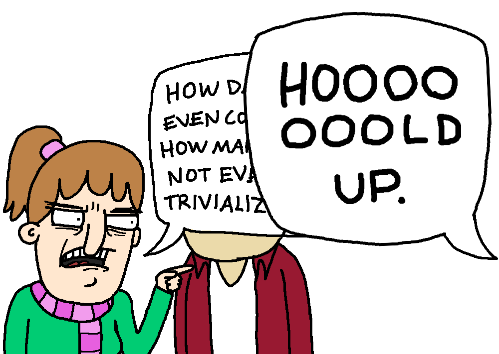
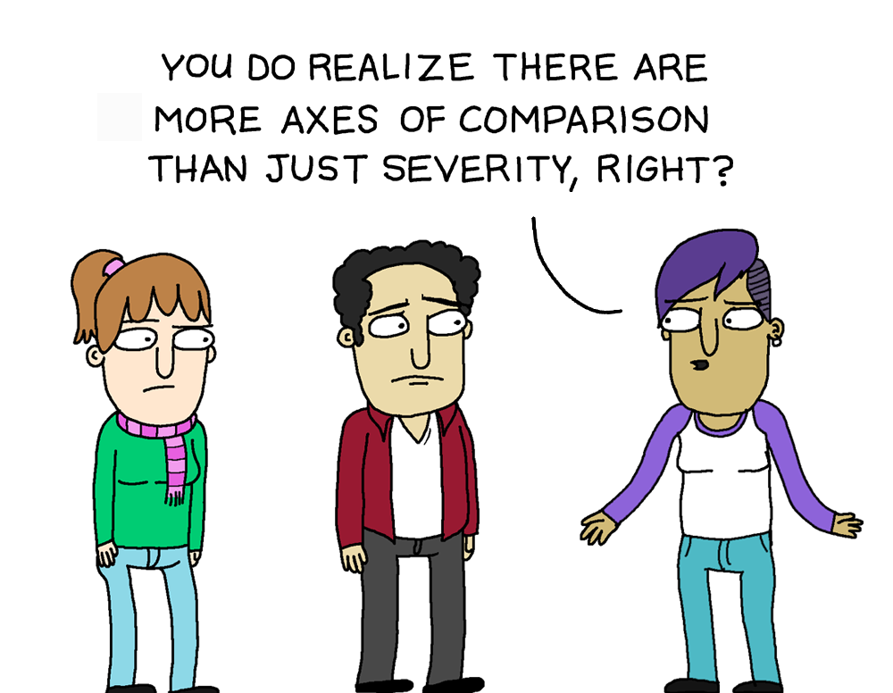
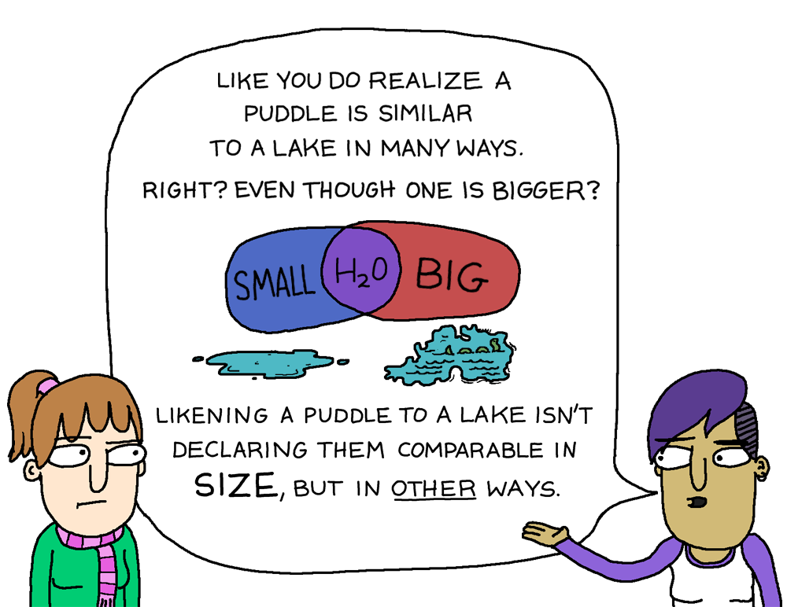
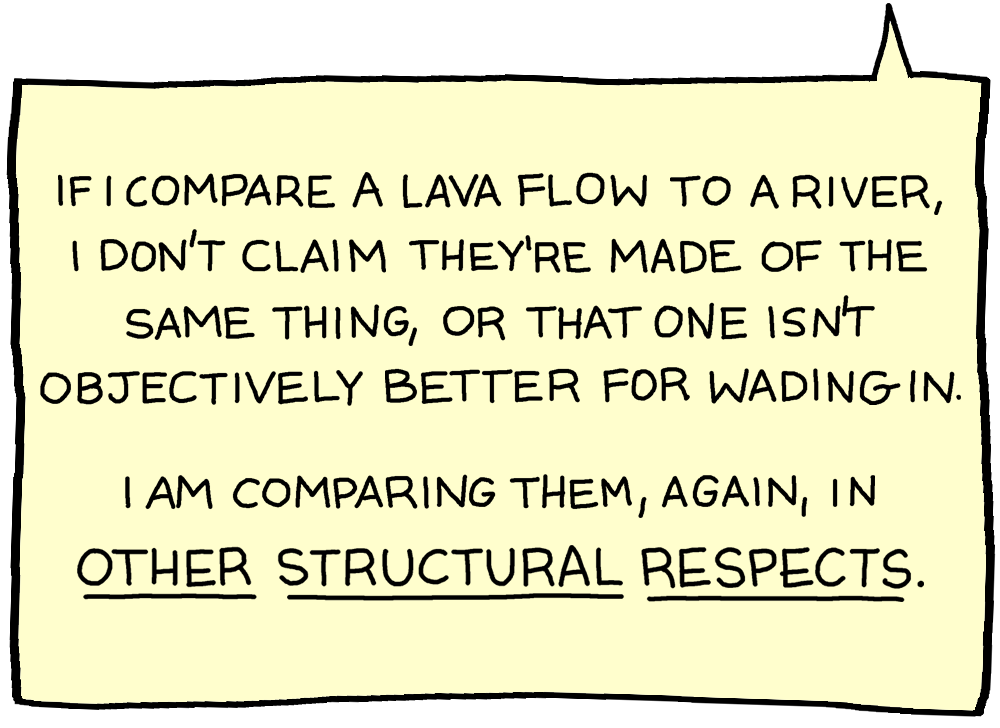
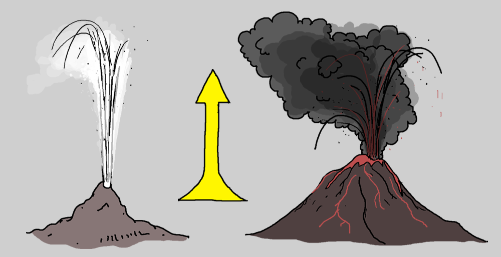
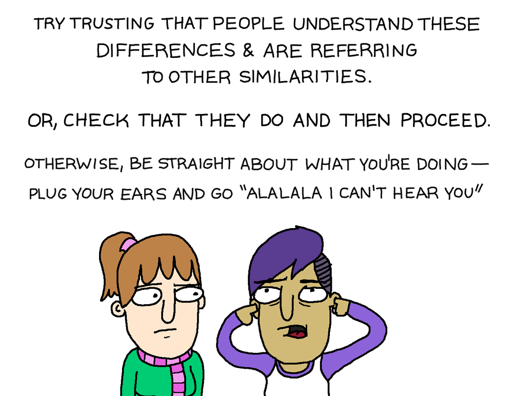
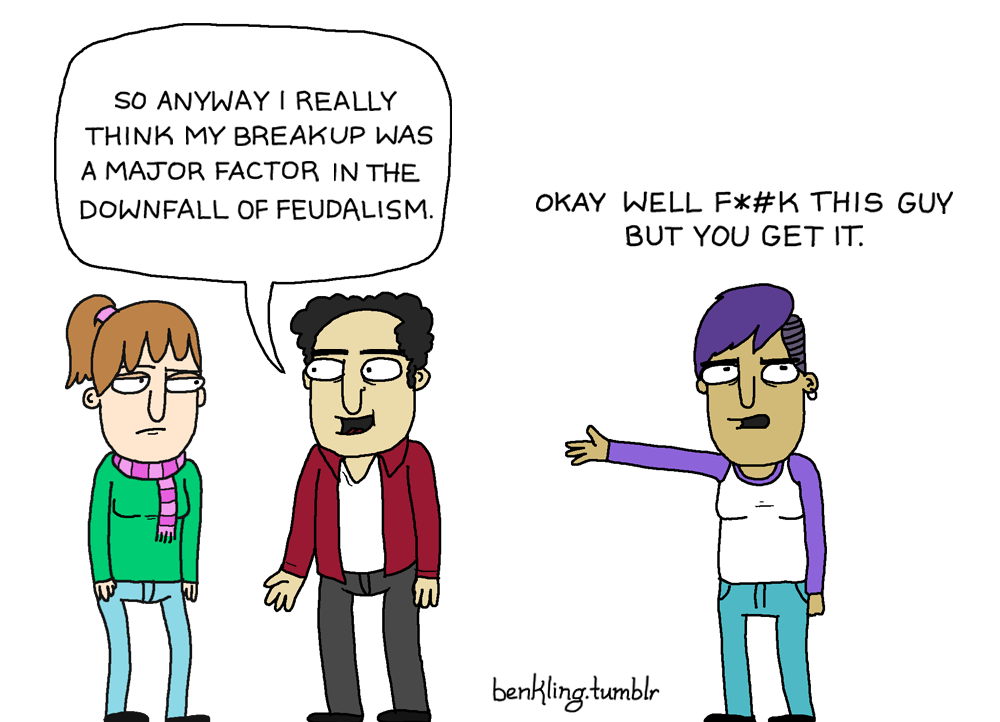

Claim AA100: Animals are bred for agricultural use
Details
The claim is in various forms:
- it's OK to do X to animals because they are bred for some purpose X, some other purpose Y, or some combination of the two.
- they would not have been born if not for the motivation of the human towards purpose X.
Problems With This Argument
1. Which is it?
Carnists will routinely refer to hunting as being the only humane way to obtain meat, or claims about what lions would do, which is in direct contradiction with this claim since hunted animals by definition aren't bred and lions don't breed animals for their consumption. So if one relies on this argument then one cannot rely on the other and vice versa.
Relatively few carnists eat bred meat but oppose fishing, hunting, and otherwise killing or disturbing wild animals. So it would seem as though this is unlikely to be the actual justification that carnists have since it's inconsistent with their actions and beliefs.
2. We don't apply this reasoning in other contexts
Humans have bred dogs for 1000s of years. Does that make golden retriever steaks OK? If breeding for purpose X is Carte Blanche for action X, one should also consider that most dog fighting dogs are bred for that exact purpose. So if this is our justification, to remain consistent, then we have to excuse a whole host of otherwise inexcusable behavior. But most people would agree that breeding cats with thinner bones "so they don't jam up my shredder" then justifies one throwing kittens into a shredder alive.
3. This is actually an argument for veganism
Selective breeding for traits like "is made of more/tastier meat" doesn't change the amount of suffering an animal undergoes. Frequently the opposite - most animals suffer greatly because their body proportions have been exaggerated. Chickens lay an order of magnitude more eggs than they were meant to, cow udders almost scrape the ground they are so engorged, and bred turkeys suffer under the immense weight of their giant breast, all of which are traits that have been selectively bred. So this argument is actually an argument for veganism, not against it, because the breeding of animals in this fashion itself should be considered unethical.
4. We don't apply this reasoning to humans
According to this argument, it should also be OK for two people to have a child explicitly to torture that child for their entertainment. This technically makes any claim of child abuse impossible for any intentional pregnancy, since this child was technically bred for a purpose and therefore one has moral impunity for any proposed action.
5. This argument relies on an idealized fiction
This still doesn't address the damage done to the ecosystem, clearing land for breeding these animals, and starvation of food from third-world countries to feed livestock. The eating of cultivated meat for one's entertainment hurts plenty of non-bred animals. Carnists imagine some ideal fictional universe for themselves where one raises a handful of backyard chickens, which doesn't contain all of the collateral damage of our current meat industry but satisfies the requirement of eating only bred animals. But this is representative of essentially no one.
Related Claims
Claim AA101: Animals are better off being farmed than in the wild
Details
Animals have it better on a farm, even if they are killed than they would have in the wild. So therefore it is ethical to farm them.
This is specifically to address the justification based on: "Animals in the wild suffer. Animals on farms suffer less. Therefore farming animals is ethical", and is related to the argument addressed elsewhere that "Farm animals would die if we released them into the wild".
Problems With This Argument
1. This argument relies on an idealized fiction
One can hardly consider standing in one's own filth for hours on end until meeting an untimely demise to be somehow better than in the wild. Depending on the animal, conditions in the wild are not bad at all and conditions in factory farms are, by comparison, abysmal.
One common defense is "But I'm just talking about well-treated animals", but it would seem as though relatively few carnists eat completely vegan at restaurants and any other situation where they cannot ethically source the animal products they consume, so it would seem as though this isn't the actual justification carnists are relying on for their actions.
2. This is a false dichotomy
Those aren't the only two options. The third option is to not breed the animal into existence. It's a false dichotomy to say that a cow would die in the wild because that cow simply would not exist, which is far more ethical a situation than bringing one into existence just to imprison, torture, and slaughter it for one's own entertainment.
3. We don't accept this argument in any other context
"Better" isn't "good". Even if we accept the premise of the claim, it's not a reasonable argument to compare something bad to something worse as a means of making the slightly better thing somehow ethical. "Bad" is bad; "better but still bad" is also bad. We can compare absolutely any bad act to something arbitrarily worse as justification, but no reasonable ethical system grants a pass on that basis.
4. Moral Nihilism doesn't work either
Moral nihilism is the only place this argument can run, which is to say "There is so much suffering with animals dying in the wild, factory farms are almost inconsequential and therefore morality has no meaning", to which the answer is 1) That is factually inaccurate, there's far more animal agriculture than wild land animals and 2) even if it weren't, moral nihilism itself is a poor argument.
Claim AA102: Animals are treated better than humans
Details
There are a lot of human needs that aren't met in this world, such as access to clean water, shelter, and food. You are legally not allowed to deprive a pet, for instance, or a farm animal of those same things.
Also stated "You would be locked up if you treated an animal the way we treat other people", and other statements about how great animal welfare is in the world of agriculture.
Problems With This Argument
1. It's objectively untrue
There are plenty of animals in the woods for which we don't provide food, water, and shelter. We don't put people in jail for not providing for woodland animals. So if you treat wild animals the way you treat wild humans you wouldn't be "locked up".
2. The positive treatment of farm animals is just means to an end
The only reason that we need to provide those for farm animals is that we have imprisoned them within a fence that they are unable to escape from, and because we are fattening them up for slaughter to get as much money out of them as possible. But that's not a defense in any other context. For instance, it can hardly be a defense against taking hostages that one gave them a bottle of water and some food in the days leading up to the filming of the execution video. It isn't a good defense in the case of animals either.
3. This is just playing tennis without the net
If we compare these few positive things we do for animals - giving them food, water, and shelter - with the negatives - the imprisonment (often in confined spaces standing in their own filth), the separation of calf from mother, killing them at a fraction of their lifespan, and the practice of gassing or shredding them alive - it would be hard to deny that the negatives of having to find one's own food, water, and shelter outweigh the positives of not being thrown alive into a shredder.
But this argument doesn't consider those negatives; it just counts the positives and ignores the negatives, a technique that inherently can be used to justify any moral action. This is no different than stealing someone's car under the premise of "freeing up their garage space" or some similar absurd justification. Yes, surely anything sort of murder has a silver lining for the victim, but is that really a justification?
4. One can use this claim to justify human slavery
Slaves are given free food, water, and shelter. They aren't asked to pay any money for those things! But we wouldn't say that giving slaves free accommodations justifies slavery, in the same way, that it doesn't justify animal cruelty. It can't be said that we are "giving them free care" when the animals pay a huge cost in the form of their abuse. Especially if we wouldn't choose such a situation for ourselves
Claim AA200: [Body part X] has developed for eating meat
Details
The carnist here claims that teeth or some other body part are evolved for eating meat, or that evolution is somehow prescriptive by some necessity.
Problems With This Argument
1. Which is it?
Carnists will claim this on the one hand, but then turn around and claim that atherosclerosis as a result of eating meat means nothing and that we should ignore that meat eating is a contributing factor to many of the top causes of death in the developed world, such as heart attacks, strokes, type 2 diabetes, and cancer. So then, which is it, are we adapted towards eating meat, or does the fact that saturated fat coats our arteries a clear sign that we need to steer away?
Also, this contradicts the argument that animals are bred for consumption, because if evolution is prescriptive in this manner, then one would have no reason to breed animals for consumption because they would already be designed for it.
Furthermore, this also would contradict the argument that eating meat was necessary for the development of certain important human traits (such as intelligence) because you run into a chicken-and-egg problem. If it's only ethical because it helped us develop, then it wouldn't have been ethical before the development. This would require you to lean on some other justification, in which case, that would be your actual justification and therefore this argument would be a moot point at best.
2. This argument is self-contradictory
Your brain evolved to make you know it's unethical, which is just as valid as any other body part. This is especially highlighted in conversation by carnists' long sighs followed by some statement about the helplessness of the situation, that they tried and failed to go vegan because it's too hard. So if evolution made your brain - and your brain made you think it was unethical - then shouldn't this argument make you go vegan?
3. Evolution is not prescriptive toward morality
Plenty of objectionable things that are made possible by evolution are not moral, "whatever evolution made possible must be moral" for humans. This is just "might makes right" with the additional step of "evolution made might". Consider some parasites evolved to eat their hosts from the least-to-most important parts to keep them alive for as long as possible and thereby inflict the maximum possible suffering. Most humans regard this with some level of horror, and thus it seems unlikely that this is the argument that carnists truly rely on for moral consistency.
4. We don't live in the past
What was ethical or necessary in the past isn't ethical or necessary now. If at one point it was necessary to do anything, that justifies nothing once that condition is no longer met. For example, the first killing in self-defense can't now justify all murders once the self-defense is removed from the scenario; that situation is in the past and what is in front of us needs to be objectively evaluated independently of it. Similarly, whatever evolved was just for survival advantage at the time, but these pressures largely no longer exist.
5. It doesn't actually address the argument
You can't respond to the claim that "carnism hurts animals (in addition to other humans, the environment, and yourself)" with "yeah, well evolution makes it easy!". That is a complete non-sequitur and does not counter the argument. Carnism remains unethical for those reasons, the latter is an irrelevant fact.
Claim AA201: We have canines to eat meat
Details
The idea here is that eating meat is OK because we have developed omnivorous canines to do so
Problems With This Argument
1. This is factually inaccurate.
Our teeth do not look like an omnivore's. Since bears are such a frequent point of comparison for an omnivorous diet, go ahead and quickly look up bear teeth or even those of raccoons. If you look in the mirror, you'll see that your teeth are a particularly bad characteristic to choose because it's definitely an argument against carnism.
2. Teeth don't even prescribe diet
The saber-toothed deer has sharp teeth, and so do gorillas, yet both are herbivores. Even these animals have much more aggressive-looking teeth than you but somehow manage to make it on plants alone.
3. Evolution is a bad argument in general
Claim AA202: Eating meat helped us evolve higher intelligence
Details
The idea is that eating meat helped us in the past evolutionarily, so it is justified today.
Problems With This Argument
1. Which is it?
This is a contradiction with the claim that it's OK because animals are bred for a specific purpose because those animals at the time were not. So is it then that the outcome of intelligence justifies carnism (i.e. what comes after the killing) or is it that breeding justifies carnism (what comes before it)?
2. This has nothing to do with reality
You're not surviving off the land on the Serengeti. You can't talk about hunting animals with spears having helped us evolve to justify putting frozen bags of chicken wings in their shopping cart. Freezers and shopping carts didn't exist. Furthermore, the animals we're killing now aren't the ones humans would have killed back then.
3. We don't live in the past
What was ethical then isn't now. Xenophobia and tribal warfare, for instance, was a major player in keeping tribes together and affected human migration patterns that had us populate the globe, but that does not give us the freedom to do whatever we want to people that look different from the members of our small ingroup.
4. It doesn't actually address the argument
You can't respond to the claim that "it hurts animals, other humans, the environment, and yourself when you consume animal products for your own entertainment" with "yeah, well it helped us evolve". That is just an argument about the ends - but that doesn't justify the means and therefore does not counter the argument.
Claim AA300: We have been eating meat for thousands of years and zero Indigenous people are vegan
Details
The carnist claims that eating meat is somehow to be grandfathered in as though it is now ethical, simply because it was either:
- necessary in the past
- simply done in the past
- part of some hunter-gatherer past
Problems With This Argument
1. It is objectively untrue or vague
The idea that it was universally necessary is a baseless assertion to start (e.g. Jainism has existed for hundreds of years which teaches non-violence towards animals). So then the fallback position would have to be that violence towards animals "was generally regarded as OK", which then is just really a popularity argument. This is a poor metric for morality, as history itself has shown. So if you believe that history should dictate morality, then you probably shouldn't make this argument in the first place.
2. This is playing tennis without the net
The only way to lump in modern farming (throwing diseased animals in small cages filled with their own filth for one's own taste entertainment) with something like traditional hunter-gatherers (fighting to survive in the wild) is to cherry-pick the characteristics of each of those actions to an unrecognizable limit. This, therefore, isn't the justification that one can use to justify carnism in a modern context.
This is based on some kind of idealized parallel universe that can't possibly include McDonald's Drive Thru - which has not existed for thousands of years.
3. We don't accept this argument in any other context
People have been doing a lot of things for a long time, including slavery, murder, theft, and torture. That doesn't just give one freedom from ethical responsibility in any other moral scenario.
4. This doesn't address the issue
The issue is that it's unethical to abuse animals for your entertainment under any ethical system. You can't counter that with "yeah but it's been going on for thousands of years". OK, great, well it's still unethical to abuse animals for your entertainment, and you've stated an irrelevant fact.
Related Claims
- Tropical fruit X causes deforestation
- veganism promotes economic globalism
- Domestic livestock are the currency of the world's poor
- It's our culture to eat meat
Sources
Claim AA301: It's cultivation, not oppression
Details
The claim here is that animals are cultivated for use, not oppressed by animal agriculture
Problems with this argument
1. This is semantics
"Cultivation" just means that animals have been systematically exploited for a long time. Having done something for a long time doesn't actually change the ethical characteristics of an action. Hence, all of these arguments apply
Claim AH100: Humans are at the top of the food chain
Details
Carnists claim that humans are justified in eating meat because it is their natural place within ecology to do so.
Problems With This Argument
1. The food chain isn't real
The concept of a food chain is an invention that helps give an introduction to concepts in basic ecology. It is too simplified to even be useful in any serious context, such as in cases where two species (usually one being invasive) predate on each other (or on each other's young), for instance, or when species eat their own young. There is no "food chain" in that context in any meaningful sense, it's just a simplified model for teaching basic biology to school children.
2. This isn't carnists' actual justification anyway
Even if the food chain actually existed as a real thing, is drinking other species' milk really apex-predator behavior? Or putting a stack of neatly extruded pepperoni into a shopping cart? So, some imagined "food chain" isn't actually why carnists do what they do, and isn't their real justification.
3. It's not even justification
Even if you accept the argument that humans are part of some imagined natural ecology that somehow includes hotdogs, it does not follow that what is natural within ecology is automatically ethically justified. Is eating the young of your own species OK because animals do it in the wild?
4. This is self-defeating
Even if one somehow ignores all these problems, meat is still an ecological disaster that also starves people in third-world countries, which serves to only destroy the very "food chain" being argued for. So one can't really use that as justification for eating meat or consuming animal products.
Claim AH101: Lions eat meat
Details
The carnist claims that because some species eat meat, we should ethically be allowed to
Problems With This Argument
1. This contradicts other arguments
Other arguments involving humane slaughter, or how the breeding of animals justifies their slaughter contradict this argument since those are in direct opposition to how lions hunt. So if you argue for one you can't argue for the other.
2. You are not an obligate carnivore
The point is that if you're reading this, you don't need to eat meat to live. So this isn't a question of what an animal that has no choice would do. Ultimately, this argument is akin to pointing to someone else's self-defense, for instance, to justify outright murder. That sort of logic doesn't fly in any other context.
3. It's cherry-picking.
Interesting that carnists conveniently pick the lion. Let's pick an animal arguably much more similar to us, monkeys that throw their feces in an argument. Carnists don't seem keen to copy that or claim that is ethical behavior. What about humans that kill other humans? Does Ted Bundy's existence now justify all murder? After all, "Humans kill humans - it's just how it is!" and "When I look out at humans, I see them killing each other, so I can too!"
Another case of cherry-picking is how carnists consider "the hunt" as equivalent to putting meat into a shopping cart that has been extruded, ground up, and cooked. This seems like it has little resemblance to anything lion-related.
4. That is just a non-sequitur
Carnism hurts animals, other people, the environment, and yourself. The justification can't be "yeah, well he's doing it too". That doesn't address the argument, and carnism remains unethical.
Claim AH200: God put animals here to eat
Details
The carnist claims some superiority on the basis of theology
Problems With This Argument
1. Which is it?
Carnists will then turn around and claim it's OK because animals are selectively bred for human consumption. Which is it? Did God put the animals here in a form fit for consumption or did humans do that?
2. The Bible is "The Big Book of Multiple Choice"
As Jeff Dee pointed out in coining that phrase, you can cherry-pick verses that go either way on a lot of things. Just simply look at any list of biblical contradictions. Not necessarily that they are all irrefutable contradictions, but rather that post-hoc rationalizations can be used to justify any position one way or the other. Sure, you can argue that one is saying X and the other Y, but can you argue in good faith that this is the only reasonable interpretation that could ever be possible for this combination of verses? Of course not. Hence, why slavers and abolitionists in the United States were both quoting from the same book. Other holy books are usually no better in this regard.
One can support - from Holy books - everything from human slavery to female genital mutilation. So unless we're willing to accept that any religiously motivated action is now by definition ethical, then this isn't a good argument. Particularly when one might get stoned to death upon a literal reading of this text, and the only argument that one would have is a faith-based argument that their faith-based argument is wrong.
3. You also can use bible verses to support veganism.
There are many Christians and Jews who believe strongly in their religious conviction towards avoiding animal suffering. For instance, in the Garden of Eden, when things were good in Genesis 1:29, Isaiah 11:6-8 and so on. This isn't about a theological debate though, just recognize that if you search for the bible supporting veganism you'll get people making good arguments.
Perhaps if you're a Christian, you might be best convinced by simply by Romans 2:15. Ask yourself what you think the law on your heart is. Does that include imprisoning and torturing animals for your own entertainment? Does that include dog fighting or torturing animals? If not, then you are "without excuse".
4. Religious Institutions are routinely wrong on ethics
The Catholic Church, the largest single body of the largest religion on earth, issued a list of nearly 100 apologies that were the result of religiously motivated action. Even if your sect claims a religious exemption for eating meat, can you assert that eating meat will never be on such a list that includes apologies for the slave trade and injustice towards women?
Related Claims
Sources
- List of biblical contradictions
- List of cases of intolerance in the Bible
- List of ambiguous passages
Claim AH300: Animals are made to be eaten
Details
"If animals aren't meant to be eaten why are they made of food?"
Problems With This Argument
1. This is a thing people say but don't believe
Children are also technically made of food. Is involuntary cannibalism now moral?
2. Might makes right
This is ultimately a might-makes-right argument. We can eat animals so we should. Well, "can" and "should" are two different things. The fact that it is ethical to do something doesn't logically follow from the fact that you can do it.
3. It still hurts other people
People in other countries are starved because of first-world meat, and there are heavy environmental impacts. This argument doesn't address those problems which would make it unethical anyway, regardless of the point of view of the animal
Claim AM100: Animals don't understand morality
Details
The claims are variously stated:
- When you look out in nature, animals kill each other and have no moral qualms about it, so why should we?
- Animals don't understand morality, and therefore we have no moral obligation toward them
Problems With This Argument
1. Which is it?
Carnists will go on to then claim that humans have some sort of supremacy as to why one cannot, for instance, eat an infant even though they may have intelligence at that stage less than an animal. But which is it then? Is it that we should look out for animals and mirror their behavior because we are of their ilk, or are we superior such that we should not mirror their rights? This argument seems to want it both ways.
2. Moral agency isn't a requirement for being the subject of moral obligations
If it were, then we would say that we have no moral obligation toward the mentally disabled or small children. Clearly, we do. This isn't about the animal's moral obligations toward us; it's about our moral obligation toward the animals. Obviously, we can't hold a shark "accountable" for biting a human, but we should definitely hold a human accountable for killing sharks needlessly by the thousands.
3. We don't use someone else's ethics in determining our own actions
A toddler will walk up to other kids and randomly take things from their hands because they don't understand social norms. But any time a toddler is holding something, is it fair game for me to take? Or is someone allowed to assault the mentally handicapped or people with dementia because they might be hit by them in a fit of confusion? No, of course not. So, given that we never use someone else's morality for our own, why do we justify it in this one particular instance?
4. Most "food" animals don't kill other animals
Most animals we eat are typically prey animals and not predators. All the classic farm animals are herbivores, as well as deer, quail, and almost all other commonly hunted animals. The fact that an obligate-carnivore predator kills prey "without regard" (whatever that means - did we survey lions or something?) doesn't really apply to you also killing the prey. If anything, shouldn't it be the opposite - do you regularly envision yourself, upon seeing someone assaulting a victim needlessly, jumping in to help the assailant? So this argument doesn't actually apply to the correct set of animals.
5. Most "natural conditions" are obligate carnivorous conditions
If you are reading this, you are not an obligate carnivore. The actions of an animal that does something out of necessity (or an omnivorous animal who doesn't know where its next meal is coming from) doesn't apply to humans doing something unnecessary with their grocery pickup where neat packages of ground beef are placed in the trunk of a car at the click of a button.
6. We don't judge the ethics of actions by popularity.
One could equally claim "When I look out at society, I see people killing people all the time. War, murder, self-defense. Therefore, it should be legal for me to kill another person so long as there is some prevalence of people killing people."
7. People understand Morality
...and eating meat hurts other people, for instance, in countries where food is scarce due to it being exported to feed "food" animals, or in the form of climate change.
Claim AM200: Carnivores would kill you if given the chance
Details
The claim here is that lions, etc. would kill you, so it is OK to kill them.
Problems With This Argument
1. Most of the time you're not killing predators
Most animals we eat are herbivores, such as cows, pigs, sheep, chickens, etc. So the supposed reciprocating morality argument doesn't even apply, because herbivores wouldn't attack humans for food.
2. We don't dictate our morality based on our enemies
If a six-year-old is mad at you and punches your leg, you are not ethically justified to lay him out with a kick to the throat. Using superior might in this context is no different that using weapons on animals. It doesn't matter that they don't have the same moral compass.
Similarly, are we allowed to commit genocide against the Sentinelese because they attack anyone that approaches their island? Or what about combative dementia patents, can we line them up and use them for MMA practice? This starts to get kind of out of hand as to what is permissible in this context.
3. Carnists don't follow this when it comes to other animals
Most carnists would agree that you don't bite other people's cats, or bark at other people's dogs, even if they would do the same to you. So carnists don't actually believe this argument regarding themselves.
4. The other victims
Eating meat comes with other impacts such as the starvation of food out of countries to feed livestock, as well as environmental impacts that hurt people. So this doesn't justify the collateral damage that comes with animal agriculture.
Related Claims
Claim AP100: Vegans should oppose pet ownership
Details
There are a number of claims that carnists make around pets that vary:
- Vegans must be against pet ownership to be morally consistent; a true vegan would never own a pet
- Vegans must be against service dogs because it's "using", a.k.a. exploiting animals
Problems With This Argument
1. It's not a typical vegan position that pet ownership is inherently immoral
Holding onto an animal as a companion is no more "using" the animal than holding onto a child for which you are the guardian. It matters whether you are looking after the long-term well-being of the animal. People are looking after the well-being of their pets and intend to protect that animal from death until their natural lifespan expires; they do not do the same for farm animals.
2. For the same reason, service dogs are not immoral
Again, it comes down to the well-being of the animal. If service animals are being abused then the abuse itself is an immoral action.
Some have compared this to "raising backyard chickens". However, in raising backyard chickens, there's a few key differences. The first is that there's only about 1 service dog to 1500 people, rounding up, - in the US at least, which would, ballpark, correspond to about 1 egg every 10 years for people using the number they naturally live to 10 years and lay 1300 eggs (again, rounding up). This leads to the second difference, which is that then one needs to scale up massively if one intends to produce eggs on any level that avoids essentially going 99.99+% vegan. So you have to really start packing the chickens in, and then someone has to pay you for all the food you feed the chickens, and suddenly we're back where we started, which involves poor conditions for chickens caught in the animal agriculture system.
This would seem to be unlikely to be the case with service dogs given the scale of the demand for service dogs given that service animals are inherently in a 1:1 relationship.
Claim AP101: It's animal abuse to feed your pet a vegan diet
Details
The claim here is that it's harmful to feed your pet a vegetarian diet. If you don't want to kill animals, don't get a carnivorous pet.
Problems With This Argument
1. It's not true
There's no "magic" nutrient that animal products have one can't get from fortified plants. Sure, a cat needs synthetic taurine. What is wrong with fortifying their foods? Pet food companies do that anyway, even with non-vegan food. So why not investigate vegan cat and dog food companies? A well-balanced diet is a nutritionally adequate diet, no matter the origin of the materials used to make it.
2. Sometimes "carnivorous" pets are recommended a vegan diet
Some animals are recommended a (well-balanced, well-planned, etc., etc.) vegan diet even though they are part of a species that we would think of as "carnivorous". It's even credited as the reason the record-breaking dog Bramble made it to a quarter-century on a plant-based diet. So the idea that plant-based foods will automatically kill a dog is just not true.
3. Anything about pets doesn't translate to humans
It almost goes without mentioning, but if you are reading this, then you are not an obligate carnivore in any sense of the term. So arguments about pets don't apply to you. It's still unethical for you, a human, to unnecessarily cause harm because it's purely for your entertainment, even if a cat needs a more specific set of nutrients.
Claim AP102: The carnivore pet prefers meat and therefore feeding them vegan food is stupid
Details
"Hey look at that video of that lady who convinced herself her dog lost preference for meat. Wasn't it hilarious when the dog went for the meat over the vegetables she was feeding him? This just proves that dogs need meat to live."
Problems With This Argument
1. Self-destructive habits exist
Humans eat themselves onto the show "My 600-Pound Life". Animals famously will lap up antifreeze to the point where it's used as a popular saying. Is what an organism prefers really indicative of what is good for them? Probably not. So there's not a great correlation between immediate gratification and healthfulness.
2. This is really just a few bad arguments rolled into one
- Vegan said/did silly thing X. This invalidates veganism
- Dogs need meat, biologically speaking
- Lions (or in this case, dogs) eat meat. That justifies my carnism
Dogs might prefer meat, but that says nothing about dog health - and even less about human health. And neither does the fact that some random vegan once made a bad argument for veganism.
Claim AP200: Some vegans attack zoos. That's crazy!
Details
The claim here is that zoos and aquariums do a lot of good:
- They donate to and support conservation
- They teach kids about wildlife
- They promote a connection to wildlife that will make people "care" about conservation
- Animals are held in good condition and therefore there's nothing wrong with imprisoning them
And therefore it would be another "crazy vegan" argument to be against them.
Problems With This Argument
1. "Zoo" is an ambiguous term
Zoos, as with anything, exist on a continuum. On the one end are possible non-profit animal sanctuaries that are established enough to sell plushies and t-shirts on the side to fund conservation and animal rescue efforts. On the other end is, for instance, the Waccatee Zoo, which is probably the most depressing image search of all time, and there's the most obvious one that gets all the documentaries - Seaworld. So you'll have to research this "zoo" you're thinking of heading to, and ask yourself what things it does.
One thing to consider is, for instance, that most Major-city zoos attempt to get a wide range of animals that the public will expect. This includes, for instance, elephants and other animals that normally roam long distances. If they obtained these animals by capturing them and removing them from the wild then that sort of is problematic for arguments that lean on "they are just rehabilitating and releasing animals". I would probably assume they are captured for most zoos, or kind of bred from some stock that these zoos share and buy off one another, and the number of animals that are rescued, rehabilitated, and re-released is probably negligible in comparison, but there doesn't seem to be a great way to find this information out.
Zoos also euthanize excess animals, and animals sometimes die or have to be put down as a result of accidents, whether it's the highly publicized Harambe or some shipping container of nameless penguins that arrive dead. Some initial research shows that neither scenario is that uncommon. So how they manage the animals is worth thinking about.
2. Zoos seem to come up short on the benefits they usually purport
Zoos claim that they are based on education. This seems to be a dubious claim at best. In terms of information about animals, I would hesitate to assume that a kid got more out of visiting a zoo than reading a simple age-appropriate book. (In fact, as a kid I can name numerous things that I remember distinctly learning about sharks, penguins, and insects from books - I recall being fascinated by goblin sharks despite never seeing one in person. I can't tell you a single thing I recall learning about animals from visiting a zoo as a kid.) This is redoubled in the age of looking up documentaries instantly online.
The other claim is that they help in some way with the "connection" to the animals. But this is also somewhat dubious because you're equally having your kid form a bond with just indiscriminately caging animals before heading to the cafe area to get them a slice of pepperoni pizza (so much for teaching them to have a "connection" with animals). If you want to teach people how to have a connection with animals try just not eating them for a change, and if you want them to see animals in person - have them visit a proper animal sanctuary. So all in all I'm not quite sure that the education claim is truly cogent.
3. Conservation: Is this the best way?
The other benefit that zoos mention is that they somehow promote conservation. So the claim here, more specifically, is that it's morally justified to imprison some animals if it means that we can conserve others of the same species. I wouldn't be doing my job if I didn't point out that most of these conservation efforts are to reverse the effects of carnists destroying habitats by things like farming food for livestock, poaching animals, and killing sharks and sea mammals as by-catch for fisheries.
The moral question thing is if it is indeed imposing suffering on animals to imprison them in cages - which seems like, again, has a sliding scale where on the one hand some animals, like stick insects, might have no awareness that they are imprisoned or might prefer the lack of predators, and on the other hand, some animals, like elephants and whales, that roam long distances that are confined to a tiny space. Now it should be argued that, for instance, there's nothing wrong with keeping a cat as an indoor cat as a means of protecting the animal from other animals and cars, just as we would say we have a responsibility to protect a child from things that might hurt it even though we're technically restricting freedoms as a result, but that's not carte blanche to keep your cat confined to a shoebox - so the type of enclosure is another sliding scale. However, it would seem as though most city zoos are attempting to get a good diversity of wildlife and therefore have no problem with the more problematic enclosures for roaming animals. So on a case-by-case basis, you'll have to decide whether you think the institution imposes suffering on its animals by caging them, and if so, that it justifies conservation efforts. We don't accept arguments about imposing suffering on some humans so that others might live a better life, so it doesn't seem like this argument would hold water.
The other question that we really need to ask ourselves is if this is indeed the best way to accomplish this. You'd be better off paying to see a nature documentary in an Imax theater that donates the proceeds to conservation, for instance, or donate that money directly yourself rather than paying a middleman.
4. Conclusion
Are zoos vegan-compatible? Animal sanctuaries show that this is not impossible in principle. But given all the issues with zoos where the positives seem to come up short and the negatives seem whitewashed, it's not some far-fetched crazy vegan argument that they should, at least in some part, be avoided if one doesn't want to contribute financially to animal suffering. So it's quite a reasonable stance to be against zoos for ethical reasons.
Claim EA100: Milk production is not harmful to farmed animals
Details
Milk comes from a smiling cow on a hill with a giant bell around its neck; a girl with two braids and a blue apron comes up the hill with a bucket to milk the cow under a rainbow. Why wouldn't the cow on the carton be smiling? I mean, so how could it be unethical with drinking milk today from a grocery store?
Problems With This Argument
1. It's fiction
Actual milk production starts with bestiality and ends with a slaughtered calf. The cow gives birth and the calf is separated from the mother to avoid cutting into the yield and is either sold off to be slaughtered within a few weeks of being alive or... if it's a female in good condition it can be raised to perpetuate the cycle. The cow will continue this cycle, and will probably be killed before its sixth birthday, less than a third of the way through its life.
2. The results
Given that the production of milk is inherently tied to the slaughter of animals, vegans argue (correctly) that lacto-vegetarianism represents a 0% middle ground between slaughtering animals and not. By drinking milk you are still subsidizing the slaughter of animals, and it doesn't matter if it's a "local farm", either.
3. Collateral Damage
You still are paying for cows to take food from developing countries, you're still contributing to the unsustainable nature of the animal agriculture industry, and doing a lot of ecological damage. Taking the milk and not the meat doesn't actually solve any of those issues, either. Cows and calves are slaughtered and abused for dairy.
Sources
Claim EA101: Animal products are ok if it's local
Details
"My uncle's farm has a bunch of cows that are kept in good conditions as pets, so it is ethical to buy his milk and/or eggs?" (The same arguments apply either way)
Problems With This Argument
1. This still contributes to animal slaughter
Okay, so the "uncle" in this story bought a female calf and hens from someplace, who sold a bunch of female calves and hens to other people... where did the males go?
2. This is still strengthening that sector of the economy
This is still paying money for an animal product and thereby propagating money and tacit approval within that system to strengthen the economy of animal abuse.
3. Sustainability issues remain
Not only does this fund the slaughtering of animals, but this also doesn't address the sustainability issues around animal agriculture, because in growing livestock animals we still are feeding livestock animals food that causes global starvation and deforestation, using massive amounts of water, and causing ecological harm. The only way to address these issues is to avoid consuming animal products.
4. It doesn't help
These animals are turned into meat and it doesn't matter if they weren't factory farmed or what their living conditions were before they were killed, that is still unethical.
5. For milk, specifically: Cows only produce milk following a pregnancy
So the "uncle" is still selling off calves for slaughtering to keep up the milk production in any sort of volume. If he's artificially inseminating them, it is also bestiality. So animal abuse and cruelty continue with every pregnancy to keep the milk supply going. If everyone refused to engage in this behavior of animal cruelty, you would hardly ever have the opportunity to drink bovine milk, and it would be unsustainable.
Claim EA102: Can't you just milk an animal and it not be unethical?
Details
The year is 2505. Everyone is vegan. We have a sanctuary with some cows that aren't forcibly interacted with. What's wrong with milking one and selling the milk?
Problems With This Argument
1. Let's run the numbers
Ok, so here's the plan, you now need to keep cows for at least 4 times their current lifespan - well past when they make milk. You also have at least twice as many animals (males are now not automatically slaughtered). So you're looking at more than an order of magnitude reduction in the amount of milk right off the bat.
So without artificial insemination, you're relying on the natural reproductive cycle of cows to determine when to drink their milk, which the calf is cutting into, and the cow only is producing significant milk for a relatively short period of its life, maybe a quarter - if you're lucky. If you're looking at grass-fed only and you're not artificially inseminating the cows to produce the milk (because you've somehow reasoned yourself out of bestiality), it's even worse on the sustainability.
With no slaughter market to keep such milk profitable, there will be orders of magnitude fewer animals (for reference, there are about 30000 total American Bison alive today, which is how many cows are slaughtered in America in just 8 hours) on average.
Then let's do this calculation: just in the US, and I would be generous and assume 100000 cows, but I'll even be generous and give another order of magnitude. A million cows. So let's say even half their lifespan to 10 years to be more generous (so that's 100000 pregnancies per year). And with all this generosity you're looking at a cow pregnancy rate (and therefore total milk production rate) of slightly less than 0.3% of our current rate, assuming we avoid practices like mother-calf separation or forced milking, etc. which could each reduce the production by an order of magnitude each... but we'll ignore.
So let me get this straight, the plan here is to avoid going 100% vegan by going 99.7% vegan on milk, and 100% vegan on everything else. That's all with the heaviest lowball of all time on that percentage - In reality, you're looking at significantly less. If one relies on this justification, then it covers the drinking of milk once every few years.
2. This is a fantasy anyway
I'd get into more arguments about how selective breeding is harmful to the animals and therefore things would remain unethical, but why bother? We're now pretty deep into fantasy land here; this alternate universe has nothing to do with reality. One can't use this as any sort of justification for using animal products in the real world, where it involves the active torture and slaughter of animals.
Claim EA103: My uncle gives me his local animal products as a gift
Details
The idea is that one can obtain animal products as a gift which absolves them of ethical responsibility.
Problems With This Argument
1. This is no one
I've never met someone that accepts non-meat animal products as gifts but doesn't consume animal products in some other context. So this is an unusual edge case and isn't the justification for the majority of carnism.
2. Unethical things have to happen for any production level
As previously mentioned, unethical things need to happen in the pursuit of making such a farm actually productive in any capacity, so all the arguments on this page apply.
3. It doesn't actually fix anything.
If you consider the implications of an action based on the amount of suffering and well-being it produces, accepting gifts of animal products means that "your uncle" (or whoever is giving the animal products) is still deriving personal value from those animal products in the form of a gift to you and is, therefore, more likely to continue paying for animals and therefore their abuse and slaughter.
Ultimately, it's up to you to decide how ethical you want to be and how much you want to lend tacit approval to that market.
Claim EA104: Artificial insemination is OK because the animal didn't struggle
Details
The claim is that artificial insemination isn't bestiality because milk cows don't struggle during the process, or that yes, it is bestiality, but it's ok in this context.
Problems With This Argument
1. Where'd you get that sperm?
There's really only one way to get it. Use your imagination. Holding a "receptacle" doesn't help If someone told you the story about how they were holding a paper towel so their dog didn't get on your carpet, would it be any different? You not being sexually aroused doesn't help. Forcible insertion with an object for your own enjoyment in any other context isn't ethical. Why does it matter here? You're still abusing an animal to its own detriment.
2. "The animal didn't run" isn't a defense
That doesn't matter. Not going to get graphic here, but it didn't matter in the case involved in this wikipedia article, for instance. Regardless of what you want to label it, we would consider it unethical.
3. Why do bestiality laws contain exclusion clauses that clearly apply to cows?
Why, following the above-mentioned case, did the law that made it a felony include the text "Nothing in this section prohibits accepted animal husbandry practices"? It's not like laws about driving stolen cars need to mention "by the way, just so you know, stolen-car laws don't apply to legally acquired vehicles". If this is so distant in practice, why is there such an overlap that this clause is needed to clarify any confusion?
4. All the other ethical implications
It's still wrong because breeding cows to be slaughtered is harmful to animals, other people, and the environment. So you can kick these terms around all day, whether you want to call it bestiality or not, but what you call it doesn't change the core issue.
Claim EA200: Egg production is not harmful to farmed animals
Details
The carnist here claims that egg production is not harmful so eating eggs is not unethical
Problems With This Argument
1. Unethical farm practices are abound
Baby chicks are thrown into shredders alive as a part of egg production. Males, as well as females with issues, are simply tossed into a macerator. Interestingly, Germany is taking a bold stance to be the first western country to phase this out legally by 2022.
Otherwise, factory-farmed chickens have their beaks or other body parts mutilated, live in confined spaces standing generally in their own feces, and are mercifully not required to live under such horrific conditions their whole natural (decade-or-longer) lifespans as they are killed before their second birthday, usually.
2. Eggs subsidize chicken meat
It still is making it more economical to turn chickens into corpses, and therefore purchasing eggs is still participating financially in incentivizing meat production, and all the sustainability and human costs associated with it.
3. Avoiding factory farming doesn't help these issues
Locally sourced animal products are unethical.
Claim EA300: Sheep enjoy being sheared
Details
The carnist claim here is that sheep don't get hurt in shearing, so it can't be unethical
Problems With This Argument
1. Sheep do not enjoy being sheared
Sheep are part of animal agriculture, they are in factory farms with the rest of the animals living in confined squalor and are routinely slashed by automated shears, and are abused and terrorized like all the others once they meet their end.
2. There are sheep-specific practices
Go ahead and look up "mulesing", which is a procedure harmful to the animals regardless of if it is claimed to be for their health.
3. It's still funding animal agriculture
It's paying money for animal agriculture, and funding the torture of animals, thereby increasing the profitability of taking a sheep and turning it into meat.
Claim EA301: Mulesing isn't supposed to hurt the sheep
Details
The claim here is about "mulesing", in particular:
- it helps the sheep deal with insects
- it is supposed to be done with anesthetic, and the fact that it isn't in most cases is just a vague argument for animal welfare that doesn't involve changing habits.
- in some vague possible scenario, someone has a pet sheep and they have the pet undergo this procedure to promote the animal's health, then it would be ethical
Problems With This Argument
1. It'll never be humane so long as the animals are slaughtered for meat
That's all well and good that it's in theory supposed to be done under some set of conditions that are not harmful to the animals. But these animals are going to be slaughtered. So as long as that happens, any such processes are simply part of the enablement of further abusing them
2. Animals will be treated as commodities first and feeling beings second.
As a result, corners will be cut on procedures (like the anesthetic) that we would never want cut for, say, our pets. But this is fine in the mind of the abusers because these aren't beings that deserve any better. There's no point in debating how to treat an animal concerning some procedure when they are going to be slaughtered for meat anyway.
3. Fantasy isn't reality
In principle, one could make an argument that they could have a pet sheep and gather wool from the pet just as a fun side project (equivalent to walking the dog or something) and maybe give that wool to friends or sell it. But that isn't the scenario we're in when we go to purchase wool products. Regardless of what exists in some fantasy scenarios, real animals are hurt when you purchase wool products in the real world today.
Claim EA302: leather is ok because the other parts are more in demand
Details
The claim here is that vegans should not be against leather since it's a useless byproduct they are throwing away
Problems With This Argument
1. This is based on a false assumption
Raw animal hides do cost money and are not free], especially if they have been processed. So by buying leather commodities you are supporting the infrastructure that brutalizes animals.
2. The use of the whole animal is irrelevant
It doesn't matter if the whole animal is used in calculating what is done to animals as unethical, any more than it's a defense that one disassembled and parted out the entire car that one stole as a defense of stealing cars. So all of these objections apply.
Claim EA303: I have leather stuff I still want to use
Details
"I can't go vegan because I still own some stuff with animal products in it."
Problems With This Argument
1. Your ownership of animal products doesn't dictate ethics
An action is ethical or unethical regardless of what is in your house. The argument "I own stuff with animal products that I've already purchased" cannot be used in any way to logically counter the statement "Paying for unnecessary animal abuse is unethical". If the animal abuse that goes on in a slaughterhouse is unethical, that is true regardless of what objects exist in any arrangement in your house. So this wouldn't actually challenge veganism.
2. This isn't the focus
Veganism typically focuses on not purchasing animal products, e.g. I don't buy frozen chicken from my local grocer because that means they will order a new box of frozen chicken one bag sooner, and they will, in turn, increase demand at the chicken abattoir, which will call for an additional chicken to be trucked in sooner, so an addition chicken is bred, etc. up the supply chain. So it really is the consumption on that level that makes the biggest difference.
Whatever the case is, all deconversions of this type take some quantity of time. So even if you decided to go from carnist to ethical vegan overnight, you'd still have a pantry full of carnist food, etc. So this "scenario" is true for pretty much true for every former carnist that exists.
3. Veganism isn't about calling yourself "a vegan"
If you aren't convinced that you're a "True Vegan" unless you don't use any animal products, and you still own a pair of leather shoes (for example) that you want to wear out, then great - go vegan except for those shoes you already own. If you're convinced that not doing carnist things is more ethical than doing them, then just worry about that without labeling yourself a "True Vegan". The reason to go vegan isn't because you want some label of "Vegan" attached to you anyway; the reason to go vegan is because it is the biggest and easiest contribution you can personally make to the amount of animal cruelty that happens. So just do none of the carnist things moving forward, and don't worry about whether or not that one past purchase somehow spoils some imagined label in the future.
I'm sure that if you ask anyone that has been disabused of their carnism if they could go back and change the choices they've made regarding things they already own, the answer would (barring unusual circumstances) be yes. But we can't change the past, including that pair of shoes you bought. All we can change is the choices we make moving forward.
Claim EA400: What about eating ants, anemones, sea sponges, or jellyfish?
Details
The carnist here either
- attempts in poor faith to discredit veganism because eating animals is possible without doing harm
- attempts in (somewhat) good faith to find a substitute for meat that does less harm
Problems With This Argument
1. It's worth questioning the assumption
This argument seems to focus on trying to find the most ethical animals to eat, rather than questioning the underlying assumption as to whether animals need to be eaten at all, especially when the best foods for protein are plant-based
2. Many of these animals lack any real nutrients
For instance, jellyfish don't have significant nutritional value to each other or humans, so eating them would seem to be more novelty than nutrition.
3. Probably all the sustainability/economic issues remain
Ants aren't necessarily any better at converting food into meat than cows (given their exoskeleton is largely chitin - which is indigestible to humans), certainly probably not an order of magnitude better. So in that case, all the sustainability issues would still exist. Same with jellyfish: medusa farms probably, again, run into the same sustainability issues, but it's difficult to quantify given that they have essentially no nutritional value.
4. This doesn't discredit veganism
The fact that in the future it would be hypothetically possible to eat something without a central nervous system or that has a diminished capacity to suffer doesn't change the fact that right now, as we speak, eating meat contributes to animal suffering. So we can have an esoteric conversation on the side about some weird hypothetical, but it's important to recognize that this hypothetical is just fiction.
Claim EA500: I hunt animals as an act of mercy when they would die in the wild anyway
Details
The claim here is that hunted meat is ethical because:
- it would be ethical for everyone to only eat meat from hunted animals and abolish animal agriculture.
- hunting is an act of mercy and killing an animal is therefore a good thing
- carnists are controlling the overpopulation
- the animal dies instantly rather than letting it starve out from overpopulation
Problems With This Argument
1. This is rarely the actual justification
Almost nobody hunts and otherwise eats completely vegan at restaurants, friends' houses, etc. on ethical grounds. That person just doesn't exist. So this isn't then a great argument to use because it defends 1) the vast minority of meat consumed in developed countries and 2) an even smaller minority of people's actual positions.
2. Hunters aren't culling
Hunters aren't picking out weak animals that are terminally ill. Generally, the most desirable animals are the most virile, strongest, and largest. So this isn't an overpopulation control or act of mercy on the animals, so long as people brag about how many points that buck had. So any argument about controlling weak animals is even less likely than the argument as a whole.
3. This isn't sustainable for the general public
The number of deer that are hunted in the US is about 6 million, which makes 336M lbs of meat, or just about 1 lb per person (This is much larger than other animals like elk for instance, which is about 6M lbs of meat by my calculation - assuming 400lbs meat/elk - in states when it's common). At the same time, The US consumed about 265 lbs/person of meat. So if everyone just relied on deer hunting, we're looking at a 99.5% reduction in meat consumption in the US by these numbers.
So again, the plan that carnists propose to avoid going 100% vegan is to go 99.5% vegan on meat (and 100% on other animal products). So even if none of the other problems with the argument existed, it's a defense for such a teeny tiny minority of the animal products that are actually consumed.
4. Killing things instantly doesn't make killing ethical
We don't consider that painless or quick death is much better ethically than allowing one freedom, even if that freedom comes with risks that one might die. So this argument just doesn't work in any other context. For instance, no one considers shooting stray dogs or cats to be ethical because they might run into some other trouble in the wild, and then turns around and uses this as a defense for dog fighting. And no one would say "we shouldn't release wrongfully imprisoned people because they might go out there and get in car accidents or mugged". It just doesn't work for literally any context other than consuming animal products.
5. Inevitability of the similar doesn't make right
This defense can be used to justify, for instance, stealing a car. That person was going to lose possession of that car at some point anyway, whether by the car breaking down, the person dying, or whatever (if you argue they were going to sell the car, well whatever they spent that money on would reach the same fate). Also, everybody dies; so, now murder is okay! Again, with this reasoning we can justify literally anything.
6. Side effects
Hunting and hunting-related practices such as the sale and import of deer carcasses have led to an exacerbation of chronic wasting disease. Attempts have been made to control this by banning certain practices around hunting like baiting. So this still hurts the ecology.
Claim EA501: The animals die instantly and feel no pain
Details
There seems to be some idea that killing is ok as long as it is instant and the animal feels ok right up until the moment they feel nothing. Surely this cannot be all that unethical.
Problems With This Argument
1. "Any volunteers?"
If animal slaughter is so painless and quick, would anyone reading this volunteer to be "painlessly slaughtered"? Would you pay to have a perfectly healthy loved one "painlessly slaughtered"?
If not, then one must ask themselves why murder is wrong. In any other context, killing being wrong has nothing to do with the suffering that one endures before death. For instance, is it OK to be a serial killer that only kills people who are living a good life under the pretense that one did it instantly? Of course not. Then the only way to apply this to slaughtering animals is some sort of special pleading.
2. This happens less often than you think
Animals killed by captive bolt pistols often need "re-stunned", and one can only imagine the number of calves that make it to the throat-slitting portion still alive but just too weakened to struggle enough that it makes the job slower. Because slaughterhouses are judged by their speed and volume in the end, animal welfare leading up to slaughter is not a typical consideration, even if cameras are rolling.
Related Claims:
- "Locally sourced meat" is humane - as long as I avoid factory farming, I'm ok
Claim EA600: Vegans don't eat honey? That's crazy.
Details
The claim here is that bees aren't aware that honey is being stolen, don't suffer in collection, and/or are useful... so why is honey bad? After all, pollinators are actually doing quite well and
Problems With This Argument
1. Bees are objectively harmed in the process of honey creation
Setting aside for the moment moral responsibilities, it's important to consider the fact that bees are objectively harmed by current beekeeping practices. Bees are frequently killed by the hive as a part of beekeeping, either in preparation for winter or as a part of general resource management. In addition, bees also can be harmed in the process of honey extraction or during other activities such as trucking them around the country. The queen is usually held captive or has her wings clipped to not disappear with a large part of the hive to start a new one. This sort of behavior, wherein bees are hurt for a product, is exploitation by definition.
2. It's not clear that the "lack of suffering" portion of the claim is substantiated
It's easy to lump together all insects, but it seems that bees are uncannily intelligent and can even remember human faces. More importantly, there has been a fair amount of research that shows that bees have something akin to emotional states which in and of itself is kind of interesting, and it seems that there are therefore objective tests for the stress level of bees. However, given the harm that comes to bees in honey collection, there should be some consideration given to whether you think this exploitation is ethical.
Claim EH100: I will define carnism as axiomatically ok; morality is subjective anyway
Details
I give this type of argument the name "moral presuppositionalism".
The claim here is that we can axiomatically define morality to include carnism, and therefore carnism is justified. Another form of the argument is "I will presuppose category X is justified. Carnism is of category X. Therefore carnism is justified." This fundamentally underpins every single argument of the designation EH, AA, and AH on this website, amongst others e.g.
- "I will presuppose what is legal, natural, selected for by evolution as ethical."
- "I will presuppose what happens to non-humans, what I pay for (rather than do myself) to not be unethical."
- "I will presuppose everything within the same moral designation of ethical"
- "I will presuppose animal cruelty as not a moral imperative but good on you, I guess, if you want to be vegan"
And infinitely more...
Problems With This Argument
1. It's not morality then
Nothing prevents me from axiomatically defining myself as the only being towards which moral obligations exist. Murder is now ethical.
Unless it focuses on the reduction of needless harm toward the well-being of conscious beings, it can't be morality. Even if one axiomatically defines indiscriminate murder as moral and anything else immoral, is that really morality? You need to provide a justification or it's just the fallacy special pleading. It's an argument that's indistinguishable from something you pulled out of your hindquarters for convenience.
2. This argument would be unthinkably bad in any other context
Imagine you and a friend are walking down the street when you see a shiny bright blue Porsche and your friend turns to you and says "You know, you and I have identical moral values concerning stealing cars... except I make a special exception where I morally presuppose it's okay to steal specifically cars with specifically the license plate of ABG3109... oh would you look at that?! That car right here has exactly that license plate! How convenient!" Or if it had a vanity plate then "I've decided it's okay to steal cars with vanity plates" or "I've decided it's ok to steal light blue cars on the second Tuesday of the Month... well would you look at the calendar! It's my lucky day!".
It takes very little to see how poorly reasoned such an argument is. But substitute in "it's okay to harm the well-being of specific animals in specific ways" and all of the sudden it's impossible for some people to identify why this argument is silly.
3. There are humans impacted
If we want internally consistent morality, we have to take into account the human impact of eating animals. If one wants to then axiomatically make it ok to hurt other people in all the ways that carnism does, it starts to become ok and not ok to do highly arbitrary combinations of things.
4. If you make this argument, just admit it already
Eating animal products inflicts needless suffering and reduction on the well-being of conscious creatures for one's own entertainment, both animal and human. There's no good justification for this in any reasonable moral system. If one then claims that somehow entertainment is worth more than a sound moral system, then the discussion has moved from ethics to potential medication for psychopathy.
5. If you refuse to care, that doesn't make you right
One can just repeat "I don't care" repeatedly as a substitute for a reasoned argument. That doesn't make for sound reasoning.
Related Claims
Claim EH101: I don't need to justify carnism; you need to justify veganism
Details
The idea is that carnism is some sort of default position and that hurting animals doesn't require justification. Au contraire vegans need to justify veganism.
Problems With This Argument
1. This is a meaningless position
The vegan argument is a position of not buying the idea that you can't harm specific animals in specific ways without justification. The problem with arguing against this is you probably already agree with it for the vast majority of animals and definitely for humans, and the vast majority of ways you could harm one's well-being. Wherever you draw the line, you need to then justify this very contorted lasso you draw around those specific animals and those specific purposes. without said justification, this is all just special pleading.
2. How will history judge?
For instance, how would this position deal with throwing baby chicks alive into shredders (a common egg industry practice)? It's hard to imagine that this statement has some default position of "not immoral" and that one would somehow have to "prove" that shredding animals alive is bad.
3. Consider this challenge
Present any set of moral axioms. Examples include:
- Golden Rule, e.g. "Do unto others as you would have them do unto you"
- The Rawlsian Veil of Ignorance, i.e. that we want to design a world without the knowledge of what position we enter it in is unknown to us at the time of design.
- Utilitarianism, e.g. "We should maximize well-being and minimize pointless suffering"
- Deontology: "We have moral obligations towards those we might affect which we should not trespass"
They all immediately speak to veganism by default. That is, until one rolls up their sleeves, gets in there, and starts tinkering to qualify out animals: "well, when I said that we try to minimize suffering and maximize well-being... I really just mean humans... well... if intelligent aliens came around I would include them too, So I mean I guess intelligence is the criterion, but not the intelligence of individuals because we can't eat unintelligent humans..." and the pretzeling up commences, listing off a litany of rationalizations for why animal cruelty for one's own entertainment is justified.
Not hurting animals is the default and simplest argument under literally any reasonable moral system, and the desperate search for justification is the mountain that carnists try to climb every time they invoke morality.
4. This is just another example of carnists' moral presuppositionalism
And therefore all the same problems apply.
Claim EH102: Veganism is good and all, but isn't a moral imperative
Details
This position is put forth by Matt Dillahunty. So the basic idea here is that we have moral imperatives and moral virtues. Moral imperatives would be immoral if we break, but moral virtues are not immoral if we don't do them. For instance, it's wrong to kill someone, but it's not wrong to skip donating to a charity. It makes you a better person to donate, but it's not a true moral imperative.
Veganism, under this argument, is like donating to charity. So veganism is good, but that doesn't make carnism bad.
Problems With This Argument
1. This is basically any other weak argument with extra steps
Let's assume that whoever is promoting this theory would define taking pleasure in human murder (including of infants and the mentally handicapped) as immoral, along with dog fighting and other similar forms of deliberate animal torture. So under this system, these things all fall under the first category (immoral if committed), whereas carnism falls under the second (not immoral if committed).
Then all that's happened is the arbitrary separation of different types of abuse of sentient beings for one's own entertainment. Any reason for this separation is already covered by any of the other arguments. Are you separating based on species and their intelligence? Are you lying to yourself that more narrow definitions of torture is the only abuse? Is it based on an irrelevant non-sequitur, such as our bodies or that Disney movie with that theme song?
Whatever it is, then that is the actual justification, and this whole argument is just then a framing mechanism to make that argument sound more complicated than it is.
2. It seem awfully convenient where this separation lies
So some forms of deriving pleasure from sentient-being abuse are immoral, some aren't, and it happens that the most convenient choice is where the separation lies (This isn't the first time). It then gives the impression of it being an arbitrary speaker bias. What would be needed to avoid that and promote this claim into a serious argument is:
- A litmus test for which actions qualify for the realm of imperatives and which don't.
- A serious analysis of why abusing or torturing animals for your own entertainment somehow doesn't qualify that doesn't lean on any of the other excuses that carnists give.
Until such arguments arise, this is, at best, a framing mechanism for other carnist claims and at worst, an easy ticket out of having to provide a serious justification for carnism.
Claim EH200: Humans are superior to animals
Details
The claim here is that the morality of vegans is untenable because they believe all animals are equal to each other and all humans are equal to all animals morally. It's put in various ways, e.g. "A vegan would be unable to distinguish between killing a cat and a human child." or "Almonds kill 32000 times more animals [i.e. bees] than slaughtering a cow".
Problems With This Argument
1. Which is it?
Carnists will routinely refer to humans as being somehow "in the mix" of animals, either as part of the food chain or self-comparison to lions. One is then required to ask, which is it? Are humans superior to animals or just like other animals? If we are superior to animals then such comparisons are tenuous as best because you already are constructing a completely separate moral framework, so what would it matter if we were vaguely "a part of nature"? If humans are on the same level and "a part of nature" then you can't claim special rights. The only way to square these is to recast both these arguments as "might makes right", and then you've just thrown this argument away anyway.
2. This is a straw man
Almost no vegan believes that a human's life is equal to an animal's (I'm sure you'll find some strange exceptions). In fact, I think it's totally reasonable to think some human lives are more valuable than others. If you have kids, you might easily find yourself believing in a moment of choice that your child's life is more valuable than your own, or more valuable than that of an elderly, frail, or terminally ill person. The idea that all lives must be equal to believe in veganism is a straw man argument.
Almost all reasonable vegans would argue and accept that a human life is worth more than a bird's life, which is worth more than an insect's life, which is worth more than a plant's. Whether you're discussing the maximization of well-being or minimization of the suffering of "things", the only "things" you could consider are conscious beings. They are the only things that can suffer and have well-being. We also consider that an animal's capacity to experience the heights of well-being or the valleys of suffering within the moral landscape is greatest for a human, less so for mammals, less so for bees, and essentially none at all for plants because they aren't conscious.
So given the choice, it's completely reasonable to value the life of one life higher than another, and vegans do that.
3. Equality to humans isn't the criterion
It's not about whether or not the worth of an animal's life is equal to the worth of a human's life; it's about whether the worth of an animal's life is greater than the worth of your entertainment of eating meat.
Claim EH201: I base my morality on intelligence
Details
Animals are less intelligent than humans and therefore can be slaughtered for food. Arguments also include more specific indicators of intelligence, such as the ability to speak English or anticipate suffering.
Problems With This Argument
1. This is Special Pleading
We don't consider that a more intelligent adult should be issued hunting licenses for less intelligent adults. We also don't regard the mentally disabled or children with any less regard than that of an intelligent adult - in fact, we usually do exactly the opposite, our natural instinct is to defend the defenseless in any other context.
2. There is no objective measure of intelligence
Consider this scenario: we travel to another planet and meet a bunch of beings not unlike ourselves. They are better than us at calculus, but worse at emotional intelligence, so they couldn't cooperate to build a spaceship (that meant we visited them first, rather than vice-versa). Who gets to eat whom? Or is emotional intelligence not "real intelligence"... as declared by whom?
In the case of more specific indicators like language, whose language? If aliens use pheromones and body language to communicate (like insects do), then does that mean that they would get to eat us on the basis that we can't smell their pheromones or understand their movements? Or do we get to eat them on the basis that they perhaps have difficulty with some aspect of English grammar?
3. Carnists don't believe their own argument
If we, for instance, just draw a line at doing math, then we shouldn't eat animals. Also, as a society, we frown on the eating of golden retrievers, which are no more able to do math than other species that we don't offer any protection towards. So even on a species-by-species basis (which itself is untenable) what's the real metric? If we base it on specifically symbolic math, should we be able to eat cavemen?
If we don't like math, and instead we pick any other particular characteristic, or some sort of sum total, that also doesn't hold up: pigs are also generally regarded as smarter than cats, and we don't eat cats. Also, are we allowed to kill and eat stroke patients or the mentally handicapped who didn't do any of that or who have lost that capacity? So in all cases, we don't actually use intelligence, either in any specific category or in any general form, to determine what we can and can't kill.
4. This is just a stack of arbitrary criterion
The most obvious conclusion when one witnesses an animal suffering is that intelligence has nothing to do with it. When we see an animal caught in a fence or somehow otherwise suffering we recognize that it's not about some intellectual capacity. So it's already special pleading to base morality on anything other than capacity for well-being and suffering.
But then it's even more arbitrary to say it's based on intelligence - that is - on an arbitrarily chosen specific version of intelligence, and then one can sort of (again) arbitrarily pick and choose which animals we selectively apply the intelligence towards based on how good they taste.
5. Collateral Human Damage
By eating meat we're hurting other people in addition to animals, so this argument doesn't address that issue, which doesn't satisfy this argument's own criteria.
6. This is just another example of carnist axiomaticism with "intelligence" as the criterion
And therefore all the same problems apply.
Claim EH202: I base my morality on a species-by-species basis
Details
The idea is that eating animals is ok because morality is evaluated on a species-by-species basis with all members of the same species receiving the same moral benefits.
The thing that's important here is that we're ignoring emergent properties - we're not talking about how members of species X have characteristic Y, and the real criterion is characteristic Y - we're talking about the claim of species X itself being a criterion for morality. E.g. Not that we know dogs can't operate motor vehicles and therefore we restrict their ability to own a driver's license, but rather that dog-ness itself gives you some moral benefit that, say, cow-ness does not, namely the right to not be slaughtered for meat.
This claim typically arises when the carnist first presents some arbitrary criterion for deciding who can be the subject of immense cruelty (e.g. intelligence or usefulness) and when it becomes apparent that this is untenable because some humans even lack this characteristic, this species clause is invoked to close any loopholes. This is a great example.
It should be noted that this excludes conversations about conservation, but there the species is the emergent property because one is talking specifically about population dynamics. What's important in this scenario is husbandry and so the species (and genetics) itself is a criterion for selection. But this isn't what we're talking about We're talking about species being used as a proxy for morality, specifically.
Problems With This Argument
1. Morality by class isn't coherent
Carnists don't actually evaluate morality by class because that's a silly thing to do in any other context. Why should the morality of individual A towards individual X be dictated by the existence or characteristics of individual Y or Z or Q that are not part of this transaction? It doesn't make sense that it might be morally impermissible to do something to an individual, but now somehow the existence of a few copies of that being with similar characteristics on the other side of the planet or the far side of the moon now changes that calculus of what is moral?
2. The easiest answer is to respect all life
For instance, suppose we encounter some new species of a cow-like animal walking on all fours on a remote island and we evaluate them to be unintelligent enough to be locked in a cage and slaughtered for meat. But then we go to another island we find that actually, it was part of an undiscovered tribe of beings walking on two legs living in huts, making bonfires, etc. Now... is it no longer ethical to slaughter it for meat, because they are part of the same species as something more intelligent than themselves? Suppose the unintelligent copies outnumbered the unintelligent copies by a substantial number, could we now slaughter the intelligent ones for meat based on the median intelligence? Suppose then we find that these were similar animals but could not interbreed with the less intelligent species because they were too far away genetically, now are we back at ethical to slaughter the unintelligent, and unethical to slaughter the intelligent? Again, one is left to wonder: why does the existence of other members of the same species impact how one treats a being?
Or suppose a different scenario where we create a single member of a new species of animal in a lab, would it matter if we created a single one? Do sterile animals like mules have different moral characteristics because they can't give birth to a horse or any other species? Or do we make exceptions for cows and pigs since they've been grandfathered in, but we make the rule that we shouldn't add new species to the list? And if median intelligence is a criterion, how do you prove that somewhere in the galaxy there isn't a number of beings that outnumber cows on Earth that could interbreed with them but be more intelligent than humans, for instance?
Furthermore, what about how as late as 70,000 ago, there were four species of humanoids on Earth? Assuming they had the same brain capacity, if we put them in a time machine to the present, would an appropriate dividing line really be the ability to interbreed with modern humans or each other? Could we justify treating a being mentally similar to a modern human differently on the basis that it can't interbreed with modern homo sapiens?
These scenarios are all easy to answer if you seek to minimize any potential harm that may come to these beings as individuals, regardless of their intelligence, based on their capacity to suffer. But if one starts to accept that it's ok to slaughter animals for your own entertainment, then they are ignoring basic morality and painting yourself into a moral pretzel where some beings and not others can be killed without regard.
3. Species isn't even a good criterion
If you're free to choose species, can you also choose skin color... or ethnicity... or gender... or property ownership? What makes species a better criterion? Either it's going to be something else on the list, such as intelligence, or it'll be an arbitrary redefinition of species. One such answer is that "it's because it's what the animal can give birth to", but people of a certain skin color or ethnicity bring forth other members that look like themselves, so that doesn't answer the question, in addition to just being an arbitrary redefinition of species. And if interbreeding is a criterion, is a ring species a single "species" by this definition? And what about mules or other sterile hybrids? If we made a human hybrid in a lab, what species is it and can we eat it?
So this is already a problematic and fuzzy area, considering that we're talking about a dividing line as harsh as "you go to jail for killing a member of species X" and "you go to jail for stopping someone from killing a member of species Y" (or "let's put species Y in a jail purely for the entertainment of species X").
4. The argument loses coherence from here
Ask a carnist if they'd eat a golden retriever and most would say no. But coyote hunting is a thing, and most carnists won't object to it, even though coyotes, wolves, and dogs are all the same species. And there are plenty of cases where carnists don't grant different members of the human species the same rights, such as infants, people of different genders, or people with developmental disabilities. So the carnist is then making additional moral decisions based on emergent properties specific to those members of the species.
So, if you're keeping track of this pretzel: we now have another layer of emergent properties for moral decisions, in addition to the "species" property. And this "species" property comes from averaging together the members that you can arbitrarily interbreed with. It would then seem as though "species" is just conveniently used to close the loophole that is created when one okays unnecessary animal cruelty.
Again, if one seeks to minimize harm and maximize well-being by treating these individuals with respect, then that makes that entire question significantly easier.
5. Collateral damage
This argument still doesn't take into account the ecological and human impact of eating meat, and it remains unethical for those reasons as well.
6. This is just another example of carnist presuppositionalism with some arbitrary scientific designation as the criterion
And therefore all of the same problems apply.
Verdict
Basing morality upon species is not a cogent argument.
Claim EH203: It's ok to kill animals if it's for food
Details
The claim here is that it's axiomatically asserted as okay to eat animals if it's for some specific purpose, (generally food). For instance, one is using the animal to feed oneself, so it's not just for entertainment. A more extreme case is that, in a desert island scenario, one is using the animal for sustenance, so it is justified there as well.
Problems With This Argument
1. You don't need to eat animals
When faced with a grocery store aisle and having a choice between sticking a bag of imitation or real chicken in one's basket, barring unusual scenarios, the choice of real chicken is based purely on taste alone. Hence, it's purely for entertainment, in moral terms.
If one is faced with either starvation or eating an animal, then it is in fact appropriate to say that the animal is eaten "for sustenance". But in the scenario when one has the choice between more than one option of what to eat, either one can be eaten "for sustenance", so it isn't fair to say that it's making the difference when picking one over the other. The only real difference between those options is taste.
2. Therefore it doesn't change the calculus of ethics
So the fact that one is eating an animal doesn't mean that "the animal is killed to sustain me". That's an arbitrary dividing line within the category of entertainment. Would it matter if I killed cats - or, say, infants - for entertainment in the form of food? It shouldn't be in moral terms. There's no significant moral difference between liking the way a pig sounds when dying and liking the way it tastes once dead.
Unless you can demonstrate it is necessary it doesn't change the moral calculus significantly.
Claim EH204: Vegans are just basing morality on cuteness
Details
Vegans sometimes attempt to appeal to carnists' sense of humanity by pointing to cute "food" animals, such as bunnies or baby cows. Carnists will counter that cuteness doesn't determine morality.
Problems With This Argument
1. This is a straw man of the vegan position
The actual vegan position is that animals shouldn't be abused on the basis that they are sentient beings, and therefore their right to not be abused overrides our sensory pleasure. This should be true no matter your moral framework.
The point of showing cute pictures of "food" animals is to attempt to get carnists to somehow care about their choices, not to somehow decide which animals to torture.
Claim EH205: Dogs are more useful animals
Details
The claims are:
- Dogs deserve higher moral standards because dogs can protect you from mountain lions or other threats.
- A sheep cannot protect you and therefore morally speaking does not deserve moral standards equal to that of a dog.
- The usefulness of a cow is limited to what it can make for us for food, therefore they have no moral protections against being food.
Problems With This Argument
1. This is just "might makes right" with extra selfishness added in
Here the argument is simply that "might makes right", i.e. that if you're capable of something then you're justified in doing so, but with the additional caveat that one is also very self-interested. So, one is then morally justified in doing what they what to whomever they want, but - and here's the catch - only if they want to and if it suits them.
Want to make a horse carry a load until its hooves bleed? That's what it's useful for. She can't walk any more? Bullet to the head. Dog is useful? Keep it. Cat is not useful? Enjoy throwing it off a cliff and smack the ground below.
This is not a consistent moral framework.
2. The calculus of dogs here is off
You might be overestimating a 35 lb. beagle's protection against a 200 lb. cougar. The usefulness in this scenario is typically overestimated. A bull certainly would be more protection if one trained it, since animals like cougars are intimidated by large-size beasts. And yet we slaughter cows. Also, if a baby is less useful for defense than a dog, can I now slaughter them? Or if there's a dog and a infant in a burning building - I'm supposed to save the dog because it's more useful at that moment. Unless... you know... I need something that only a infant can deliver for some reason.
3. These are arbitrary metrics
How many mountain lions have you encountered in your life? Why do you need protection from mountain lions, why not sharks?
Also, not that this should even matter, but on the basis of this absurd scenario, wouldn't actually it make more sense to have an animal that runs slow that you can outrun that can essentially sacrifice itself to the cougar? Most dogs will probably run from the mountain lion that's literally seven times its size, and a race between you and a beagle is not even going to be close; you're lunch.
Even if we assume a dog protects humans from mountain lions and if this is a coherent metric, consider that a basic firearm offers significantly more protection than a dog. So then would it be morally permissible to eat a dog as long as you own a gun? And if you had to, say, pawn the gun for a vet bill towards saving your dog's life, would you say that it's morally reprehensible to give up the gun, your protection against mountain lions, to save the dog? This just isn't a coherent position. The mere ownership of a gun shouldn't morally impact whether or not one can eat a dog.
4. How would you do in my test?
So if morality is based solely on usefulness - how do you think you would do if someone you didn't like were allowed to design the test? Specifically, a list of characteristics, and if you lack those characteristics, you have no moral worth in the books - they're allowed to murder you and won't feel bad about it? Suddenly this seems only like a good idea when you're allowed to design the usefulness test - which is again, might makes right as well as special pleading.
Claim EH206: I base my morality on the intelligence of the species
Details
We don't just base morality on intelligence or species, but on the combination of the two: what matters is the mean intelligence of the species as a whole.
Problems With This Argument
1. Each of the individual arguments is countered on the respective pages
But to summarize, carnist ethicists do the following:
- Create a set of rules as a standard for moral behavior based on well-being and suffering
- ... Ignore that standard in an act of special pleading to base the morality of eating food
- Create an arbitrary rule about intelligence as the criterion for which animals are ok to kill, and continue the special pleading in picking a subset of intelligence, such as verbalization (as understood by humans) or math
- ... Ignore this distinction anyway in assigning what species is ok to kill (e.g. in the intelligence of a pig vs cat, for instance)
- Create an arbitrary rule about how animals are grouped together based on interbreeding (again, an arbitrary property)
- ... Ignore this grouping anyway (e.g. wolves vs dogs) in assigning the selection rules left in step 5 that weren't ignored.
- And then apply an additional set of rules to make further adjustments for the rules in step 1 that include everything other than what animal is ok to kill as a part of eating.
And when this entire Byzantine formula is plugged into the calculator of morality, everything else we decided in step 1 applies, but now bacon is conveniently okay to eat.
The inclusion of the train of logical fallacies in steps 2-7 doesn't represent a sophisticated advancement over avoiding the pointless animal cruelty which step 1 would lead you to.
Claim EH207: Infants are exempt from special pleading because they have potential
Details
The chief problem with axiomatic carnist arguments is that they generally fail when applied to infants, who have properties (such as intelligence, ability to conceptualize one's own well-being, etc.) similar to animals. Carnists are quick to grant infants an exception based on "potential", e.g. "It's ok to {do X} to an animal and not to an infant because the infant has potential to eventually {do fully human intellectual thing Y}, so carnism remains ethical and "
Problems With This Argument
1. "Potential" opens up a giant can of worms
Every able-bodied baby also has the potential to be a serial killer or nobel-prize winning writer. This is meaningless though when considering the ethical implications of something. How does the potential of what something is make something ethical or not in this context?
If potential is worth something morally, this starts to become highly problematic. For instance, is a baby from a well-to-do family more intrinsically valuable because he or she will have more opportunities? If we can identify a demographic of people who will likely end up committing a crime at some point, do we relax permissions for ethics regarding those people? This really opens up a wide array of atrocious positions that rely on circular reasoning.
2. What about all the other scenarios?
Infants are a single scenario, but what about those that have mental disabilities, dementia, or people who speak a different language? Are we allowed to attack all of those people because they are unable to create a social contract with us? We then have to make exceptions for each of those, e.g. "I am allowed to eat anything that isn't:
- intelligent (like a normal human), or
- could be intelligent in the future (like an infant), or
- was intelligent at some point in the past (like an old person with dementia or someone that suffered brain injury), or
- is a like an intelligent being in every way except that it isn't intelligent due to some developmental error (like the mentally handicapped), or
- Could potentially make a social contract if we were in different circumstances (someone who speaks a different language or otherwise cannot communicate),
In addition to the other exceptions you need, such as to rule out people like the Sentinelese, who are islanders that will attack anyone that approaches their island, as they are not willing to make social contracts but the genocide of whom would not be morally permissible, etc. This also doesn't take into account all of the animals that carnists would take issue with eating, such as dogs and cats, as well as the different levels of animal cruelty that some carnists would deem acceptable. It should be clear here that this is an extremely contorted and squiggly line in the sand to draw that somehow puts all humans and deliberate animal cruelty to "good" animals on one side and all "food" animals ground up into burgers on the other.
The only reasonable place to run after this is to just abandon this project of creating anything coherent out of a being's capacity and to just hold onto species or some other vague human-superior argument.
Claim EH300: "What if you had to kill an animal out of necessity to feed your family?!"
Details
Millennial Millie presented more or less this argument to Earthling Ed as justification for animal agriculture, but this sort of argument is presented repeatedly in some imagined scenario
Problems With This Argument
1. That doesn't apply here
This has nothing to do with the optional killing of animals for your own entertainment. The question is: have you ever been in a situation in your life where you have had to kill and eat an animal and feed to it a loved one or else you would starve? If you're not in that scenario, then this argument doesn't apply.
2. This is just another example of carnist presuppositionalism
This position is that necessity in some hypothetical scenario justifies anything once that necessity is gone. But the first killing in self-defense doesn't justify all killing all the time, so this argument just isn't a cogent defense. We have no problem identifying the problems with an argument like this in any other context "Oh sorry I stole your car for a joyride... but you know, I could have been driving someone to the hospital in some strange parallel universe. What about that? Did you think of that?!". It's comical when the same framing is used in a context that isn't as easy and convenient.
3. Side note: stupid arguments deserve stupid answers
The funniest answer is just "Why would I kill an animal when I can pick up a vegan pizza from a place 5 minutes from my house". "Ok, but, I mean what if you were on a desert island?". "Oh then I would wait until the director yelled "cut" and we were done filming then order them something to eat from my phone.". "No I mean you're not acting in a movie." "Oh am I then in a TV show?... because there are a lot of vegan joints in southern California where those are usually filmed...".
Just disingenuously head for the door in any thought experiment. Did they put you on a glacier with only a seal to eat? Screw it, you put aliens in a flying saucer there with you.
Claim EH301: If you were put on a desert island with a pig, and he was all you could eat, then you would do so
Details
This is a common argument
Problems With This Argument
1. If you get to give me a scenario, then I get to give you one!
To honestly answer: I don't know. I'm assuming that I wouldn't know if rescue was coming. I assume that, if literally no other food sources exist, I realistically would probably wait for the pig to die and then eat his corpse, but I suppose that depends on the demeanor of the pig and self-defense. Whoever lives longer wins I guess, but I also have never gone any length of time without any food options (even if I was rejecting them to fast) - so I really don't know what day ten of hunger-induced delirium and marooned boredom looks like. However, I consider the likelihood of such a scenario ever happening to be essentially 0%.
My turn! It's tomorrow (or some other time in the next few days) and you're hungry. You're considering eating [food X] that has egg in it. But you remember this fact: that baby chicks are routinely thrown into shredders alive as part of the egg industry. What do you do? Do you pay money to create demand for this practice or not? I consider the likelihood of such a scenario, if you regularly eat eggs, to be essentially 100% (If you don't substitute in your favorite animal product and factory farming technique).
2. Arguments of necessity don't matter when it's unnecessary
What you would do on a desert island has nothing to do with reality.
Claim EH302: Veganism will make us weaker to alien attacks
Details
If humanity ever encountered a hostile extraterrestrial species, a fully vegan human species would be too pacifist to fight. We wouldn't have developed as much technology and weaponry and would lose. Since we can't practice killing people because that would harm humanity too much, we need to kill animals by default as a sort of "target practice" to keep us sharp.
Problems With This Argument
1. Alien warfare is really energy technology warfare
Whoever wins in a war against an alien species similar to ourselves is going to be determined by who is higher on the Kardashev scale. Animal agriculture is a huge drain on this energy gathering. Thinking of calories in terms of joules of energy (where 1 cal = 4.184 Joules exactly), the energy conversion of animal products is around 10%. That's a massive load on the system at every meal for self-indulgence's sake. So by eating meat, you're holding humanity back. We could be powering the next generation of technology with biofuels, but instead, we're dumping that wattage into livestock.
2. Animals aren't good target practice
Shuttling defenseless animals into a slaughterhouse isn't somehow helping us develop defense technology against an intergalactic species that can obviously fight back. You don't practice self-defense on the comatose. This isn't helping us fight extraterrestrials.
3. Climate change is a greater threat to life on earth
The probability of an imminent alien attack is essentially zero; all of our listening to the night sky shows no signals of an impending threat. By contrast, >97% of climate scientists agree that climate change is an imminent threat. In addition, eating meat is also a probable threat to kick-start yet another global pandemic. So if you want to parry existential threats to humanity, it should probably start with not eating meat.
4. Eating meat does hurt people
100% of worldwide starvation is caused by meat eating. So "not harming humanity" by killing animals instead... is harming humanity.
Claim EH400: it's legal to eat animal products
Details
The objection is that it's legal so therefore moral
Problems With This Argument
1. Literally no one believes this argument when they make it
Is female genital mutilation moral in countries where it is legal? Dog fighting? Slavery at one point in the US? This can't be a thought had by a critically thinking person.
2. This is just another example of carnist presuppositionalism with legality as the criterion
And therefore all the same problems apply.
Verdict
Legality isn't morality.
Claim EH500: X isn't an essential ingredient of chicken, egg, cow, etc. products
Details
The carnist claims that since X isn't a necessary ingredient to making product Y it isn't a moral consideration. E.g. Shredding baby chicks alive isn't a necessary component of making eggs, and therefore the fact that chicks are shredded is not of moral consideration when buying eggs.
Problems With This Argument
1. It doesn't matter
It does not matter that stealing a car isn't a necessary component of driving a car, stealing a car is wrong. We don't judge an action based on whether or not it could be moral, so that can't be your defense if you're driving a car you stole.
Claim EH501: I'm not paying for it, it's just collateral damage
Details
This argument is a claim that carnists don't actually pay for chicks to be thrown into a shredder, they are just paying someone for eggs and the fact that they are being thrown into a shredder is just a thing that happens. Another form of the same argument is "I'm not paying for baby chicks to be shredded, the farmer is".
Problems With This Argument
1. It's no better
We've established that if you're doing something immoral, it's immoral to pay to have it done. Well, the same argument applies here, just simply one more step. If it's immoral to pay to have something done, it's also immoral to pay someone to then pay someone else to have something done. The fact that you go through an additional middleman doesn't suddenly justify the action. This attempt to move things one more level out is just skirting responsibility.
2. This argument doesn't work anywhere else
It's unethical to murder someone. It's unethical to pay a hitman to murder someone. How does it suddenly become justified if we and some other would-be murderers get together, pool our money, and hire a few hitmen to kill a few people? Does that absolve the crime? Of course not.
3. This is just another example of carnist presuppositionalism with money changing hands as the criterion
And therefore all of the same problems apply.
Claim EH502: I use the whole animal so it's ok
Details
Nothing of the animal goes to waste, which tips the scale. The value that we get out of animal agriculture is greater than that of the animal itself not dying.
Problems With This Argument
1. We don't apply this logic anywhere else
We don't say that somehow if you part out an entire car, that somehow now makes it more ethical to steal a car because you get more money out of it. Nor is the economic argument sensical, e.g. "Well, I stole a car with low resale value and really high parts value so it's all good". When victims are in the picture that end up losing everything, we don't give moral immunity to the perpetrators because they got a little more juice for the squeeze.
2. This isn't even logical applied to other animal cruelty scenarios
Carnists would morally disagree with Yulin dog festival, but it doesn't offer much consolation to those opposed to the barbecuing of dogs that the whole dog is eaten. Likewise, is it really the problem with throwing baby chicks into shredders that you don't get useful chickmeal out the other side? Most people would say in those scenarios that maximizing profits from the economics doesn't make it more ethical to do what we do to animals.
Claim EH600: I am only concerned with human rights
Details
The idea here is that the only individuals that deserve rights are humans. The other way this is stated is to simply deny that it is an ethical issue altogether.
Problems With This Argument
1. Almost no carnists actually believe this
We grant plenty of animals rights. Dogs have a right to not be forced into dog fighting. Unless a carnist is willing to step forward and say that they are for dog fighting, bestiality, and any form of animal torture, then they don't believe this. If they do, then would they rather hire a babysitter for their children that is known to torture animals in their basement? Would you really say that if a baby dolphin approached you on a beach? Would it really be no big deal if you cut its fins off and threw it back in the water to the horror of all the other beach-goers?
2. Animal agriculture hurts people
It destroys the ecology of areas surrounding factory farms, leads to global warming, and starves poorer countries of their food, while forcing non-participants to pay for it with animal agriculture subsidies (read: theft), amongst other issues. So yes, it hurts people. You should be concerned with such human rights.
Claim EH601: It's ok to hurt animals because they are just biological machines without souls
Details
The claim is that it's ok to hurt animals because God gave humans souls, and animals don't have souls. Morality doesn't come from any argument of consciousness, suffering, and well-being. Instead, it's only emergent from the existence of a soul in the subject.
Problems With This Argument
1. So is it ok then to torture animals deliberately?
If it's ok to hurt animals and we have absolutely no moral obligations towards them, then is it wrong to deliberately tie an animal in your basement and deliberately torture them?
If your answer is yes, then consider the following scenario: You're looking for a babysitter for your infant child and find one that seems promising but you learn that he or she is doing exactly this to an animal in their own basement. Would that be an encouraging piece of information to hear or make no difference?
On the other hand, if your answer is no, then where is your dividing line? Is it ok then to throw baby chicks alive into shredders? Is it ok to keep animals in tight cages and kill them long before their natural lifespan? Is there a line? And what is the justification for not treating them poorly at all if soul is a binary yes/no moral justification?
2. Eating meat still hurts other people and the environment
So it's not a reasonable defense as to why you get to hurt animals because they are not the only victims.
3. This is just another example of carnist presuppositionalism with human species as the criterion
And therefore all the same problems apply.
Claim EH602: Animals are just operating on instinct; you can't prove they have feelings
Details
Animals operate more on instinct than humans do. Any display of emotion is just a display of instinct, they aren't really suffering.
Problems With This Argument
1. It's demonstrably false
One can objectively test that animals have emotions. For instance, one can agitate the animal and see if the agitated state persists. If the animal proceeds to hold on to an emotional state history, that is indicative of the animal having a "mood" that it is in. Animals down to even bees pass this test. Other tests can also be done such as if animals form friendships and receive emotional comfort from them.
Plenty of "food" animals pass these and many more tests and therefore are clearly not just running on instinct.
2. This is an inconsistently applied criterion
We also frown upon killing dogs, the disabled, or the elderly, even if they might be "running on instinct" perhaps even more so than the animals that we accept as edible. The only fallback is the same special pleading in other arguments.
3. Any counter to pt. 1 can be used to justify murder
The only remaining place to run is solipsism - that no argument or evidence that shows anything that we would call "emotion" or "mood" can be used to prove anything. Any evidence of "emotion" is just proof that the animal has the instincts of emotion. To this there are two responses:
- This can be applied to any human. Just because humans can talk, that is just an evolutionary adaptation, but humans telling you to stop killing them can equally be claimed to be "running off of instinct". If there's an impossible burden of proof for animals, why not have the same impossible burden of proof for humans?
- If you do indeed believe this argument, consider this scenario: you're looking for a babysitter and find out that one applicant beats a dog chained in their basement for pleasure and uses this argument to justify it. Are you more or less likely to hire them upon learning this piece of information?
4. This is an unfalsifiable position
You can just keep throwing anything and everything at someone that believes this and they will continue to shrug and say "Well that's just instinct". "Right, but we put them in an MRI and it looks like the same parts of their brains are lighting up as ours" "Oh, that's just an accident of evolution."
In such scenarios, it's incumbent upon you to demonstrate that your claim is correct since it's indistinguishable from something that you pulled out of your hindquarters to just throw as much spaghetti at the wall until something sticks.
Claim EH700: Moral nihilism justifies carnism
Details
The argument is that so much (animal or human) suffering has gone on already (or could be going on or is going on concomitantly), one more animal won't really add any additional suffering and therefore at any given meal there's no reason to not order an animal product. Examples include:
- "It would be cruel to animals already killed to stop now."
- "At least I'm not doing X extremely wrong thing, therefore X lesser wrong thing is justified".
- "There's no ethical consumption under capitalism."
- "The whole world won't go vegan, so what does it matter"
This is called "moral nihilism" because ultimately this position is that all morality is inherently meaningless.
Problems With This Argument
1. That is literally carte blanche for any action ever taken
If you do anything ever, and you live in a world where any significant amount of suffering ever exists, now everything ever is morally justified, because you can always deflect to that. "So many cars get stolen, what's another one?" "So many people die each year, what's another one [pulls out a gun]?" or even "So many people die each year, why not steal a dollar?". This is an obviously psychopathic view of the world.
2. Carnists don't believe their own argument about animals
Carnists claiming this also still would feel recoil in horror at taking a large knife and deforming a cute little dog for instance. "What does it matter, so many dogs have birth defects, blindness, or missing limbs? This is just another one of them now." Carnists would still be calling for that guy's head even though they turn around and propose some version of moral nihilism as a justification for their own actions toward animals.
3. Everything isn't equally wrong
Stealing $5, murder, buying a vegan sandwich, and throwing a baby chick alive into a shredder can't all be "equally wrong" if the word "morality" is to mean anything. That's just absurd. You don't get away with just pooling together your causing suffering with others doing the same. This isn't a real argument.
4. This is just a helper argument for carnist presuppositionalism
In this case, nihilism is a way to sort of launder the ethical implications of all actions so that you can then come in to axiomatically define carnism as ok vis a vis a more intellectual "Might makes right" stance. And therefore all the same problems apply.
Related Claims
Claim ES100: "I'm just waiting for lab-grown meat"
Details
This line of nonsense is what honestly and sincerely pushed me into making this entire website. If I keep hearing people parrot this vacuous garbage unopposed I think I'm going to go nuts, because it's an infuriating combination of inauthentic self-congratulation and doing absolutely jack squat.
Why
1. You didn't care before, what changed?
There are already vegan alternatives for everything. I mean absolutely everything. Burger patties, nuggets, wings, fish, cold cuts, sausage links, sausage patties, meatballs, etc. not to mention the non-meat animal products like butter, cheese (every kind - cheddar, provolone, mozzarella, smoked gouda - you name it), milk, yogurt, whipped cream, egg whites, and even full foods like vegan cheesesteaks, hamburgers, cheeseburgers, sub sandwiches, corn dogs, hearty soups, pies, brownies, cookies, you name it. Everything. Product after product comes out, and carnists don't care. Not even lifting a finger to stop throwing baby animals into shredders alive or slitting their throats. Even when the food is uncannily similar and can even fool meat experts.
Do you really mean to tell me carnists need a pure 100% 1:1 molecularly identical substitute for the slices of ham in their hot pocket, and even some imitation will subtract from just how gourmet that meal is? Give me a break. And by the way, is this 1:1 replica of the product that these connoisseurs absolutely need also include the fecal bacteria on meat or the pus that is prevalent in milk? Seriously. It clearly isn't about taste, because people will abuse animals as part of purchasing crappy dollar-menu meat-cheese-bread stacks.
2. "I super special promise I won't continue kicking the can down the road"
People also act like suddenly one single lab-grown meat specimen is all it will take like people aren't particular about what kind of steak they get. As we all know: waygu, filet mignon, ribeye... it's all pretty much the same, right? This is again, more nonsense, and the deflection will continue even if one type of lab meat comes into existence.
"Oh, I'm waiting for lab meat to come down in price, to be full-on cheaper than meat, [more/less] [fatty/stringy/hard] and closer to the right [texture/flavor], hit some arbitrary sustainability benchmark, to be accompanied by lab-grown cheese other lab-based animal products, etc." The can-kicking will continue indefinitely. I mean, people would rather eat extruded pig rectum than a vegan hot dog, or literal cow feces than a pinto bean. So why would anyone change when the first lab meat product hits the market? Or the second? Or the fiftieth?
3. It's not even a solution to anything
Lab meat, which probably won't even be vegan anyway, has all the sustainability problems of meat, but now with the introduction of all the sustainability issues of bulk biomaterial multi-step synthesis. I think meat eaters seriously underestimate the number of animals killed each year. In the US alone, it's almost 8,500,000,000. Just cows, you're looking at some 100,000 cows' worth of meat grown daily. And labs are expensive. How on earth is an already heavily subsidized industry where meat literally grows itself going to be out-competed by a lab trying to synthesize a sample in bulk from a two (or more) stage synthesis? So it's going to be at best the same sustainability and therefore ethical issues. Again, lab meat solves nothing. And it's not about nutrition, because vegan food is equal to or better on the nutrients. So it isn't that vegan food now is lacking something that lab meat solves.
And if you want laboratory-developed meat substitutes, you can already go out and buy them. It's called "Any of them". Rest assured that any meat substitute you buy in a store has been developed in as sterile of a lab environment as you imagine lab-grown meat to be, with scientists doing mass spec, tribology, melting point analyses (observing the caramelization process), etc. Sorry, they didn't slap a test tube on the side of it for you.
4. If you're not vegan by now, lab meat won't change that
So lab meat solves zero problems, probably won't be eaten by carnists anyway, and is highly unlikely to appear in our lifetime or possibly ever as both 1. animal-cruelty free and 2. cheaper than meat. It should be painfully clear: this whole line about lab meat is just pure BS, designed to kick the can down the road and deflect responsibility. "There's literally nothing I can do; lab meat doesn't exist!"
I mean it didn't occur to you to stop torturing animals when products A, B, and C came out. Suddenly you're on board with going 100% vegan and ending animal cruelty when some theoretical product Z comes out at some unspecified far-away future date (possibly never). Why even lab meat? Why not "I'm going to go vegan when we colonize Enceladus"... or, hell, just tell the truth: "I'm only going to go vegan if and only if the cognitive dissonance becomes unbearable".
5. The part that kills me the most
I'd be fine with leaving it at that, a curiosity that is probably not going to lead anywhere. What kills me is that it's empty self-congratulation, learned helplessness, and empty do-goodery all at the same time. It's a ridiculous amount of high-fiving at pseudo-futurologists "discovering" some solution to a state that carnists pretend we're locked into, all the while pretending like they are being ethical because they are thinking about one day maybe doing the right thing (once the change requires zero effort on their part) and that gives them a warm blanket of absolution for paying to stick baby chicks into shredders alive today. "This is why lab meat needs to be a thing yesterday". Why? Why would a product that solves none of these problems (a product that no one actually wants) need to be a "thing"? Why not just do the right thing today rather than wait a literal lifetime to do anything all the while patting yourself on your spineless back?
Claim ES200: "Locally sourced meat" is humane - as long as I avoid factory farming, I'm ok
Details
This claim is variously stated:
It's ok to eat food from non-factory farmed sources or "humanely slaughtered" animals.
"Our animals have all good days and one bad day".
- "Of course, factory farming is an abomination but..."
- "We have very high animal welfare standards"
This claim has been made by a number of public intellectuals including Stefan Molyneux and Matt Dillahunty and seems to be a staple preface of any vegan public debate.
Problems With This Argument
1. Most don't hold themselves accountable to it
For instance, in the cited discussion, Dillahunty went on to admit that he ate meat at a restaurant the night before. And anytime sourcing is brought up, it's about antibiotics and meat quality, such as in the Intelligence Squared debate. To date, no serious popular carnist ethicist or socio-political commentator has said that they boycott all meat they object to on ethical grounds on a source-by-source basis. So those who propose this argument probably don't believe it anyways or at least don't follow it. Does anyone even know of someone that eats vegan in every circumstance except for
2. Treatment before killing doesn't justify killing
We don't accept this line of reasoning in any other circumstance. We wouldn't accept a serial killer's actions as ethical because he targeted specifically well-to-do attractive young girls to give them "one bad day". It also seems unlikely that someone making this claim would accept babysitting for their own children from someone who, for instance, gave random songbirds the "humane slaughter" treatment for their own entertainment.
3. It's unethical under any ethical system
Imagine any set of the following set of moral axioms that are commonly used and what they might have to say about killing an animal after giving it a "good life":
- Utilitarianism: You've erased any well-being the animal has by killing it. You haven't given it "one bad day", you've given it many days of nonexistence and of potential well-being that it would have otherwise had.
- Deontology: Killing an animal that doesn't want to die for your own entertainment is by definition violating your moral imperative towards it, using it as a means to your own ends.
- The Golden Rule: Would you like someone to kill you after giving you some number of "good days"?
- Libertarianism: Obvious violation of the non-aggression principle.
- Rawles's Veil of Ignorance: It can hardly be said that you'd rather be an animal killed for someone's entertainment if you're not willing to accept that deal in your current human form.
There is, of course, one notable exception: "Might makes right".
4. Collateral damage
By killing animals, you're still hurting other people, starving people of needed food, and destroying the environment. The "good days" for that animal weren't so good for the others carnism hurt along the way, either.
Claim ES300: "I'm trying to be a part-time vegetarian"
Details
The carnist claims moral superiority over other carnists by not doing immoral things too much. That title is an actual quote by the way.
Problems With This Argument
1. Thanks, I guess...?
I'm very glad that you decided that you should only steal a little, rape a little, kill a little. Baby steps I guess. Also, I'm very glad that you're trying to try. Can't promise to try, but I'm trying to try... sometimes.
2. This is self-gratification with no accountability
Can I call it for what is? "I don't eat too much meat" is code for "I want to feel good myself but make no ethical choices".
Claim ES400: There is "a circle of life"
Details
The carnist claims eating meat is ok because it's all part of the "Circle of Life"
Problems With This Argument
1. The "Circle of Life" doesn't exist
It's a made-up theme song for a Disney movie. The "circle of life" is in zero respectable biology or ethics textbooks.
2. This doesn't apply anywhere else
Can I kill another person and claim "circle of life" as a defense? Can I claim that stealing is ok because of some imagined "cycle of ownership" where "you get things, you lose them, you give them away, someone else gets those things... you know: The cycle of ownership". Me stealing your car is part of this cycle. It's like the water cycle or the nitrogen cycle but for your stuff.
3. Animal agriculture is destroying the "Circle of Life"
Carnism has huge ecological impacts and is the number one cause of global warming. To claim that this is just some part of a natural "circle of life" that gives you moral impunity to put frozen beef pucks in your shopping cart is an insult to intelligent discourse.
Claim ES500: We need to find common ground
Details
The carnist here claims that "finding some common ground" is necessary, and that vegans shouldn't be so militant, because that undermines veganism
Problems With This Argument
1. People say that about every Justice Movement
Every movement towards progress or justice has those on the losing side claiming that moderation is the answer. Consider these quotes:
“I must confess that over the past few years I have been gravely disappointed with the white moderate. I have almost reached the regrettable conclusion that the Negro's great stumbling block in his stride toward freedom is not the White Citizen's Councilor or the Ku Klux Klanner, but the white moderate, who is more devoted to "order" than to justice; who prefers a negative peace which is the absence of tension to a positive peace which is the presence of justice; who constantly says: "I agree with you in the goal you seek, but I cannot agree with your methods of direct action"; who paternalistically believes he can set the timetable for another man's freedom; who lives by a mythical concept of time and who constantly advises the Negro to wait for a "more convenient season." Shallow understanding from people of good will is more frustrating than absolute misunderstanding from people of ill will. Lukewarm acceptance is much more bewildering than outright rejection.” -Martin Luther King Jr., Letter from the Birmingham Jail
"But I fancy I hear some one of my audience say, it is just in this circumstance that you and your brother abolitionists fail to make a favorable impression on the public mind. Would you argue more, and denounce less, would you persuade more, and rebuke less, your cause would be much more likely to succeed. But, I submit, where all is plain there is nothing to be argued. What point in the anti-slavery creed would you have me argue? On what branch of the subject do the people of this country need light?" -Frederick Douglass, What to the Slave Is the Fourth of July?
2. "Here's how to spread a position I don't believe in"
Carnists are imagining themselves to be world-class experts on spreading a position they themselves don't subscribe to. You haven't been convinced of the position, so why should I listen to you on what's most convincing?
3. It means nothing
100% of the time I have encountered this argument, it concretely means one of the following two things:
- "I am against some low-hanging-fruit animal abuse X that I don't engage in, let's not focus on my own actions, let's just all be against X"
- "Never talk about veganism ever, that's the best way to spread veganism"
Actually, the first point is being highly generous. In a lot of cases, people say they're against factory farming, for instance, but eat McDonald's and buy frozen chicken wings by the gross - So it means literally nothing in that case. At best, it means "I eat meat but am against horse racing - and all that veganism should be against is horse racing. Don't be against meat eating or anything!".
4. It's "concern trolling"
This is the classic line of "It hurts your cause to go after issue [thing that affects me] or to tell me I should [do something more than jack squat]; you would gain more support if you went after something I didn't participate in... or were gentler by recommending I made no changes. I just really want this whole project of ending animal cruelty to be a success, and I'm concerned you're not going to be successful if you tell people to do anything different. That would be like... so sad. You don't want more animals hurt, do you??"
Miss me with that.
Claim ES600: "it's a personal choice"
Details
"I say live and let live; whether or not I eat meat is a personal choice"
Problems With This Argument
1. Every choice you make is technically a personal choice
So, that is a vacuous statement. Stealing is a personal choice. What does that even mean?
2. Eating meat affects others
It hurts animals, other people, and the environment. So it technically is no more a personal choice than any other type of immoral activity. Is stealing a personal choice? Is murder? That can't be a serious defense of an accusation that you've harmed a victim in literally any other context.
Claim ES601: "It's live and let live, man"
Details
This is something that carnists say to get vegans to not challenge their moral beliefs. Vegans should just live, and let carnists live.
Problems With This Argument
1. This is an argument against any justice
If you accept killing animals is wrong, then ultimately you're saying that no matter what you do that's wrong towards some third party, you should be able to do so with impunity. "So what if I stole a car? You live your life and I live mine."
2. Carnists don't believe their own argument regarding animals
Mention abusing dogs or cats, or running puppy mills, and carnists bring out the pitchforks. What happened to "live and let live, man"? This is an argument that no one would buy if they watched someone cut the fins off of a baby dolphin and throw it back in the water to die slowly. And yet somehow, now we're all in on this philosophy when it's convenient.
Claim ES700: "There is no ethical consumption under capitalism!"
Details
The carnist throws this phrase out as though it holds meaning. What it means is a form of moral nihilism that states that it doesn't matter whether you buy animal corpses to eat or plants to eat, they were both made from the capitalist exploitation of the working class and therefore are equally unethical.
Problems With This Argument
1. Why does everyone say those exact latter five words?
It's a sign that there's a lack of clear thinking when you're just repeating a phrase. Consider almost any other argument on this list, it has a lot of different phrasings with synonyms, or rearrangements, etc. Why is it that the sequence of words "no ethical consumption under capitalism" is the universal expression of this vacuous sentiment? Interesting to note.
2. That is literally carte blanche for any action ever taken
If you do anything ever, and you live in a capitalist country, and you bought either food to live while you do a thing or a tool to do it with, and therefore now everything ever is morally justified, because you can always deflect that the original consumption as being unethical. "Should I use this hacksaw to build a shed for my neighbor or murder them? Doesn't matter! No ethical consumption under capitalism, hyuck!". But surely the people proposing this nonsense don't believe it. It's just deflection.
3. Meat increases consumption
By buying meat, you're increasing the amount of consumption of food to feed the livestock. So even if you blanket cover all consumption under this umbrella, shouldn't you still choose the smallest amount of unethical consumption?
4. Carnists don't even believe their own argument
Many liberals boycott Chik-fil-A on account of their religious conservatism. Why is it all of a sudden the default liberal position that any consumption under capitalism is equally wrong?
5. This is just moral nihilism
But it's more infuriating because it's thinly disguised as pseudo-intellectualism and it's highly self-congratulatory. "Oh, I'm fighting the good fight against capitalism by indulging in animal products. This McDonald's hamburger is how I'm fighting the man".
Claim GE100: We need grass-fed animals that are farmed on non-arable land that cannot be used for crops
Details
The claim here is variously:
- that animal agriculture is sustainable because it uses land that otherwise would not be able to be used for growing food.
- grass-fed beef is better for you or the environment or otherwise offsets one of the other problems with it
Problems With This Argument
1. It's just not true on our planet
While it is theoretically possible in some alternate universe that we could be growing free-range meat on soil that otherwise is unfit for growing crops, that just isn't the case in our actual reality. 80% of the soy we grow goes towards feeding animals. The US alone could feed 800 million people with just our food supply. The sole reason for worldwide hunger is that food is fed to livestock while people suffer from hunger.
2. Let's just eat pasture-only beef
That involves radically reducing meat and animal product consumption. You're looking at completely ditching non-pasture-raised animals, which is more than two-thirds of the US diet, ballpark numbers. So on top of that, you want to live off of 1/4 of the current beef supply. So again, the big-brain carnist solution is to avoid going 100% vegan by going 92% vegan, which I guess I'll accept if you want to help resolve the sustainability issues. But who here is going to go from eating meat every day to once every two weeks?
3. The ecological effects still remain
Besides issues of overgrazing and destruction of natural habitats that would result from a switch to an all-grass-fed beef supply, substantial greenhouse gas emissions would still remain.
4. Hurting animals is still unethical
It's impossible to get past the fact that it isn't ethical to kill something that doesn't want to die, and so there's no way to skirt that issue by claiming that "it's just so economical to hang animals upside down as they panic and put bolts through their heads and slit their throats". That is just not a response that makes any sense in any other context. We wouldn't accept the economy as a reason to keep slavery going, and we therefore shouldn't accept it for slaughtering animals.
5 Some theoretical possible parallel universe doesn't mean anything right now
Right now, if you go to a restaurant or get beef at a grocery store, it was created in a world where the beef was not all pasture fed. So regardless of what is true in a hypothetical universe, eating meat still hurts people and the environment just the same, right now, today.
Claim GE101: Farmed animals are fed food byproducts and not food
Details
The carnist claims that agricultural byproducts are used to feed animals, not food that humans eat.
Problems With This Argument
1. Quick question
Why are people paying money to feed 80% of the world's soy to animals when they could get the otherwise useless husks of human food to feed them? Why can we feed 800 million people from the grain in this country alone, but then have people starving? It doesn't make any sense.
2. Ethics
It doesn't matter what you feed a caged animal that you then slaughter, this act is inherently immoral, and even if it were true that it is more ecologically sustainable, that would not justify it.
Claim GE102: Animals are necessary to make the fertilizer for the plants we eat
Details
The claims are either that:
- Complete veganism is impossible in the long run
- Carnism is somehow good because the ecology is maintained
Problems With This Argument
1. This overlooks everything
Animal fertilizer is used because it's available as a cheap byproduct. We use it to fertilize plants for human consumption, sure, but since much of the plants we grow are fed to animals (such as 80% of all soy), most of this fertilizer is just growing plants that feed the animals that make the fertilizer.
2. This contradicts the obvious reality
There's a reason that we are manufacturing fertilizer by the Haber Process. If this claim were true we wouldn't need to make any additional fertilizer, since it would be a self-sustaining system. But the obvious should be apparent: You aren't somehow generating nitrates out of nowhere by feeding the plants to an animal first. The more animals you grow, the more food you need to grow to feed them, the more agricultural runoff you get, and therefore, the more fertilizer you need to manufacture to cover that loss.
Related Claims
Claim GE200: Almonds are consuming California's water supply
Details
The claim here is that almonds are bad for the environment
Problems With This Argument
1. Have a problem with a specific food? Don't eat it.
Veganism isn't carte blanche to do literally anything that doesn't hurt animals directly. If you have a problem with a specific product, even if it contains no animal products, then don't use it. To say there's an issue with product X isn't an attack on veganism just because they typically consume product X.
2. Dairy is still more water-intensive to produce
A cup of dairy milk requires over 10 times the amount of water to produce as almond milk. So, even though water-starved California is using 8% of its water supply in growing the entire US almond supply, it's still three times less water than is used for growing cows in that same state.
3. Water doesn't address the ethical implications
"Sustainability tho" is not an acceptable defense to slaughtering calves for veal to harvest the mother's milk, and for starving humans to feed the livestock. There is an inordinate amount of suffering associated with dairy milk even if it were more sustainable.
Claim GE201: "Sustainable Fishing" is important
Details
The idea here is that as long as you sustainably catch your fish, then it's all good.
Problems With This Argument
1. It's a meaningless term
The "sustainable fishing" regulations work on self-reporting, and super-special pinky swearing to be super honest. Somehow 50 million fish go unreported. The mysteries of life.
2. A losing battle
"Sustainable fish stocks are continually declining". In other words, sustainable fishing isn't sustainable itself.
3. Marine Side Effects
Bycatch, including sharks, has caused massive declines in unfished populations of marine animals. The vaquita is on the verge of extinction, for instance, due to becoming bycatch in shrimp and fish nets and trawlers.
"Sustainable fishing" also doesn't address the amount of garbage thrown into the ocean. 50% of the plastic in the ocean is discarded or lost fishing nets.
4. Ethical
Given that you are killing animals that don't want to die, by plastic, by bycatch, and on your plate, the idea that you could do it indefinitely can't be a defense to doing it in the first place. Human slavery is highly sustainable but still is morally indefensible.
Claim GE300: Tropical fruit X causes deforestation
Details
The idea is that we shouldn't go vegan because land in third-world countries is used to make: avocados, mangoes, etc.
Problems With This Argument
1. Penny wise, pound foolish
The mass deforestation in South and Central America is from animal agriculture. So, yes, avocados use some land as well, but if you stopped eating meat, the amount of land usage would, in net, shrink. This is a problem that animal agriculture has created and therefore is a circular argument.
2. Have a problem with a particular food? Don't eat it.
You can't attack veganism by attacking a particular food. That doesn't suddenly make meat more sustainable. If you think that you should not eat a particular food on ethical grounds, even if it doesn't contain animal products, then great! Do that!
Related Claims
- We have been eating meat for thousands of years and zero Indigenous people are vegan
- veganism promotes economic globalism
- Domestic livestock are the currency of the world's poor
- It's our culture to eat meat
https://www.tourbymexico.com/where-deforestation-in-mexico-taking-place/
The forests in this part of Mexico are being cut down for a variety of reasons. One reason is that the timber industry is booming in Mexico and there is a high demand for wood. Another reason is that the Mexican government is encouraging the development of agricultural land, and many of the forests are being cleared to make way for farms and ranchlands. Finally, some of the forests are being cleared to make way for roads, homes, and other infrastructure projects.
Cattle ranching has reduced the number of high forests in Mexico by more than three-quarters since the turn of the century. The destruction of pre-Conquest cities like Palenque and Teotihuacan is linked to deforestation.
Claim GE400: Animal agriculture is not the largest contributor to climate change
Details
The claim here is that one can add up other things to make an even greater total
Problems With This Argument
1. It's disingenuous
Everyone going vegan would cut climate emissions by 29%. The counterargument that carnists put forth is that "Well if you add up transportation of everything from humans themselves to textiles to sheet metal, you end up with a larger number". First, animal agriculture makes up a significant portion of transportation, including food imports, the majority of which are animal products. But whatever, let's ignore all that.
Imagine this scenario: consider what it would mean if 29% of greenhouse gas emissions could be attributed specifically to your favorite TV show called "Throwing Baby Kittens into Meat Grinders", and that we could lower greenhouse gas emissions by 29% just by stopping the production of this TV show? Would it be fair to say "Well, yeah but add up my driving, and that all together along with anything I've ever bought in a store ever (including my using clothes, computers, appliances, office supplies, etc.), and the movement of any product ever needed to deliver any service (from the metal that makes the cell towers to the wood that makes up my house). All of that added together makes up more greenhouse gas emissions than my this show!"
Obviously, you can add up together the emissions of a bunch of products and services and give them a single label. "Industry". "Transportation". Those each are huge arrays of services and products you use. "Agriculture" in any pie chart of emissions, to within a rounding error, represents only products involving cruelty towards animals for your entertainment.
It's irrelevant.
What if it was the number two cause of climate change, would that change the fact that you could cut your footprint by 29% by eliminating animal cruelty from your life by making very easy choices? It's not even a reasonable position if it's right.
Claim GE500: Plants cause some problem X
Details
Vegans eat plants, which cause some large-scale ecological problem X, therefore we should be against veganism. Examples include:
- We have a plant monoculture in the Americas with corn
- Plants have agricultural runoff
- Plants use up a lot of water or fertilizer
- Making room for farmland requires deforestation, or has wiped out indigenous animal populations
etc. These are typically some industrial scarcity that is caused by raising plants or some other problem. There are pages within this category and elsewhere dedicated to the specific claim but it's difficult to capture all of them due to the sheer volume of poorly-sourced claims here it's worth creating a catch-all claim.
Problems With This Argument
1. Most of these are arguments for going vegan
It takes typically an order of magnitude more plant calories to create meat as an intermediate for human consumption. So if there's some large-scale problem with growing plants, then that problem is magnified by feeding them to animals first.
2. The non-arable land argument doesn't save anything
The only place for arguments to lean on is the idea that somehow plants are grown in just one small area and then do animal agriculture in other areas, which minimizes the impact because that land wasn't used for anything. Ultimately, is the non-arable land argument with treating some quantity of preserved land as non-arable. But this argument doesn't work either.
Claim GE501: Plants damage the environment through agricultural runoff
Details
The claim here is that plants have agricultural runoff so it's environmentally damaging to be vegan, whether because of the nitrates used in fertilizer or pesticides
Problems With This Argument
1. This is an argument for veganism
It takes far more plants to feed an animal than it does to eat plants directly. This means that one increases the amount of runoff by consuming animal products. So if you are truly concerned about agricultural waste, you should go vegan.
2. Animal agriculture is a resource-intensive
Not only does consuming animals increase the number of plants that are required to feed everyone, but also the raising of animals is resource intensive and directly contributes massively to the waste produced. For instance, the meat in a burger is highly water intensive, with cows drinking up to 30 gallons of water a day. Where does that water go? About 8 gallons becomes milk and the rest has to go somewhere, as even non-productive cows take up to 20 or so gallons a day. It should be obvious that it ends up washing off back into the environment.
So it not only takes more plants to feed an animal than to eat the plants directly, but one also has the additional polluting contribution of animal agriculture.
Related Claims
Claim GE502: Veganism promotes plant monoculture
Details
Vegans are promoting or have caused a monoculture of crops across the United States, meaning only relatively few crops are grown in a given area.
Problems With This Argument
1. Which is it?
Carnists will claim that crops like broccoli are using up resources but not giving us many calories, which would mean that we should then only farm the one crop that gives the most calories per acre, a strategy that guarantees a monoculture.
2. This is the opposite of the truth
Again, animal agriculture is much more resource intensive than plant agriculture. In addition, people aren't generally feeding animals obscure plants like kale. No one is feeding animals fruits of any kind, nor other distinctly human foods like tomatoes, olives, or cucumbers. As a result, animal agriculture relies on relatively few crops: Chickens are largely fed only corn and soy with some vitamin enrichment, and cows are generally fed grain and soy.
So it's actually kind of weird to claim that vegans are causing a monoculture of something like corn across the United States or soy in South America because those are the staples of farmed animals' diets.
Related Claims
Claim GE503: Growing plants destroys land animal populations
Details
The growing of plants has resulted in sharp declines in populations of native animals like bison and wolves.
Problems With This Argument
1. Which is it?
This seems to have some contradictions with other claims, for instance, the idea that farm animals will overrun the planet if they are set free. Because if the farm animals would overrun the earth, what is preventing the wolves, bison, and bears from overrunning the earth? By that same token, it seems then unusual to claim that one only eats locally sourced meat because of the sheer size associated with large grazing lands which are claimed by carnists to be useless land. So it's all a bit confusing as to how it could all be true at the same time.
2. This claim is factually untrue
As with most such anti-vegan arguments, this claim is not only unsubstantiated but is, in fact, the exact opposite of the truth. Considering it takes more calories from plants to feed an animal as an intermediate, then it couldn't possibly be the direct human ingestion of plants that causes any such problem.
3. Carnists compound the problem
This is compounded by the killing of wolves to protect livestock or the killing of bison or other animals for their animal products, which has made the problem even worse than just the impact caused by the additional land that is used to grow crops to feed animals.
Related Claims
Claim GE504: Vegan foods are lower in calories and therefore require more resources
Details
There are problems with agriculture. Vegans eat a bunch of foods like tomatoes and broccoli that are low in calories relative to the resource-intensity.
Problems With This Argument
1. Which is it?
This argument contradicts a lot of other carnist arguments. For one, this claim would indicate that we should only be farming the highest-caloric-content-per-resource foods, which contradicts the claim that the vegan diet is unnecessarily restrictive, which would have one believe that a variety of foods is to be prioritized.
In addition, many nutrients (including protein itself) are only created in plants and are in animals only because they ingest those very plants. So then should one not worry about the vitamins or nutrients to save land or are vitamins and nutrients important? And if one synthesizes those vitamins to avoid growing those crops, isn't that just helping the processed food industry? These claims can't all be made simultaneously.
2. Carnists don't believe their own argument?
Also don't carnists eat those foods too? How can one complain on the one hand that growing veggies takes too many resources but then that vegans are missing vital nutrients? So even if this argument were true, isn't this just an argument for never eating a vegetable ever and eating nothing but meat, cheese, and bread? Is that really a diet worth promoting?
2. This is an argument for veganism
It should go without saying that anything that requires some quantity of resources (including land) for growing crops, it requires even more of that same resource for growing an order of magnitude more crops to feed animals to get the same calories.
Think of it this way: if you take crops to feed to a cow, that causes you a 10x drop in the number of calories that are effectively making it into you from the plants. Therefore, you would only break even if you ate 9 parts lettuce or broccoli (plants that are largely calorie-free) and 1 part soy or wheat (plants that are high in calories). Now ask yourself if you see yourself eating a diet that is 90%+ leafy greens (Consider also that bread, [by some metrics, is a further two orders of magnitude more resource-intensive, but we'll ignore that for the moment). Most people are lucky if they see a few percent, so no one is even coming close to the break-even point on this.
So if you are arguing that we need to eat the most efficient crops possible, even given your own assumptions, you should still go vegan.
Related Claims
Claim GF100: Animals will overrun the earth if we don't eat them
Details
The carnist here claims that eating animals is justified because otherwise, they will overpopulate the earth
Problems With This Argument
1. Which is it?
There is a similar claim that most carnists make that farmed animals will go extinct if we don't eat them. Both can't be true.
In addition, people love claiming that they don't eat any factory-farmed meat and only eat free-range beef. But then which one is it? Because if you have truly free and open pasture-raised everything, then there's no building to overrun anything. They would just keep grazing as normal, and you wouldn't even be able to tell that the pens have been opened.
2. This doesn't happen with any other animals.
We generally don't eat cats and dogs. Do they overrun the earth? What about other herbivorous animals like guinea pigs, hamsters, and buffalo? So there's no precedent to believe this is the case.
3. Farming already takes subsidies and interventions
Keeping animals is very expensive and labor-intensive. It requires a lot of water and other resources. Farming animals in a lot of cases already takes subsidies just to keep profitable. Similarly, animal agriculture requires a significant amount of intervention, such as artificial insemination to keep the animal population at a significant enough level that we can eat and farm them. There's no reason to think they will overrun everything without the money of the animal agriculture industry pumping them up.
Claim GF101: Farmed animals will go extinct if we don't eat them
Details
The carnist idea is that not eating meat is doing a disservice to animals because otherwise they would die out because there would be no financial incentive to keep them alive
Problems With This Argument
1. Which is it?
Carnists will variously claim that they will go extinct or overrun us. Which one was it? It seems like there's a lot of baseless scavenging for arguments.
2. Has this ever happened?
Give me one example. We stopped eating American bison and their population rebounded. Is there any evidence at all or is this another baseless claim used to filibuster with stupid arguments?
3. Deforestation and overfishing
Overfishing (also known as regular fishing) and deforestation (for which animal agriculture is the number one contributor) are killing biodiversity. So, if you really want to maintain biodiversity, eating animals is the sure way to destroy it.
4. Ethics
Let's ignore this baseless claim that it helps biodiversity (rather than what it really does, which is harm it). Is there any ethical justification to continue hurting animals that you're going to keep the species or subspecies going? Like is it worth keeping dog fighting going because you're really concerned that your particular breed of dog fighting dog might die out, and therefore dog fighting is ethically justified?
Claim GF102: Farmed animals would be killed in the wild if we let them go
Details
The claim here is that if we let animals go they will die in the wild
Problems With This Argument
1. Why not just stop breeding them?
By continuing to consume animal products one is causing animals to be bred into existence. To say that the animal would die if released is missing the point, because by ordering a cheeseburger one is increasing demand for the breeding in the first place.
2. This is a circular argument
The claim is that, because of carnism, we have all these animals. Therefore, we must continue carnism to continue breeding these animals. This is circular reasoning and doesn't justify one's own personal choices. Nor does it justify carnism in the first place.
Claim GM100: People would lose their jobs if the entire world went vegan
Details
The claim here is that animal agriculture is required to keep the animal agriculture economy going
Problems With This Argument
1. That doesn't justify your choices
Ok so if the entire world went vegan at the snap of a finger that would have drastic immediate economic effects. That imaginary scenario is just not good enough for why you choose to impose suffering on some singular animal. You can't justify throwing baby chicks alive into shredders with "yeah well it's keeping the economy going. Where are all the now-unemployed chick shredders going to find jobs? And the people designing the chick-shredding devices? Gosh." It's just skirting responsibility.
2. That doesn't work in any other context
We don't say "Well, slavery is ethically justified because someone might have just bought a slave, and therefore they would be very sad if they lost their possession, so let's keep that going indefinitely". That's not a moral argument.
3. Git gud
If your only skill is throwing baby chicks into shredders, maybe you deserve to lose your job.
Claim GM101: Domestic livestock are the currency of the world's poor
Details
Veganism is wrong because if the world went vegan poor people in poor countries would lose their life savings.
Problems With This Argument
1. That doesn't justify your choices
Ok, so there is some family in Uganda that just used their family savings to purchase 3 goats - and if the entire world went vegan at the snap of a finger then they would be out their entire life savings. That is just not good enough for why you choose to impose suffering on some singular animal. Could you imagine you walk in on someone throwing a bunch of baby chickens into a shredder alive? "What are you doing?!" "Oh, I'm defending the world's poor! Without me throwing these chicks into shredders, a family in Uganda would be sad." It's ridiculous.
2. Third-world poverty is driven by affluent Western carnism
Many countries export their food as livestock feed that would otherwise be used to alleviate hunger in those countries. By not going vegan, you are exacerbating poor living conditions in those countries you claim to care so much about.
Related Claims
- We have been eating meat for thousands of years and zero Indigenous people are vegan
- Tropical fruit X causes deforestation
- veganism promotes economic globalism
- It's our culture to eat meat
Claim GM102: veganism promotes economic globalism
Details
The claim here is that veganism promotes globalism (or some sort of modern colonialism) because vegans eat food from diverse biomes not grown in America, hurting local economies.
Problems With This Argument
1. Meat eating is a far worse source of globalism than any vegetable
Your Burger King burger, for instance, could contain meat from 1000 cows across 5 countries. But it's easy to point to a mango and say "Hey, that doesn't grow here!". It's harder when it's just blended into a paste that looks the same whether it's from New Zealand or Brazil. This whole project, namely stealing food from countries that need it that pays for itself by stealing money from Western countries through corporate subsidies, is as globalist as it gets.
2. Have a problem with a particular food? Don't eat it.
If you object to a product that would otherwise be vegan, I, as you vegan godfather, hereby grant you permission to exclude it from your diet. Do you morally object to mangoes? Great! Don't eat mangoes. That doesn't mean that you get to torture and murder animals because mangoes are grown in parts of the world that are underdeveloped.
3. Grow your own
Hydroponics exist. Gardens exist. LED lights exist. If you want to grow mangoes or some specific food item in your basement, you now can!
4. The case can be overstated
In the undeveloped these jobs don't replace some kind of "better job that was there before", they replace a condition of "no development at all". There is no trade in that sector of the economy, and starvation induced by Western carnism does little more than exacerbate the issue. So, no, it's not that you are so nobly sacrificing an animal's life so that you can save a human's. Besides most of this stuff is eaten by carnists too; they also eat mangoes or cinnamon or whatever. So it's not like carnism is some magic wand that makes you eat only fair-trade food.
5. You can always walk and chew bubble gum at the same time
You can support local and fair trade businesses while also being vegan. The idea that one somehow impinges on the other is just trying to deflect responsibility by throwing your hands up and going "Welp... I dunno, being vegan also hurts people I guess". That's not an argument.
Related Claims
- We have been eating meat for thousands of years and zero Indigenous people are vegan
- Tropical fruit X causes deforestation
- Domestic livestock are the currency of the world's poor
- It's our culture to eat meat
Claim GM103: veganism restricts access to items
Details
The idea here is that veganism hurts people by restricting access to clothes or food
Problems With This Argument
1. That describes everything
Any time you don't do something immoral for personal gain you're restricting your access to that gain. You can't kill that guy over there and take his money - that restricts your access to money. I mean, what does that even mean?
If you refuse to purchase products made from slavery then that restricts your access to those products.
2. No one is taking it away from you
Convincing someone that consuming animal products is immoral and them thereby choosing not to engage in the use of those products is not the same as "restricting their access to" it. That's an inaccurate use of language.
Claim GM200: Animal is already dead, so what does it matter if you eat it?
Details
The carnist claims that an animal is already dead at the time of purchase, so purchasing an animal product is not unethical.
Problems With This Argument
1. Supply and demand
By purchasing the product you're creating demand for the product. If a grocery store sells fewer steaks, they order fewer from the supplier, who orders fewer cows to be slaughtered, which in turn creates fewer cows.
2. "But it's not instant"
Yes, that feedback process is not instantaneous. No one is waiting with a knife in the back of the grocery store to kill an animal. That still doesn't mean that creating a demand for that product and normalizing its use to those around you is ethical.
3. It doesn't work in any other context
Would you question buying a product from a store if I confirmed for you that it was created using slave labor? What if I told you "You can have this wallet - oh I got it from a guy I killed." Would you think any differently about it? What's it matter? He's already dead.
Claim GM201: I'm not killing an animal, I'm paying for killing an animal
Details
This argument is a claim that carnists don't actually kill the animals, they are simply paying for meat
Problems With This Argument
1. You're still creating demand for the products
When you go to a store and purchase e.g. a bag of frozen chicken, you advance the delivery of the next box of frozen animal corpses by one bag. The supplier orders another box one bag earlier, and therefore another bag's worth of chickens is trucked into the facility. When you buy animal products, you are still the cause of the animal dying, it's just pinballed through this system.
2. It's not ethical in any other context
No one breaks down an action into multiple steps and then claims that this somehow changes the ethical nature of their actions. e.g. "I didn't kill him, I just squeezed the trigger of the gun pointed at his head. That caused the firing pin to be dropped on the prime of the bullet, which caused gunpowder to ignite, which caused.... .... so anyway all I'm guilty of is dropping a firing pin!" That's just absurd. You increased the demand for animal products. That caused more animals to die
3. Having intermediaries isn't absolution
In no other context is paying for something ok when the action is illegal. Fencing stolen items is immoral because stealing is immoral, and you are feeding the thief. Hiring a hit man is immoral because you're paying someone to do something immoral. There's nowhere else in life where payment somehow launders the action ethically.
Claim GM300: Being vegan is not accessible to everyone
Details
This claim is a vague combination of a number of claims:
- Being vegan is too expensive
- Being vegan is only for people living in modernity
- Other vague health-related concerns
Problems With This Argument
1. Is this you?
If you're reading this, you're probably on the internet looking at an LED screen on a ~$1000 electronic device. You know how to read and write, and you definitely have the privilege of modernity. So what's your excuse?
Claim GM301: Being vegan is a privilege of modernity
Details
The claim here is that: - Vegans are a bunch of white zoomers sipping on organic kombucha outside their specialty market in Portland, Oregon, out of touch with people lacking priviledge - it's unreasonable to expect everyone to go vegan, especially if they live in poor communities or third-world countries where food deserts or lack of choices exist.
Problems With This Argument
1. Is this you?
If you're reading this, you're probably on the internet looking at an LED screen on a ~$1000 electronic device. You know how to read and write, and you definitely have the privilege of modernity. So what's your excuse?
2. By eating meat you're denying modernity to others
Third-world countries continue to struggle and widespread meat-caused global food shortages simply do not help. By eating meat, you are helping ensure that the ceiling is as low as possible crashing down on the people you supposedly care so much about.
3. It's just not true
"Beans and rice" is synonymous with cheap living. If you actually list off other "cheap foods" they are all vegan, like lentils, soybeans, or wheat. If you're concerned with third-world countries, just consider places like Koh Phangan in Thailand which is described as a "vegan paradise", or Israel, which has a completely vegan city. Plenty of other "third world" countries regularly make lists of places for vegans to visit, like Ho Chi Minh City. So it's vaguely true at best. In most of these places, the critical missing component isn't the actual food, it's just widespread ignorance and entrenched cultural beliefs.
Also, people of color in America are more likely to be vegan than white people so that also doesn't actually square with reality.
4. This is not an argument against veganism
It's an argument against vegans being "judgmental". But that's already just a carnist stereotype of vegans and not a good argument against veganism. This is just another claim intended to stigmatize veganism in order to deflect responsibility.
Claim GM302: Being vegan is expensive
Details
The claim here is that it's unreasonable to expect everyone to go vegan because it just costs too much
Problems With This Argument
1. Vegan food isn't actually more expensive
"Beans and rice" is synonymous with cheap living. If you don't believe that vegan food is cheap, I want you to consider the largest food retailer near my house in the Midwest, and the following prices I just grabbed (more or less by randomly searching) as of 12/11/2021 listed on their site (None of these items were on sale at the time), sorted by grams of protein per dollar since carnists are so obsessed with protein:
| food | size | cost | calories | g protein | cal/$ | gprot/$ | g protein/cal | cholesterol |
|---|---|---|---|---|---|---|---|---|
| Kroger® Lentil Beans | 16 oz | $1.49 | 1993 | 163 | 1338 | 109 | 0.082 | 0 |
| Kroger® Creamy Peanut Butter | 1 lb | $1.50 | 2548 | 99 | 1699 | 66 | 0.039 | 0 |
| Kroger® Black Beans | 16 oz | $1.89 | 1553 | 104 | 822 | 55 | 0.067 | 0 |
| Kroger® Grade A Large Eggs | 12 ct | $1.79 | 840 | 72 | 469 | 40 | 0.086 | 2220 |
| Kroger® Naturally Hardwood Smoked Bacon | 16 oz | $5.49 | 2416 | 181 | 440 | 33 | 0.075 | 453 |
| Simple Truth Organic® Extra Firm Tofu | 15.5 oz | $1.79 | 413 | 47 | 231 | 26 | 0.112 | 0 |
| Kroger® Boneless Skinless Chicken Tenderloins | 2.5 lb | $9.99 | 1000 | 220 | 100 | 22 | 0.220 | 450 |
| Boca Original Veggie Crumbles | 12 oz | $3.49 | 358 | 66 | 103 | 19 | 0.183 | 0 |
| Kroger® Jumbo Russet Potatoes | 8 lb | $4.99 | 2863 | 78 | 574 | 16 | 0.027 | 0 |
| Kroger 80% Lean Ground Beef | 1 lb | $5.49 | 1160 | 76 | 211 | 14 | 0.066 | 1160 |
This isn't to say that somehow vegan foods demolish carnist foods every time. But looking at that list, you'd be hard-pressed to say that vegan food is so much more expensive than carnist food. Especially given that 1. all those carnist food are heavily subsidized and 2. laden with antibiotics, cholesterol, and E Coli. If you go to grab more comparable products like antibiotic-free eggs, the price hikes by 55%, dropping it to 26 g protein/dollar, which is dead even with tofu.
This also does not constitute an endorsement of any product listed herein or the Kroger company. Look around at your own local food retailer. If their prices aren't online take some pictures of items in the store with your phone and then make your own spreadsheet. I'd be surprised if anyone walked away from that exercise thinking that vegan food is only for the rich.
2. Ethical Implications
Even though vegan foods are just not any more expensive than carnist food, you simply cannot justify torturing animals by saying "It's so economical". So what if your premade corn dogs now are double the price per ounce? Consider it a tax for never having to eat extruded pig rectum again.
3. Even if it were true it would be a poor excuse
Let's ignore that vegan food is no more expensive than meat and assume that food you eat at home is now 50% more expensive. The median cost for food is $8 a day, which over a year represents an increase of less than $1500, which is easily within negotiating distance on even a modest salary.
But if you go out to eat even once in a while then you'll easily steamroll this imaginary difference because vegan alternatives at a restaurant are always cheaper. A salad and a baked potato at a steakhouse will always be cheaper (and healthier) than the steak; the vegetable soup at a cafe will be cheaper (and healthier) than fried chicken. But even if you don't believe that, consider also that by the same source above eating out costs 4 times as much. That means this entire imaginary price hike could be negated by just eating one more meal at home than out per week.
4. Which is it?
Carnists will claim that their favorite restaurant isn't vegan. Given that eating out costs more than eating at home, the claim then contradicts one's own habits as it would save money to eat in.
Claim GM303: If we end the meat subsidy, then people will suffer
Details
The claim here is that subsidizing the dying industries of animal products is important because people will suffer from malnutrition as a result
Problems With This Argument
1. There's no free lunch
These products only look cheaper because they already took your money out of your paycheck to pay for it.
2. Animal agriculture subsidies actually promote malnutrition
The quantity of animal agriculture subsidies is on the order of tens of billions a year, which could easily be used for food stamps and other similar nutrition programs (which incidentally are being cut as animal agriculture handouts expand). Just take that money and use it to actually feed children nutritious food and quit handing it out to farmers to make Big Macs cheaper.
In addition, because animal products are so resource intensive, we are unable to feed our whole population because it's equivalent to throwing at least three-quarters of your meal away and eating only the last quarter when you eat meat. We could feed our own population 2-3 times over if we didn't waste it by feeding it to livestock and making the price of meat reflect this true reality would be a major step towards ending hunger in the United States.
Claim GM400: Carnism is only one cause of global issue X and therefore justified
Details
The carnist here claims that veganism is a necessary but not sufficient condition for completely eliminating global problem X, and therefore cannot properly be regarded as the cause of X. E.g.
- "Veganism alone won't eliminate world hunger. We also need food distribution and policy changes to happen as well."
- "One person going vegan won't solve world hunger, we would also need to educate people to get on board. So it doesn't matter if I go vegan or not."
- "The problem is that food is too expensive in third-world countries, so we need to solve that problem before we worry about supply"
Problems With This Argument
1. This is textbook ignoratio elenchi
"Education isn't enough; students also need to put it into practice" cannot be followed up with "Therefore education is always pointless". The fact that two things need to change concomitantly isn't an argument against changing either one of those two things. Do you quit whenever you hit a roadblock because there might be a second one as well? "Welp, if we all stop torturing animals for our own entertainment, we would need to also figure out redistribute this new excess of food. I guess I need to keep torturing them." This is ridiculous. You can always point to the other thing as being the cause.
2. In some cases, carnism is the root cause of the other roadblock
Carnism vacuums up food supplies in third-world countries, so why then would networks exist to distribute food that doesn't exist? And how would increasing the supply not decrease the price just according to basic supply and demand? The torture of animals is still the fundamental reason that this food supply doesn't exist, and stopping torturing animals is still the easiest way to create a surplus to alleviate the food shortages.
3. Veganism doesn't need to be the complete solution to be the ethical choice
Sure, if everyone in America went vegan, that might not solve the food shortages that happen in North Korea, for instance, because it's a completely different set of causes. That's not a good argument for continuing to imprison and slaughter animals, namely that you can't solve some other problem in its absolute entirely given all the conditions that would be at least partially alleviated by ending this practice.
Claim GM401: We already make enough food to feed everyone
Details
The carnist here claims that while veganism would solve problem X, something else would as well, and therefore carnism cannot be held accountable for causing problem X. The prime example: "We throw away 30% of all food, and starvation affects 10% of people. Carnism isn't causing worldwide hunger, food waste is"
Problems With This Argument
1. This allows you to kick the can down the road indefinitely
Food waste will always happen, so you can forever just appeal to that. Even if we're down to the last person on earth that's affected by hunger, you can still say "Well, a truckload of milk went bad in 1982. If that milk hadn't gotten spilled, this gallon wouldn't be causing that guy hunger". This is just another deflection.
2. Food loss is not monolithic
This is yet another example of lumping related things together and naming them under an aggregate cause. In this case, "food loss" is treated as a monolith that arbitrarily excludes losses due to the thermodynamic efficiency of creating animal products. Solving the problem of non-animal-agriculture-caused food loss represents actually a whole array of challenges across food harvesting, distribution logistics, education, and even freezer maintenance. Yes, if you aggregate all the losses (that arbitrarily don't include animal agriculture) together, you get a larger number. That's not particularly relevant when you're looking at super easy targets to feed everyone.
3. This argument applies to literally every immoral action ever taken by anyone ever.
Starving an infant is only contingent on their need for food. Pushing people off ledges being immoral is only contingent on the existence of gravity. "Your honor, I didn't kill him. Gravity did!" You can always point to some other omnipresent thing as being the thing that is "the real cause" of anything, that doesn't mean that your committing some action, under those circumstances, absolves you. If someone else points a gun at someone and you pull the trigger, you don't get to say "Well if he hadn't pointed it at him, pulling the trigger for my own entertainment would be fine", just like you don't get to say "If we didn't waste so much food by these other methods, the collateral damage I impose on others by torturing animals for my own entertainment would be ok".
4. The point is you can fight global hunger
It's a weird argument to make that "while we could stop torturing animals for our own entertainment, why don't we instead attempt to solve every logistical problem ever in an attempt to keep torturing animals economically viable?"
Claim GM500: "It's not people; it's big industry hurting the environment"
Details
The idea here is that it's not your personal choices which are causing climate change or fishless oceans, it's "big industry" and we need regulation to fix it. Focusing on personal choices is a distraction from the systems we need to put in place.
Problems With This Argument
1. It's the opposite of how things work
History and scientific studies have shown that personal responsibility is the most effective way to create policy change and install the systems that will help. So by doing this concern-trolling game where you don't want to take any personal responsibility, you are actually actively hurting the environmentalist movement you are pretending to care about. This vlog brothers video is a great summary of the topic of how personal change impacts policy. So this game carnists play hurts the causes that carnists claim to care about.
2. Carnist environmentalists don't believe their own argument.
How humans behave aside, this is just another case of people pretending to not understand how supply and demand works. Industries don't make stuff if nobody buys it. By buying it, you're creating demand for the product and normalizing it, and contributing to the damage. Carnist-environmentalists recognize this when people claim to want to boycott companies, vote, or make any other easy personal change that has a potentially widespread impact, but somehow that all gets set aside when it comes to veganism. Curious how that happens.
3. You want to regulate a change you don't want to make
So let me get this straight: You don't want to eat vegan food, you want to keep eating your surf 'n turf. So what's the big brain idea here to reduce emissions from the single largest source of climate change, or to stop overfishing? Regulations won't make beef or fish less environmentally destructive without limiting consumption, or at least have historically failed to do so. This leaves only one option: regulations would need to legally force people to eat less meat. But, then carnists would go down kicking and screaming. So ultimately, there are really two options: 1. take personal responsibility now and thereby encourage the creation of policy, or 2. Do nothing, complain that "systems aren't in place", and then hope that laws are magically put in place that force you to action that you didn't want to take in the first place.
It seems pretty clear that this is just pushing responsibility off and pretending to care, hoping someone else comes along and fixes a problem that you're too weak-willed to do anything about. Slacktivism at its finest.
4. The ethical implications remain
You're still killing an animal that doesn't want to die for your own entertainment. It doesn't matter if you can shove off the environmental and human impact onto someone else.
Claim GM501: Veganism requires child labor
Details
The claim here is that human rights violations happen with specific foods that people associate with veganism, such as fruits and vegetables, and therefore veganism is morally reprehensible or at least hypocritical.
Problems With This Argument
1. Wait, so you don't eat any vegan food?
So if you think that vegan food has human rights issues - do you just not eat any of those foods at all? So you eat no vegetables? And if you don't - then why not just substitute the current amount of meat you eat for a plant-based substitute of similar value and now you've gone vegan without those issues? Then you've solved the problem. If you stop eating meat that doesn't mean you suddenly need to start eating some other specific problematic food.
2. Carnism consumes more food and resources
If you're concerned that all farms have human rights issues, this is an argument for more veganism, not less. Because 80% of the soy worldwide is fed to animals and, for instance, you lose a factor of 5-10 in turning vegetables into meat. In addition, because of all this additional strain on the local human resource pool to grow all these additional calories that we throw away by feeding them to animals first, it makes it more economically necessary to dip further and further down into the pool of child labor. If fewer laborers were required then only older, stronger people would be doing that work. So just out of basic principles, at first glance, this is an argument for why you should go vegan, because then you would be minimizing all those impacts.
3. At best, this is a tu quoque fallacy
At best this is an argument that "your existence also has negative repercussions, so don't be judgmental because you're not better". This is a fine argument, but this whole judgmental vegan is just a carnist stereotype that attempts to circle the wagons tighter but is fallacious because it's not a good argument to maximize your own negative impact just because someone hasn't completely gotten rid of their own.
4. One unethical thing doesn't absolve the next
Even if you steal ten cars, it doesn't make stealing the eleventh suddenly ethical. Even if you kill someone, it doesn't make stealing someone else's car ethical either. And even if you think that your food necessitates child labor, it doesn't make slaughtering an animal ethical as well. So again, this isn't a justification for eating meat and we understand this in any other context.
5. Don't like a particular food? Don't eat it.
If you don't like the environmental impact of a particular food, then you don't have to partake in it. If you only want to eat strawberries you grew yourself, then knock yourself out. No one is forcing you to eat some particular food X because you gave up unrelated food Y.
Claim HD100: Veganism might have negative health effect X
Details
The claim here is that veganism has some potential negative health effect on the human body. It could be big; it could be small. E.g.
- "Veganism could lead to B12 deficient."
- "You could take a low-quality supplement that could make you sick."
- "You could not be eating a balanced diet and therefore could have some negative health effect."
Problems With This Argument
1. Almost all speculative arguments apply to carnists, too
Carnists could be vitamin C deficient, and could also take some low-quality supplement that could have some negative effect. Carnists could be eating no vegetables (excluding, of course, pizza), etc.
Or let's try this one out: nearly every major pandemic disease is the result of animal agriculture or consuming animal products - setting aside even COVID - there's SARS, MERS, swine flu, bird flu, Spanish flu, among others that have not made the pass to humans. Let alone the fact that farm animals have the vast majority of antibiotic abuse that could easily lead to more antibiotic resistant flesh-eating bacteria that can only be treated by amputation. Do you think it might be worth not consuming animal products because there could be another global pandemic? Consider that a majority of slaughtered pigs have lung lesions consistent with pneumonia. Somehow, I think we ought to treat this idea seriously, because, if recent events are any indication, this isn't exactly a grenade you want to hang on the wall by the pin.
2. Carnism has definite negative health consequences
For all the speculation that carnists offer on potentially low this or that, heart disease, stroke, diabetes, and kidney disease (often related to high blood pressure) are on the top 10 list year in and year out, in addition to cancers attributable directly to eating of red meat. So for every concern troll pretending to care about health online, a real person dies.
3. That's not a reasonable argument
You can't participate in the definite torture and killing of an animal, hurting other people and yourself in the process, because you want to cherry-pick, out of the minor health effects that might happen down the road, a few (usually extremely avoidable) ones that apply to veganism. That just isn't a real argument.
Claim HD101: The only way to be vegan without "help" is to eat manure
Details
The claim here is that B12 only is created by bacteria in the soil or in manure. Self-identified "anti-vegans" will claim, for sarcasm or weak shock value, that therefore "the only way to be vegan without fortified foods or supplements is to eat shit".
Problems With This Argument
1. Cool story bro, you're actually eating manure if you eat meat
Did you know that 100% of ground beef (at least in western countries) contains bacteria consistent with fecal contamination? Not to mention all milk has some quantity of somatic cells (a.k.a. pus) in it, with really high allowable quantities.
So in the shit-eating department it's funny to claim that vegans would have to consume feces (if only reality were different), something which carnists actually do every day.
Claim HD102: Vegan food causes crooked teeth
Details
The claim is that a doctor over 100 years ago named Weston Price published a book based on data he collected around 1900 or so that linked poor dental development to the Western diet and good teeth health to a "traditional" diet, generally high in animal foods.
Problems With This Argument
1. Weak evidence
Price doesn't offer any evidence that his theory is backed by anything more than a mixing up of correlation and causation.
2. This is cherry picking
For the vegan diet, Price was looking at unfortified foods, limited to what could only be grown locally and that lacked many of the good characteristics of modern vegan foods. And as far as the omnivorous diet, he was looking at locally sourced antibiotic-free, hormone-free, non-factory-farmed animal foods, a vanishingly small fraction of what modern Americans eat. In short, this is looking at the best animal-derived food that almost no carnist eats, and the oldest, weakest unfortified vegan foods that, again, almost no vegan eats. So the relationship between these two things has nothing to do with anything in reality.
3. Veganism does mean processed foods
The idea that veganism is reliant on processed foods as carnists citing Price's work would define it is just not true or poorly defined
4. This is quite weird data to cite
Is really the best epidemiological data on veganism from the 1930s? Surely, if vegan diets were not safe it would be the scientific consensus based on modern data, not some theory that Grandpa cooked up in the days when dying with a rag on your forehead was cutting-edge medicine.
Sources
As seen on Vegan Lifting Logic's debunk of "What I've Learned"
Claim HD103: Vegans suffer from poor bone density
Details
## Problems With This Argument #### 1. This figure is taken from a paper that has nothing to do with vegans The actual image is taken from [this paper](https://link.springer.com/article/10.1007/s003930070031) which has the same two pictures as Fig 1 with the following captions: a) Vertebral body from a young individual. The central trabecular network is dense, with a perfect architecture (normal photograph) b) Vertebral body from an elderly individual. Trabecular bone density has decreased, and many perforations are seen (normal photograph) The paper makes no mention of veganism or even vegetarianism. It was picked up on [this page](https://www.nasa.gov/pdf/516064main_ALG_ED_BoneDensity%2012-23-10.pdf) on the NASA website about losing bone density in space, where it looks like Shawn (or someone working with him) took it, and added a yellow saturation (you can see the white sides of panel B which are remnants of NASA's false-color application to the image). [//]: # (## Related Claims) ## Sources [Vegan Lifting Logic on Shawn Baker's dishonesty](https://www.youtube.com/watch?v=SdpTE_vHoZo) # Claim [HD104](fractures.html): The "Epic-Oxford Study" Showed that Vegans suffer from hip fractures ## Details [One study](https://bmcmedicine.biomedcentral.com/articles/10.1186/s12916-020-01815-3#Sec14) is typically cited as an argument that vegans have poor bone health, which showed a 43% increase in bone fractures for vegans in some cohorts. ## Problems With This Argument #### 1. This paper accidentally makes the case *for* veganism For a BMI higher than 22.5, vegans had a **lower** risk of fractures. This only represents [5/6ths of Americans](https://dqydj.com/bmi-percentile-calculator-united-states/). So this study should be cited to *support* veganism, unless you really cherry-pick the conclusions as carnists do. #### 2. This paper has serious methodological issues The evidence is pretty weak and noisy: - Any such paper is showing correlation and inferring causation unless it has proper controls. - This paper didn't control for a number of deficiencies, for instance, Vitamin D intake, which is known to promote bone density. - The paper did not control for exercise or other lifestyle differences which increase balance and promote higher bone density or just put one in situations that reduce the risk of fractures. - The paper did not control for the number of children, which the Epic-Oxford group is known to have a large difference wherein the non-vegans had on average three times as many children as the vegans. Having children and breastfeeding them is known to increase bone density substantially amongst women. This study was 80% women. - The cohorts from whom the data of this were pulled go back as far as 1993 up to 2001. It's fair to say that the vegan diet in 1993 doesn't look a whole lot like all of the options available today fortified with the nutrients that we have in foods today. - The vegans in this study only ate 5% more fiber on average than their meat eating counterparts. This seems rather unlikely for typical vegans and typical meat eaters today. - BMI [is known](https://link.springer.com/article/10.1007/s00198-005-1863-y) to decrease the risk of fracture in fat-padded areas (like hips) but not in unpadded areas, such as the wrist. Interestingly, this study shows that vegans had an increased risk of hip and not wrist fractures. Also, vegans have lower BMIs in this cohort. Thus this is a situation ripe for [Simpson's paradox](https://en.wikipedia.org/wiki/Simpson%27s_paradox). - There was a stratification along BMI that they used that did not make much sense. Dr. Avi goes into the problems in depth in the [deep-dive video]((https://www.youtube.com/watch?v=9RULbeJnfIg)). These additional stratifications do not seem to be based on known classifications of obesity. This leads one [to p-hacking questions](https://en.wikipedia.org/wiki/Data_dredging) regarding the data and further exacerbates the probability that Simpson's paradox might come into play given the small sample sizes caused by over-stratification. #### 3. This argument disagrees with the scientific consensus Given all the problems with this study and the noise in the data, it doesn't seem to support any significant conclusion regarding vegan bone health. Also, given the scientific consensus that all the other epidemiology supports veganism and lower risk of all the major disease factors, this would appear to just be a cherry-picking of the results. #### 4. Is this really believable Is it really 43% more likely that vegans (especially modern vegans which this study is used to attack) are likely to break a bone given that milk and animal product substitutes are fortified to contain the same nutrients as their animal product counterparts? This same group of researchers found [an increase in stroke risk](https://pubmed.ncbi.nlm.nih.gov/35934687/) amongst vegetarians and vegans. This just doesn't sound like a reasonable result. ## Related Claims - [Vegans suffer from poor bone density ](bones.html) ## Sources - [Mic the vegan rapid fire goes through the problems with this study](https://www.youtube.com/watch?v=B3qxQFFLFt8) - [Avi and Vegan Gains deep dive into the paper](https://www.youtube.com/watch?v=9RULbeJnfIg) - [Plant Based News](https://www.youtube.com/watch?v=NyGZW8Ml9l0) # Claim [HD200](malnutrition.html): A vegan family had a baby that suffered from malnutrition once ## Details The claim is intended to sow the seeds of doubt by claiming that some vegan family had a child that died of malnutrition, and therefore veganism is dangerous or somehow at least unhealthy. ## Problems With This Argument #### 1. "Man bites dog" Uncommon events are given massive press coverage, particularly when they speak to narratives we construct in our heads, in order to generate clicks. In the realm of [1300 children](https://www.childwelfare.gov/pubpdfs/fatality.pdf) died of neglect each year - this is even before Covid. How many of these stories are reported that are not trying to push some specific narrative? #### 2. Most of these stories have nothing to do with veganism - [Here's a story](https://www.nzherald.co.nz/world/malnourished-baby-kept-on-vegan-diet-removed-from-italian-parents/ARVIJO3WQ5NVVR6IEG62ILGLOQ/?c_id=2&objectid=11672246&ref=NZH_FBpage) about a family that had a child which also had an untreated congenital heart condition. So the parents have multiple forms of neglect, but veganism is, of course, the specific one that's blamed. - [Here's another story](https://www.oxygen.com/crime-news/ryan-sheila-oleary-charged-after-son-dies-of-malnutrition) about some people that fed their child a "raw-food plant-based" diet and the child died after they ignored multiple warning signs over an extended period of time. Just like if you just fed your infant blended lettuce, yes, that's technically also "a vegan diet". The word "Vegan" is, of course, in the headline. - [Here's another story](https://www.vice.com/en/article/wjqbem/judge-convicts-parents-after-baby-dies-from-vegan-diet) from parents that had a child that died (in part) from dehydration after the parents saw a homeopathic doctor which helped them come to a conclusion that their child also needed to be gluten-free, then they fed the child no food, and he died - underweight, with an empty stomach. What word makes the headline? "Vegan". The point is that those diets were as "vegan" as they were, say, "gluten-free" or "alfalfa free". Is your survival now contingent on eating alfalfa at every meal because a child on an alfalfa-free diet died of neglect? This is just journalistic malfeasance. The list goes on and on for half-baked reporters searching desperately for justification for their own carnism, or trying to somehow cash in on some sort of anti-vegan sentiment. But this doesn't discredit veganism, any more than "A vegan drummer once couldn't keep tempo, therefore veganism interferes with your sense of time". #### 3. Carnism causes worldwide child malnutrition If you're so worried about the starving children, consider that your choice to eat animal products [is a leading cause of child death by malnutrition worldwide](https://www.theguardian.com/global-development/2013/jun/06/malnutrition-3-million-deaths-children). People with money and control in these countries export grain fed to livestock in order to satisfy the western demand. So your choice to "save the children" by concern-trolling vegan diets is actually counterproductive. #### 4. What's stopping **you** from going vegan? If you're reading this, *you're* not an infant. Therefore, *you* don't need to worry about the implications of veganism for infants if *you* aren't one. You can't possibly use that as a justification for killing animals for your own entertainment. # Claim [HD201](natural.html): We are natural omnivores; Veganism isn't natural ## Details The claim here is usually pretty vaguely stated. Probably the most generous is either something related to something like an appeal to looking at nature for ethics or for health ## Problems With This Argument #### 1. This is too vague and immediately problematic The problem is that usually the carnist is attempt to express one of the other arguments from the [A- or H- series](index.html). Without further elaboration, it's an argument of the form: 1. Carnism is "natural" 2. What is "natural" is ethical 3. Therefore carnism is ethical. Which is obviously not a cogent argument, because neither of these premises are correct. The first premise has nothing to do with reality: putting frozen pucks of beef into a shopping cart for eating while you binge watch the third season of New Girl covered in Cheeto dust has nothing to do with what is "natural", nor could the second premise have any grounding when plenty of things that we don't accept are "natural", such as infanticide or dying of preventable diseases. If it's dealing with health, one can simply replace the worth "ethical" with "healthy" in the above argument, and again, largely the same counterarguments apply: you don't get nearly the exercise our endurance-runner ancestors got, you have different physiology, including gut microbiome, and they lived to the ripe old age of "died in childbirth", since evolution doesn't favor old age, but rather reproduction. So it's difficult to understand how this could be put forth as anything reasonable, but more information is needed to provide a specific counterargument. # Claim [HD202](balance.html): It's important to have balance ## Details Cutting out all eggs and dairy even is rather extreme. Isn't it important to have a balance? Sure, eating only meat isn't good for you (most people would agree) but don't you need some? ## Problems With This Argument #### 1. "Balance" isn't automatically better There are plenty of cases where balance is clearly the wrong answer. There's no magic balance point between smoking cigarettes and not. So it's understandable that one might think that balance is better it just isn't a blanket rule. #### 2. "Balance" is relative Eating *some* animal products is a middle ground between veganism and the standard american diet. But who dictated that veganism was at one end and the american diet was at the other? If you were born in India and raised in vegetarian Jainist culture, you might find the "balance" point to be somewhere more towards the vegan side. If you had never met a vegetarian, eating an occasional veggie might be the "balance". So this is sort of meaningless. #### 3. "Balance" isn't ethical It should go without stating that the balance between some unethical action and doing that unethical action on a smaller scale doesn't make it ethical. The middle ground between stealing 10 cars and stealing no cars is stealing 5, but that doesn't automatically make it ok. [//]: # (## Related Claims) [//]: # (## Sources) # Claim [HD300](sickly.html): Why do all vegans look unhealthy? ## Details The claim here is that vegans look unhealthy. This is typically substantiated by photos and videos of vegans who look unhealthy ## Problems With This Argument #### 1. This is a toupee fallacy The [toupee fallacy](https://rationalwiki.org/wiki/Toupee_fallacy) is an argument that goes "All toupées look fake; I've never seen one that I couldn't tell was fake." You probably have run into vegans that are in great shape and had no idea; they just didn't advertise it to you. Is it reasonable if I run around with a camera filming the morbidly obese and stating that this is what carnism does to you? #### 2. Whoa, Whoa, Whoa... "I have a condition" Sorry, were we allowed to vaguely appeal to conditions? If it's ok to vaguely point to "medical conditions that stop someone from going vegan" then... well.. what about some vague medical conditions that make someone look unhealthy? #### 3. Veganism is not the descriptor for these diets Most of these "unhealthy vegans" are people on bizarre diets like fruititarian or raw-food diets. Which, sure, these diets are vegan, but they are also gluten free. Do you post photos of these same people going "This is what gluten-free food does to you"? People being starved to death (in some cases doing it to [themelves](https://rationalwiki.org/wiki/Breatharianism)) is also ketogenic and equally "technically compatible" with a keto diet because it's low-carb. Does that mean pictures of starving children or whatever are representative of a keto diet? Of course not. Not any more than its representative of veganism. So this whole argument is ridiculous. [//]: # (## Related Claims) [//]: # (## Sources) # Claim [HD301](unhealthy.html): Person X recommended veganism but looks unhealthy ## Details This somehow invalidates their claim because they need to clean up their health before they can instruct others ## Problems With This Argument #### 1. Which is it? Carnists will frequently claim that someone out there [theoretically has a medical condition](helpedby.html) which is helped by carnism. But does this excuse not also apply then to this condition? This person X probably looks sickly due to some unspecified medical condition. #### 2. No physiology is correct enough You can't be too skinny to advocate for veganism, you need to be in shape (even though carnists will claim that a carnivore diet helped them lose weight). But too good of shape and carnists will claim that you're on the juice, or secretly eating meat, or gained too much physique before veganism. So you would need to be in the middle, but of course then one can sit down with dozens of pictures of you and other youtubers with reported bicep measurements and at the end come to the completely objective conclusion that veganism can't build muscle. Also, if you haven't been vegan for long enough, your physique is still attributable to carnism, and I'm sure there will be a settled number with no goalpost moving. #### 3. Perfect physique isn't enough Also, assuming we identify the perfect level of in-shape to be in, that doesn't mean you know anything about nutrition; it just means you're at best a stopped clock that is right twice a day. So you need credentials. You might need an MD or you might need to be a registered dietitian or nutritionist. Whichever you are, I'll claim it's the other one you need to be. In conclusion, you really need to be someone that's in shape, but not too in shape - it's very specific, must be a nutitionist/dietitian/medical doctor, that's been vegan for "long enough", and must come with documented proof that you had no genetic advantage of any type, and pictures must be submitted of you in the act of eating every meal for the last 10 years to prove you've been vegan, as well as pictures at the time when you claimed they started veganism to prove that it wasn't just carry-over fitness from carnism. That's the only person I can take nutrition advice from. #### 4. We don't accept this logic elsewhere The conclusion of this argument is tied to the perceived least-healthy-looking person ever recommending a diet. But that obviously has the problem that it doesn't tell you anything about the diet itself, and just because one random weirdo decided to eat nothing but cantaloupe for 10 years and is dying of nutrient deficiency doesn't mean that you are going to suffer the same fate if you eat a balanced plant-based diet. # Claim [HD400](tallest.html): The countries with the tallest people consume the most milk ## Details The Netherlands and Montenegro are the countries with the tallest people in the world and they are numbers 2 and 3 on the list of highest dairy consumption. [This international sports-medicine study is cited](https://www.sciencedirect.com/science/article/pii/S1570677X16300065) ## Problems With This Argument #### 1. These countries are also top smokers Montenegro in particular is #1 for per-capita smoking deaths worldwide and The Netherlands hit the top 3 while these now-tall people were growing up in the mid-1990s. So now we just proved that dying froms smoking is nutritionally beneficial and makes you taller. #### 2. This is based on a country-by-country study The smoking example highlights the problem with the [ecological fallacy](https://rationalwiki.org/wiki/Ecological_fallacy). You can't lump together everyone from a country and expect any kind of quality data, especially when such data is susceptible to p-hacking (where you take a small sample, like 190 countries rather than millions of individuals, and then just try looking for any correlation between dairy, full-fat dairy, low-fat dairy, red meat, white meat, etc. and height, athletic performance, per-capita Nobel-Prize winners, number of scientific papers on PubMed, etc. until some combination yields the result you're looking for). Not to mention the obvious correlation-causation problem. Why dairy? Why tallest? Why not the link between dairy and strongest bones since that seems to be a more natural claim that I hear about dairy (it's not common for people to argue that dairy made them taller)? Again, if this is the best epidemiological data that carnists can come up with is some poor aggregation at a meaningless level rather than citing anything of higher quality, then veganism is pretty safe. #### 3. The study cited disproves the claim Even [the study](https://www.sciencedirect.com/science/article/pii/S1570677X16300065) itself disproves the argument because other things were much higher correlated with height than milk across all countries (Table 3b), including total protein and the human development index. So not only does this study control for absolutely nothing, it doesn't even prove the conclusion carnists want. [//]: # (## Related Claims) ## Sources [Smoking deaths worldwide](https://ourworldindata.org/grapher/share-deaths-smoking?tab=table) # Claim [HF100](processed.html): Processed food industry loves vegans ## Details Vegan substitutes for meat are generally processed foods. That must mean that veganism is less healthy because of a reliance on processed food. Also, veggie burgers have all kinds of hard-to-pronounce ingredients, from protein concentrates to binders, whereas meat has only one ingredient: meat. So between the processed foods and all the ingredients, veganism is unhealthy. ## Problems With This Argument #### 1. This is pseudoscientific health advice These claims alternate between "processed food", "food with a multitude of ingredients", or "difficult-to-pronounce ingredients". None of these have any scientific basis. - Cooking your meat is processing it. Are you now about to go on how eat raw chicken and getting food poisoning is healthier than cooking your meat because it's "less processed"? - Similarly, the number of ingredients has nothing to do with how healthy something is: can you say that fortified foods are less healthy because they contain more ingredients? What about Death cap mushroom stew: three ingredients. Want a taste? Not all ingredients are created equal. If something is fortified with vitamins does that seriously make it worse for you? This isn't sound reasoning. - Try saying "Nicotinamide adenine dinucleotide phosphate" three times fast. It's in all your meat. (It's also in all your plant foods as well). "Sodium Cyanide" is much easier to pronounce. Again, Want a taste? - It also doesn't help that a chemical has a short name that "sounds bad". How bad does "oxidane" sound? Too bad you [can't live without it](https://en.wikipedia.org/wiki/oxidane). This is just bad health advice based on some idealized version of how cavemen lived (and therefore "that's how we're supposed to live") or some other fictional idealization that carnists have. If you disagree, see if you can count up all the ingredients in your Lipitor that you're taking after eating how evolution "taught you to"? #### 2. Don't like a food? Don't eat it! No one is forcing you to eat a particular veggie burger or other food. If you don't want to eat something just don't eat it. There are plenty of alternatives such as beans, soybeans, lentils, etc. that can be great sources of protein and have only a single ingredient and no processing. #### 3. Which is it? Since you can be vegan easily without eating any processed foods, the more conservative claim is that veganism generally somehow promotes the eating of processed/multi-ingredient foods, which isn't healthy. At the same time, the primary claimed stumbling block for people going vegan is that foods don't have the right color/texture/flavor and carnists pretend like if they just did the switch would be instant. So which is it? Is the problem that "the processed food industry loves vegans" and that vegans are out there promoting foods with a long ingredients list by promoting veganism, or is it that you don't like the way vegan food tastes and therefore foods with all the right flavors and textures added in is necessary? #### 4. Carnists don't believe their own argument Not only do many meat products explicitly contain flavoring ingredients (Examples [1](https://www.kroger.com/p/private-selection-applewood-smoked-bacon-cheddar-angus-beef-patties/0001111097170) or [2](https://www.caciquefoods.com/products/pork-chorizo/)) which is no different from all these "extra ingredients" these veggie burgers have (oh no, not vinegar, cherry color, and paprika!), but they [have straight-up preservatives](https://www.livestrong.com/article/441942-do-all-meats-have-preservatives-in-them/). Do you actually expect me to believe that at every grillout you're fishing packages out of the trash and counting up the ingredients on the carton and, more importantly, if the veggie burgers had fewer ingredients you'd give one a shot? Probably not. Would you also refuse to take vitamins because then you're adding to the number of ingredients you're eating in a day? Also, plenty of carnist foods have tons of ingredients. Are you going to go on equally about those midwesterners and their ranch dressing? #### 5. Fewer ingredients is an idealized fiction Most "single-ingredient" or "100%" meat [is a lie](https://www.eatthis.com/fast-food-hamburger-ingredients/), and also includes things not in an ingredients list like [animal feces in every piece of ground beef](https://www.consumerreports.org/cro/food/how-safe-is-your-ground-beef) or pus in milk? Also, are we including the antibiotics and hormones the animals are stuffed with? So, this idea that carnist foods are somehow pure and vegan food is full of chemicals is an oversimplification that just doesn't map to reality. #### 6. Ethics Let's assume that all of the above is incorrect. Would it ethically justify slitting an animal's throat and eating its (fecal-contaminated) meat because you don't know what some specific chemical is, you don't want to eat it, and it's in everything vegan (including apples but not in a narrow subset of those meat products)? This argument just makes no sense. # Claim [HF101](highcarb.html): Plant Foods are high in carbs ## Details Veganism is not advisable because it's a diet naturally high in carbs ## Problems With This Argument #### 1. This is an argument *for* veganism Vegan food to carnists consists of taking their own normal diet (of meat, cheese, and bread exclusively) and subtracting out the meat and cheese to be just left with bread. So of course "vegan" is synonymous with "high-carb" becasue the only vegan things they ingest are high-carb junk foods like mountain dew and potato chips. This isn't a failure of veganism. Perhaps if there were more low-carb vegan junk foods (like recent releases of vegan beef jerky or high-fat low-carb vegan cheeses) then this might be corrected, but this would require more carnists sign on to veganism. #### 2. Nothing wrong with some carbs Carbs sound terrible but there are three macronutrient sources of calories: carbs, fats, and proteins. Certainly if vegans were mentally associated with a high-fat diet people would have this same knee-jerk reaction that this is somehow unhealthy. But then what is left if one is to say that carbs are blanket unhealthy and carbs are blanket unhealthy? Just eating 100% protein? #### 3. Low-carb vegan exists There are plenty of resources to eat low carb as a vegan, and plenty of online communities dedicated to the pursuit. Just like low-carb carnist diets, these focus on incorporating other foods into the diet including vegan foods, like red lentil pasta and other nutrient dense foods that carnists will happily integrate into a keto diet. Meat containing or not, these diets take work. Carnists are happy to try new spice rubs on their meat or introduce new vegetable pairings in an attempt to eat low carb, but when it comes to vegan food they aren't willing to extend that same effort, so they throw their hands up and prematurely claim defeat. That's not a good argument for hurting animals, though. # Claim [HF200](ecoli.html): Vegetables have been recalled for e coli contamination ## Details The idea here is that vegans can't claim that [fecal contamination of meat](manure.html) is a big deal because even some vegetables have *E Coli* contamination ## Problems With This Argument #### 1. What's contaminating those vegetables? The truth is that this is just another case of how vegans are [paying the price](subsidy.html) for carnism. This fecal contamination happens [as a result of animal agriculture](https://www.cbc.ca/news/health/lettuce-e-coli-contamination-1.4913956) in some cases or shared facilities with animal products in others. This is an argument *for* veganism, not against it. # Claim [HF201](poisonous.html): Some plants are poisonous ## Details Some plants are poisonous. Therefore veganism is unhealthy. ## Problems With This Argument #### 1. Don't like something? Don't eat it You don't need to eat every plant equally. Even if you have an allergy to a plant doesn't mean you need to take #### 2. This is actually an argument for veganism Some animals, like the poison-dart frog ingest toxins that make it into their products. Famously, Abraham Lincoln's mother died from drinking the milk of a cow that had grazed on white snakeroot. So if anything, the existence of toxic plants should make one weary of eating animals that might ingest those plants without your knowledge. [//]: # (## Related Claims) [//]: # (## Sources) # Claim [HF300](estrogens.html): Plants contain phytoestrogens ## Details Soy contains phytoestrogens which leads to some sort of hormone imbalance which has negative health effects. ## Problems With This Argument #### 1. This is based on a pseudoscientific misunderstanding Interesting that if you just start typing "soy estrogen" into DDG, the first suggestion is "... myth". "Phytoestrogens" have "estrogen" in the name just like "methanol" (which will kill you) has "ethanol" (booze) in the name. Analogous molecules with similar names don't have matching or identical function, and one molecule can be hundreds of thousands of times more potent than the other. #### 2. It isn't true There is no serious correlation between estrogen levels and soy consumption [beyond random noise](https://pubmed.ncbi.nlm.nih.gov/33383165/). #### 3. Animal agriculture is the culprit Estrogen is a significant threat to the environment and are released [in large part](https://pubmed.ncbi.nlm.nih.gov/28040262/) by [animal agriculture](https://pubs.acs.org/doi/10.1021/es3021765) (remember, most farm animal populations are female-biased due to the production of eggs and dairy, as well as general animal husbandry). #### 4. Carnist foods are worse [Estrogens are present in eggs, dairy, and meat](https://nutritionfacts.org/video/estrogen-in-meat-dairy-and-eggs/) - and their levels, adjusted by the potency of the molecules, are significantly higher than soy. Thus if you are truly concerned about estrogen levels, please avoid these foods. ## Related Claims - [Plants damage the environment through agricultural runoff](runoff.html) [//]: # (## Sources) # Claim [HF400](leakygut.html): Legumes cause "Leaky Gut Syndrome" ## Details Legumes cause: - A condition called "Leaky Gut Syndrome" - Inflammation And therefore should be avoided. This means that veganism isn't sustainable because legumes are bad for you and required to get all the protein you need. ## Problems With This Argument #### 1. Claims regarding "Leaky Gut" are unbacked by science When I ran across this claim it sort of caught me off guard, because I recall legumes regularly [topping lists](https://www.health.harvard.edu/staying-healthy/foods-that-fight-inflammation ) (from respected institutions) as having anti-inflammatory properties. I did a quick sanity check on [pubmed](https://pubmed.ncbi.nlm.nih.gov/?term=inflammation+legumes&filter=pubt.meta-analysis&filter=pubt.review), and indeed, articles like [this one](https://pubmed.ncbi.nlm.nih.gov/28605204/) come up as legumes being anti-inflammatory and even a quick search on the web shows legumes as having [anti-inflammatory properties](https://duckduckgo.com/?q=legumes+inflammation&hps=1&ia=web). A more rigorous analysis was conducted and the [dietary inflammatory index](https://pubmed.ncbi.nlm.nih.gov/23941862/) list "legumes excluding soy" as highly anti-inflammatory. So it's a little weird to see it all of the sudden listed as causing "inflammation" and "leaky gut". The claims regarding "Leaky Gut" (related to legumes) seem to have originated with Amy Myers [as a means to sell supplements](https://ipsnews.net/business/2022/01/21/leaky-gut-revive-reviews-amy-myers-md-scam-or-legit/) on her website [with what seems to be little scientific basis](https://www.webmd.com/digestive-disorders/features/leaky-gut-syndrome). Also, [legumes are, in fact, typically recommended](https://www.health.harvard.edu/blog/leaky-gut-what-is-it-and-what-does-it-mean-for-you-2017092212451) for the symptoms attributed to leaky gut, which makes sense since the speculation is that "leaky gut" is really just side effects of gut inflammation - legumes are a great food that help with that. In short, the objective claim that legumes (in particular non-soy legumes) cause "leaky gut syndrome" is somewhat dubious. #### 2. Don't like a food? Don't eat it. If you're allergic to X, then don't eat X. Or if eating legumes makes your gut uncomfortable (even though the scientific consensus is that for the vast majority of people the opposite should be true), then, again, go ahead and eat something else. It's not a great argument to throw your hands up and say "Well... I can't eat one particular food X, which means I can't go vegan" ...let alone "someone selling (scientifically unsupported) supplements off their website said not to eat one particular class of foods, so therefore I can't go vegan". Eat something else. ## Sources - ["Leaky Gut, Leaky Brain?"](https://www.mdpi.com/2076-2607/6/4/107/htm) # Claim [HF401](helpedby.html): Some people have diseases which are helped by carnivory ## Details The claim is the either of the two: - "Some people" might theoretically, out there, have diseases which are helped by eating animal products, so don't be judgmental - I have a disease that is helped by eating animal products These include everything on the range of gastoparesis to various other disorders for which the link to diet is unexplored. ## Problems With This Argument #### 1. This is an argument *for* veganism One common carnist claim is that their favorite food isn't vegan or there is simply not enough buy in to make some product. The challenge is that there aren't enough dollars in such a market. If orders of magnitude more people were willing to buy veggie burgers then the variety would scale accordingly. So unless it's medically necessary for you to eat non-vegan food, then by eating vegan and purchasing high-quality high-nutrient vegan products, you are contributing dollars into the economy *towards* the creation of more high-nutrient foods from plant-based sources. Your dollars are the strongest ballot you can cast in this area. Instead carnists are doing nothing different and then are surprised when high-quality vegan foods don't pop into existence from nowhere, while lamenting that lab-grown meat isn't here yet and claiming defeat. #### 2. This is probably not you [Gastroparesis](https://my.clevelandclinic.org/health/diseases/15522-gastroparesis) is a terrible condition. In the worst cases, people will have entire months where they can literally ingest only some specific milk or vomit all the contents of their stomach up uncontrolably. So there are some conditions which, indeed, require someone to eat non-vegan food. A breakup that was "really sad" isn't a reason to start torturing animals because it'll supposedly ease some imagined mental burden. In short, the number of people actually affected by serious conditions is vanishingly small especially in proportion to the number of times this is used as an argument. If this isn't you, then you can't use this as a defense for *your* carnism, that the vegan isn't thinking of the poor unfortunate souls that need to eat animal products, so therefore that *carte blanche* is extended to you. #### 3. Some conditions aren't even addressed by carnism In addition to vague gestures towards self-diagnosed mental disorders, carnists will (in slightly better faith) claim that their diets are anti-inflammatory. Unfortunately, most of these diets [include high-inflammation animal products and remove inflammation-fighting nutrients](leakygut.html). In addition, a lot of these claimed benefits are just the result of running elimination diets of essentially any type. But if it turns out you're gluten intolerant and you've narrowed your diet down to a carnivore diet, that doesn't mean that a vegan diet would de facto not solve those same problems. #### 4. The nocebo effect plays in It's also difficult to isolate how much of this supposed inability to go vegan is rooted in a preconceived notion that veganism is unhealthy because it's [high-carb](highcarb.html) or [causes inflammation even when such claims fly in the face of scientific evidence to the contrary](leakygut.html). This seems like a likely explanation in at least some of the case. # Claim [HP100](omnivores.html): Humans are omnivores ## Details The claim here is that humans can eat meat, and therefore it is ok to do so ## Problems With This Argument #### 1. Physiological capacity is not prescriptive The fact that your body can do something, or even that it's physically geared towards doing something, doesn't mean that it should. For instance, if you are a virile lad of good strength, you possess all the tools you need to sexually assault someone. That doesn't mean that you should be "omnivorous" regarding consensual and non-consensual sex, just because you can. Also, although I've never tried it, I hear that heroin feels amazing. Should you do heroin now because your neurons are geared towards flooding your brain with neurotransmitters when you take it? This is an absurd argument. Just because something 1. feels good or 2. is within your physical capacity makes it neither a good idea nor morally permissible. #### 2. Opportunistic omnivory isn't what people practice This is an equivocation on the term "Omnivore" When people talk about us being omnivores, what they really mean is that we are opportunistic omnivores, i.e. that we *can* survive off of meat if times get tough as we are running across the savanna. This condition of living on the edge of survival somehow includes putting frozen TV dinners in your shopping cart for eating every day, because they take "omnivore" to mean that you should eat a helping of meat at every meal. But The human body has evolved to help us survive starvation conditions, not for couch-surfing. Hence, it should be no surprise when this "omnivorous" lifestyle catches up with people. #### 3. No individual body part arguments work either People love to use "we evolved X to eat meat", but [that doesn't work either](developed.html) # Claim [HP101](restrictive.html): Veganism seems unnecessarily restrictive ## Details Vegans eat exactly what carnists eat minus the animal products. Since the typical American diet is just eat meat, cheese, and bread, if you subtract out the meat and cheese, you are left with just bread. Eating just bread seems crazy. ## Problems With This Argument #### 1. Restriction isn't inherently negative Even just "carnist food" is more restrictive than "carnist food plus strychnine". Does that automatically make ingesting strychnine compulsory for a "truly balanced diet"? What matters is if you're getting the nutrients that you need, and plants are more than adequate for that. ## Related Claims - [You can't get nutrient X on a vegan diet](nutrients.html) # Claim [HP102](nutrients.html): You can't get nutrient X on a vegan diet ## Details The claim here is that carnism is necessary because a vegan diet can't deliver certain nutrients. ## Problems With This Argument #### 1. You can take a vitamin or eat fortified foods What's wrong with eating fortified foods? Carnists also probably eat them every day without thinking when they put iodized salt on food drink milk fortified with vitamins D and A. If you start to get really liberal with the interpretation, they feed cattle fortified foods to attempt to improve the nutrition of beef for what it's worth, so you're eating fortified foods with pretty much every forkful. So it's not really a coherent position to suddenly be against fortified food and then try to attack veganism for relying on it. #### 2. Carnists pay little attention to such deficiencies themselves At best, carnists are ignoring the deficiencies they themselves can get. Is it fair to make a list of stuff that one gets more readily from plant foods like vitamin C, potassium, or magnesium as an argument against carnism? Or is it perhaps fair to point out scientific articles that show that vegans are less likely to be folate deficient, for instance? I'd wager most carnists have no idea what their folate levels are. This sudden (feigned) concern for deficiencies is just a vague attempt to put yet another weak rationalization in the way. #### 3. These lists sometimes go fishing for micronutrients to claim Cholesterol isn't some high-value micronutrient that vegans [aren't getting in their diet](https://www.reddit.com/r/AntiVegan/wiki/index/health#wiki_6._nutritional_deficiencies). Get out of here with that, and other "conditionally essential" items like carnitine, cholesterol, or creatine listed on the page. These lists are created to be impressive and difficult to debunk due to the sheer volume of bad arguments. # Claim [HP103](protein.html): Veganism is associated with protein deficiency ## Details The claim here is that carnism is necessary to avoid protein deficiency ## Problems with this argument #### 1. Protein is just as easily available on a vegan as a carnist diet [As shown in debunking the myth that vegan food is expensive](expensive.html), protein isn't any less available on a vegan versus a carnist diet. This argument stems from people associating the word "protein" with "meat",. In reality foods like ground beef are a very poor source of protein, and are beaten in cost per gram of protein and protein per calorie of foods like tofu and lentils. It actually also loses in a head-to-head match against most vegan ground beef crumbles, the antibiotics and hormones notwithstanding. #### 2. The amount of protein you need is overestimated Given that an average 38-year-old male, 5'10", 160 lbs needs [2250 calories](https://www.mayoclinic.org/healthy-lifestyle/weight-loss/in-depth/calorie-calculator/itt-20402304) and [60 or so grams](https://www.calculator.net/protein-calculator.html) (depending on whom you ask) of protein, one can get their entire protein requirements from eating only potatoes in a day (Same with, for example, an average female of 5'7" and 150 lbs). [It should also be noted that the DIAAS score for potatoes is 100%](https://onlinelibrary.wiley.com/doi/10.1002/fsn3.1809) - making them the highest quality protein you can get. #### 3. Other nutrients are ignored By contrast, even though most people consistently demolish their protein requirements, [only 5% of people are meeting their daily fiber requirements](https://www.ncbi.nlm.nih.gov/pmc/articles/PMC6124841/). Eat a vegetable if you're concerned about deficiencies. # Claim [HP104](cholesterol.html): Dietary cholesterol is good for you ## Details Research over the past decade seems to show that dietary cholesterol doesn't appear to raise LDL levels. Carnists (and in particular self-identifying "antivegans") overextend this research and make a variety of claims regarding cholesterol, including: - the claim that veganism is unhealthy because it lacks cholesterol - the denialism high blood cholesterol causes heart disease - foods that are largely considered to increase heart disease (e.g. egg, red meat) actually lower it ## Problems With This Argument #### 1. Cholesterol is not an essential nutrient I'm not sure how to attack a claim that "cholesterol is a valuable micronutrient that vegans lack". When looking around at scientific papers I can't really seem to find any that substantiates that claim. All I can say is that your body already makes cholesterol in sufficient quantities so it's, on the face, not particularly reasonable, and this claim can't be taken seriously as a reason to abuse animals given the lack of presented evidence. #### 2. Blood cholesterol definitely causes heart disease The AHA (the multi-billion-dollar medical research organization charged with the CPR certification of essentially every healthcare worker in America) puts it in no uncertain terms on their site that [cholesterol](https://www.heart.org/en/health-topics/cholesterol/about-cholesterol), in particular [LDL](https://www.heart.org/en/health-topics/cholesterol/hdl-good-ldl-bad-cholesterol-and-triglycerides), causes heart disease. #### 3. Eggs and red meat definitely don't lower your chances of heart disease The main source of this set of scientific denialism is some version of the "antivegan copypasta" which has [serious problems in the papers it cites on the topic](https://sentientdarkness.medium.com/comprehensive-debunk-of-an-anti-vegan-nutrition-copypasta-e677a538cc16). Regardless, The aforementioned AHA's recommendations for physicians in a recent, comprehensive, and well-cited [meta-analysis](https://pubmed.ncbi.nlm.nih.gov/31838890/) are as follows: "Dietary guidance should focus on healthy dietary patterns (e.g., Mediterranean-style and DASH [Dietary Approaches to Stop Hypertension]–style diets) that are inherently relatively low in cholesterol with typical levels similar to the current US intake. These patterns emphasize fruits, vegetables, whole grains, low-fat or fat-free dairy products, lean protein sources, nuts, seeds, and liquid vegetable oils." The full paper has some more specific recommendations that include *limits* on egg and meat consumption. This idea that red meat and eggs lower heart disease is just not substantiated. # Claim [HP200](suppneed.html): Vegans need supplements ## Details The idea is that vegans need supplements or fortified foods and therefore veganism is an "inferior diet" ## Problems With This Argument #### 1. Just presence of nutrients isn't a good metric What about all [the fecal contamination](https://www.consumerreports.org/cro/food/how-safe-is-your-ground-beef), [hormones](https://nutritionfacts.org/video/estrogen-in-meat-dairy-and-eggs/), [antibiotics](https://medium.com/food-wholesomeness/antibiotics-in-meat-214c94baa066), and [preservatives](https://www.livestrong.com/article/441942-do-all-meats-have-preservatives-in-them/) in meat? This is to say nothing of the carcinogens released in cooking all meat and saturated fat that makes heart disease the number 1 killer. Shouldn't a diet be better measured by the garbage it doesn't contain? #### 2. What's wrong with fortified foods or vitamins? There's nothing wrong with eating fortified foods as part of a balanced diet. [The idea that a vegan diet is inferior in nutritional quality is already debunked](nutrients.html). #### 3. It doesn't justify killing animals Avoiding taking a multivitamin is insufficient justification for slitting an animal's throat, and doesn't make your diet nutritionally superior or ethical # Claim [HP201](supplement.html): Supplements are sometimes low-quality products ## Details The idea here is that supplements might be "low in quality" (e.g. tainted or ineffective) and therefore you shouldn't be taking them - and since vegans require supplements, that means that you should therefore not be vegan. ## Problems With This Argument #### 1. You can eat fortified foods Plenty of fortified foods exist, from cereals to coffee creamers, that contain, e.g. B12 (everyone's favorite vitamin as soon as veganism comes up). So the idea that you need to take some low-quality supplement you find on some weird website or something is just not accurate. And if your argument is that there isn't enough selection - then that would mean that the popularity of this must be increased to gain traction. This is an argument *for* veganism, not against it. #### 2. The idea that you should never take supplements is harmful It's universally accepted that pregnant women should take a supplement to boost e.g. their folic acid levels to prevent complications related to neurological development of their children. There isn't a credible doctor in the world that would advise against taking prenatal vitamins on the basis that "they might be low quality". This is just ridiculous. #### 3. Everyone should take some diet insurance There are even some carnists that refer to it as "Diet Insurance". Everyone should take something. Just because you eat a wide range of animal products doesn't mean you magically get everything you need. # Claim [HP202](supplementation.html): Vegan athletes require supplements ## Details The claim here is that vegan athletes require supplementation, therefore there is something wrong with veganism ## Problems With This Argument #### 1. You're not a top athlete [Again](topathletes.html), this isn't you. You can't justify needlessly killing animals because some athlete somewhere has to take a supplement. #### 2. Carnist athletes supplement too So this can't be viewed as some kind of negative against veganism when carnists do it as well. #### 3. That still isn't worth it Even if vegans did and carnists didn't supplement, you can't justify needlessly killing animals by saying that you're avoiding reaching for a box of protein powder or some vitamins, specifically if you can still get those nutrients from the supplement. # Claim [HP300](athletes.html): Veganism doesn't let athletes perform to the highest level ## Details The claim here is that carnism is necessary for peak athletic performance, and therefore is justified ## Problems With This Argument #### 1. Are you a top athlete? Put down the Doritos. This isn't you. Every time I enter into a discussion with people about top athletic performance I get the sensation as though they feel it somehow trickles down to them when they haven't lifted a weight in their life. #### 2. Meat is not necessary for peak performance Plenty of research shows the bioavailability of nutrients and performance of athletes is not tied to athletic performance. For more information consult the film [Game Changers](https://gamechangersmovie.com/). #### 3. Even if it was Is pure peak athletic performance worth killing animals for? "Let's see how much one man can deadlift. To really test this out, we'll need to kill some animals." This is not sound reasoning. Generally carnists tend to agree that dog fighting is immoral even if it's somehow the "rawest" or "best" form of entertainment in some category, and that seeing the best-fighting dog isn't worth the suffering imposed on these animals. # Claim [HP301](topathletes.html): Almost no top athletes in field X are vegan ## Details The claim here is that carnism makes for the best athletes, as evidenced by the superiority of carnist athletes ## Problems With This Argument #### 1. You're not a top athlete [Again](athletes.html), I get the sense that carnists think there's some kind of trickle-down effect that happens here, where somehow the fact that superior athletes eat meat somehow translates to their own health as they wipe the Cheeto dust from their hands to type their arguments out on the internet. #### 2. There is a participation gap Consider chess: the top men routinely demolish the top women, but that has nothing to do with gender differences but everything to do with [the participation gap](https://en.chessbase.com/post/what-gender-gap-in-chess). Average men and women are comparable, but when you compare the best of the best, the group with single-digit-percent representation is always going to have a hard time competing by the numbers even if their skill is independent of their grouping. # Claim [HQ100](shill.html): Any doctor promoting veganism is a shill ## Details The idea here is that veganism is so unhealthy that obviously one could never promote such a diet without being a shill ## Problems With This Argument #### 1. There's no evidence for this I haven't actually run across any doctor that provably has a conflict of interest in the direction of veganism. One can always unfalsifiably claim "Study X would have found that veganism is bad if not for the interest of the people leading it", but without any clear connection, one can't dispute such an argument. #### 2. Veganism has no vested interest, meat production does Meat production in the US is highly subsidized by tax dollars, and consumes much more resources than otherwise vegan alternatives. So if there were a "big tofu", they would also be vested in increasing animal agriculture since most soy grown worldwide is fed to farm animals. Same for resources like water or grain. There definitely is "big beef"; there is no "big vegan". #### 3. Oh, you mean like this? Would [this paper](https://www.tandfonline.com/doi/full/10.1080/10408398.2021.1974336) be an example of shilling? Particularly the part where "This study was funded in part via an unrestricted research grant from the Beef Checkoff, through the National Cattlemen’s Beef Association. The sponsor of the study had no role in the study design, data collection, data analysis, data interpretation, or writing of the report." Or [this one](https://pubmed.ncbi.nlm.nih.gov/34712894/), which has negative things to say about vegetarianism in kids, funded by, again, the Beef Checkoff. In some cases they are [conducted directly](https://www.sciencedirect.com/science/article/pii/S030917401400196X?via%3Dihub) by this organization. What is this Beef Checkoff? Per [their website](https://www.beefboard.org/checkoff/), "The Beef Checkoff program is a national marketing and research program designed to increase the demand for beef at home and abroad. This can be accomplished through initiatives such as consumer advertising, marketing partnerships, public relations, education, research and new-product development." Or [this one](https://www.mdpi.com/2072-6643/10/11/1695/htm) funded by Astrazeneca, makers of Crestor. This is from just poking around for a few minutes. Someone ought to make a more complete list (most articles have funding within the full text that is typically behind paywalls). If someone puts a more comprehensive list online somewhere I'll link to it. Here is a list of authors I have found that appear on papers funded by cattle/dairy-promoting think tanks and organizations and links to the respective articles, so that you can ctrl+F for them if their work comes up: - Joshua Adkins [1](https://www.tandfonline.com/doi/full/10.1080/10408398.2021.1974336) - Lindsay H. Allen [1](https://academic.oup.com/jn/article/133/11/3941S/4818053) - Sydney Altmeyer [1](https://www.tandfonline.com/doi/full/10.1080/10408398.2021.1974336) - Inger ME Björck [1](https://academic.oup.com/ajcn/article/74/1/96/4739643) - Anna Braue [1](https://academic.oup.com/ajcn/article/86/1/107/4633089) - Nimrod O. Bwibo [1](https://doi.org/10.1017/S0007114513003310) [2](https://academic.oup.com/jn/article/133/11/3941S/4818053) [3](https://academic.oup.com/jn/article/137/4/1119/4664672) - Montague W. Demment [1](https://academic.oup.com/jn/article/133/11/3941S/4818053) - Urska Dobersek [1](https://www.tandfonline.com/doi/full/10.1080/10408398.2021.1974336) - Natalie Drorbaugh [1](https://doi.org/10.1017/S0007114513003310) - Helena GM Liljeberg Elmståhl [1](https://academic.oup.com/ajcn/article/74/1/96/4739643) - Osman M. Galal [1](https://doi.org/10.1017/S0007114513003310) - Connie Gewa [1](https://academic.oup.com/jn/article/137/4/1119/4664672) - Monika Grillenberger [1](https://academic.oup.com/jn/article/137/4/1119/4664672) - Donald Guthrie [1](https://academic.oup.com/jn/article/133/11/3941S/4818053) - Leif Hallberg [1](https://academic.oup.com/ajcn/article/71/5/1147/4729231) - Judie L. Hulett [1](https://doi.org/10.1017/S0007114513003310) - Lena Hulthén [1](https://academic.oup.com/ajcn/article/71/5/1147/4729231) - Henna Mäkeläinen [1](https://academic.oup.com/ajcn/article/86/1/107/4633089) - Neil J Mann [1](https://academic.oup.com/ajcn/article/86/1/107/4633089) - Shalene H McNeill [1](https://www.sciencedirect.com/science/article/pii/S030917401400196X?via%3Dihub) [2](https://pubmed.ncbi.nlm.nih.gov/34712894/) - Suzanne P. Murphy [1](https://academic.oup.com/jn/article/133/11/3941S/4818053) [2](https://academic.oup.com/jn/article/137/4/1119/4664672) - Robert D. Murray [1](https://pubmed.ncbi.nlm.nih.gov/34712894/) - Charlotte G. Neumann [1](https://doi.org/10.1017/S0007114513003310) [2](https://academic.oup.com/jn/article/133/11/3941S/4818053) [3](https://academic.oup.com/jn/article/137/4/1119/4664672) - Elin M Östman [1](https://academic.oup.com/ajcn/article/74/1/96/4739643) - Jackson Peak [1](https://www.tandfonline.com/doi/full/10.1080/10408398.2021.1974336) - Marian Sigman [1](https://academic.oup.com/jn/article/133/11/3941S/4818053) - Robyn N Smith [1](https://academic.oup.com/ajcn/article/86/1/107/4633089) - Kelsey Teel [1](https://www.tandfonline.com/doi/full/10.1080/10408398.2021.1974336) - Mary E Van Elswyk [1](https://pubmed.ncbi.nlm.nih.gov/34712894/) - George A. Varigos [1](https://academic.oup.com/ajcn/article/86/1/107/4633089) - Robert E. Weiss [1](https://doi.org/10.1017/S0007114513003310) [2](https://academic.oup.com/jn/article/133/11/3941S/4818053) - Shannon Whaley [1](https://academic.oup.com/jn/article/133/11/3941S/4818053) - Gabrielle Wy [1](https://www.tandfonline.com/doi/full/10.1080/10408398.2021.1974336) # Claim [HQ200](epidemiology.html): Epidemiology is weak evidence ## Details Shawn Baker (on his instagram), Chris Kresser (on Joe Rogan), and the youtube channel "What I've Learned" amongst others, have all stated, in various forms, that: - epidemiology is weak - epidemiology isn't to be trusted ## Problems With This Argument #### 1. Cherry Picking The main problem is that these exact characters will turn around and post, for instance, [fake pictures of vegan bones](bones.html) or [use the Epic-Oxford study](fractures.html) and claim that numerous epidemiological studies show that vegans have bone problems. So then which is it? Are they good or bad? It would sure seem as though "It's good when it supports my case, but in the vast majority of cases I look silly so... not good!" But you can't have it both ways and cherry-pick the epidemiological studies you don't like. #### 2. This argument is self-refuting Recall that the carnist is attempting to show that eating animal products is necessary. Failing to do so means that one is special pleading the rights of animals away for no demonstrable reason. It would be indistinguishable from any possible vague "oh it's necessary, trust me bro" argument. In short, the carnist carries the burden of proof. We recognize this as justification for unethical actions in any other context in any other context. "Why did you steal that car?" "oh it was necessary. It just was. Trust me.". You would be almost obligated at that point to say that they need to show that it's necessary, they can't just assert it. "well, you can't prove it wasn't necessary" isn't a defense. You carry the burden of proof because it is an unfalsifiable position. Thus, any argument that goes "I don't know and you don't know either" is an admission of defeat. Because you're saying your statement, for which you have the burden of proof, is unprovable. It is to state "Animals are necessary, but I can't prove it because we can't trust any of the science, so you'll just have to trust me instead". #### 3. The consensus has spoken It is still the scientific consensus, according to the major dietetics associations in the [UK](https://www.bda.uk.com/resource/vegetarian-vegan-plant-based-diet.html) and [US](https://pubmed.ncbi.nlm.nih.gov/19562864/) (and elsewhere) that veganism is plenty healthy and doesn't have any issues with bone health. [//]: # (## Related Claims) [//]: # (## Sources) # Claim [PG100](tried.html): I tried going vegan but give up if I slip up ## Details Some people try veganism but then kind of give up if they find that they unintentionally eat animal products or are too weak-willed ## Problems With This Argument #### You need to decide what you want out of life Whenever I hear this I can't help but think that the person is searching for the label "vegan" and wants that to be their label, rather than searching for acting ethically, and the label for a person that does so is "vegan". In other words, some label isn't the goal. The goal is to not hurt people and animals. If you are still chasing a label and aren't motivated by reducing harm for its own sake, [watch this in its entirety](https://www.dominionmovement.com/watch). [//]: # (## Related Claims) [//]: # (## Sources) # Claim [PG200](onthego.html): It's hard to be vegan while traveling ## Details I'm on the move, - how can I stay vegan? - I want to enjoy the local culture ## Problems With This Argument #### 1. The local culture is a bad argument against veganism Would you enjoy the local [culture](culture.html) if it was to throw baby kittens into shredders? What about if it meant torturing dogs with hot irons? ... Or more concretely, what about, say, Yulin dog festival? These are all things that most people agree are unethical, but somehow if you're traveling does that mean it's no longer unethical? #### 2. Think about the victim Would it matter to you, if you were killed, that the person was "just passing through" or wanted to enjoy the local culture of shooting guns in random directions or driving drunk or whatever happens to happen frequently in your area? Probably not. Similarly, if you abuse an animal while traveling, it's probably not a significant comfort to the tortured animal that you were an outsider joining in. Doesn't that kind of make it worse - that someone didn't even have the excuse of inertia and lifelong brainwashing and they *decided* to join in as an outsider? If carnism is unethical then it's unethical regardless of if it's a special occasion or not. #### 3. You have so many options! - **Just eat local vegan food:** Name a place. Unless you have some major health issue, you can be vegan there. Look Up on [HappyCow](https://www.happycow.net/) any place where you might travel, or just look up the place on a general search engine followed by the word "vegan". - **Go someplace else:** If you think that you won't be able to behave ethically within some set of circumstances, maybe you should evaluate whether or not you really want to put yourself in that circumstance. If you think that in some parts of the world, you won't be able to be vegan, consider going someplace more vegan friendly. - **Pack your food:** If nothing else, pack a suitcase full of nutrition bars or other non-perishable foods that can sustain you in the absence of any vegan food. You won't die from popping a multivitamin and eating like that for two weeks of vacation if you're of even mildly good health. For instance, even non-vegan youtuber/podcaster CGP Grey [has talked](https://www.relay.fm/cortex) about packing an entire suitcase full of protein Bars on his trips. I guess it's up to you if you want to live based on ethics you agree with, but if you do then you definitely can. #### 4. This also doesn't apply in everyday life If you are still not convinced you could go vegan when you happen to be in an area, then that can't be the justification for why you eat meat day in and day out. [//]: # (## Related Claims) [//]: # (## Sources) # Claim [PI100](culture.html): It's our culture to eat meat ## Details The claim here is that animal cruelty is a part of a particular culture and is therefore justified as a part of preserving the culture. It's basically three bad arguments rolled together: - eating meat is ok because [everyone else is doing it](normal.html) - eating meat is ok because we've been doing it [for a long time](thousands.html) - we need to preserve culture ## Problems With This Argument #### 1. Preserving culture isn't worth animal cruelty Cultures change. It once was a sign of status as to how many slaves one owned. That was not worth holding onto for its own sake. It was once part of Aztec culture to decapitate people at the top of temples. Do you really want "culture" to be the excuse for **anything**? Can someone just claim "suicide bombing is just culture; it's just another form of communication. You're saying "I really don't like your style", just with explosives instead of words"? This is cherry-picking what aspects of "culture" one is willing to preserve as a part of forcing suffering onto sentient beings. If it doesn't work for female genital mutilation, murder, slavery, or dog fighting, then it shouldn't work for any other form of carnism. #### 2. You're actually negatively impacting other cultures If you don't think it matters that carnism hurts animals, well it hurts other people too. So is there any significant difference to me justifying nuking a country because it is part of some imagined "American Culture" of guns and reckless sovereign nation invasion? If it doesn't work there, then why does it work for starving other countries of their resources just so you can have your "culture"? You're still externalizing the costs on other people. ## Related Claims - [We have been eating meat for thousands of years and zero Indigenous people are vegan](thousands.html) - [Tropical fruit X causes deforestation](deforestation.html) - [veganism promotes economic globalism](globalism.html) - [Domestic livestock are the currency of the world's poor](livestock.html) [//]: # (## Sources) # Claim [PI101](minorities.html): Never tell a person of color to go vegan ## Details The idea is that somehow veganism is a white person's idea and espousing that position in the presence of a person of color represents some sort of cultural oppression ## Problems With This Argument #### 1. Just one small problem... [People of color (in America) are 2-3x more likely to be vegan](https://www.bbc.com/news/world-us-canada-53787329). The only way to advance this argument is to ignore reality and proceed with a weird caricature of both vegans and people of color that somehow excludes the two groups from any overlap. #### 2. This argument doesn't actually attack veganism So let's ignore reality and just grant the more limited claim that a white person isn't "allowed" to tell a black person that carnism is unethical. Now, then, is it also unethical for a black person to try to convince another black person that carnism is unethical? And if so, then why would it matter whose mouth it came out of? Would the color of my skin change whether the premises follow from their conclusions? It can't. That means that veganism still stands on its moral premises, and all this argument can do is say "Well veganism might be right, but you are obligated to withhold that information from minorities if you aren't one". If you admit veganism stands on its premises, this isn't a good argument because then you're saying that avoiding some sort of imaginary cultural oppression is more important than the lives of beings that can and do actually suffer, which [doesn't make sense](culture.html). #### 3. This is actually condescending to people of color This is kind of a weird argument because you're saying "well veganism might be correct, but people of color are somehow too delicate to hear the truth just on the basis of their skin", as if when you make an ethical argument to a minority, it better be near a fainting couch. If veganism weren't correct then the person would then make a counterargument to the vegan, and one should respect the autonomy and intelligence of anyone one is talking with to then make such a counterargument. But are you seriously suggesting that people of color are incapable of such things or need some other layer of protection? #### 4. What this argument is actually trying to do At best this argument saying "Don't be judgmental of people that are different from you when you talk about your positions", which is totally fine, but it's useful to bear in mind that 1. this whole "judgmental vegan" talking point is just another attempt from carnists to circle the wagons, and 2. someone being mean about an argument [doesn't invalidate it](judgemental.html). [//]: # (## Related Claims) [//]: # (## Sources) # Claim [PI102](indigenous.html): Never tell an indigenous person to go vegan ## Details Indigenous people have their own culture and way of life. You're destroying that by trying to convince them to go vegan ## Problems With This Argument #### 1. People making this argument don't believe it One sign that the people making this argument don't actually buy it is all the outrage against the Yulin Dog Meat Festival. So, wait... so are we on board with this idea fully or is it just that we [make an exception on the basis](species.html) of "food" animals or "good" animals? If the Aztecs were around would human sacrifice be ok? It doesn't make sense as a way of determining ethics and no carnist applies it as such in any other circumstance. #### 2. Heritage is a poor argument For reference slavery [has been](https://en.wikipedia.org/wiki/History_of_slavery) (and in some cases continues to be) practiced by "indigenous" peoples on nearly every continent. Should we also be against abolitionism in these areas on the basis that the first people in a location happen to continue on in an unethical practice? And why does the fact that it's the first person to set foot in an area matter? If we colonize another planet (or even Antarctica), then do the first people to set foot in a particular acre get *carte blanche* to establish any ethical system they want? #### 3. This isn't actually protecting anything This argument is typically held up against vegans discussing carnism as a general topic and is used to silence conversation on the topic at all. So, this isn't an argument against protecting indigenous culture, this is an argument that is preventing indigenous people from even hearing the argument that veganism is moral. #### 4. Culture is a poor argument [Culture](culture.html) is a poor argument. [Arguments for protecting racial demographics](minorities.html) suck as well. At best, you're saying "Hey, be understanding that this is the culture they grew up in, and don't be a judgmental douche when you talk to them about your ethical positions", which is a carnist stereotype of vegans to begin with and [not a good argument against veganism](judemental.html), and certainly isn't an argument that "we need to protect their delicate ears from being touched by brutish vegan attacks". # Claim [PI200](atheist.html): Veganism sounds like fundamentalist Christianity ## Details The idea here is that the claim [veganism is a cult](cult.html) is supported by new atheists because veganism sounds to them like Fundamentalist Christianity. ## Problems With This Argument #### 1. This doesn't actually address the argument "Hey, you sound like [group I also disagree with]"... Ok. That doesn't actually counter anything about the ethics of it; you just don't like my argument. #### 2. The strong fundamentalist energy is more accurately described as what's coming from carnists. Theism is an "is" statement: it's a belief about how the world actually is. Carnism is an "ought" statement: it's about moral permissibility. They compare favorably because feeble fundamentalist (cf. carnist) justification where they give some epistemology (cf. morality) that would lead them to some conclusion about the way the world is (cf. about what is morally permissible) they manifestly would contradict what they declare to be true (cf. moral) in any other context. Shall I list out the ways? Why not! With the following categorization, Carnism and Christian fundamentalism both: - in general, - are the positive statement, with veganism and atheism representing "non-" things. Atheists don't engage in a specific set of beliefs. Vegans don't engage in a specific set of actions and reject the special pleading of eating animals as moral. - are a rejection of the default hypothesis. Now, ethical positions have no null hypothesis they are neither falsifiable nor unfalsifiable. But I think it's reasonable to argue [it's the moral default](justified.html), wherein we end up with convoluted explanations, not unlike those of theism, and we end up with special pleading, not unlike that of theism. In that sense, both veganism and atheism have arguments that are brute and nominal, and the theists and carnists are both left to reconciliation. In theism, it's an "is", a statement about how the world actually exists, i.e. that God exists needs to be reconciled with the fact that living in a world that is indistinguishable from one in which he doesn't... and in carnism, it's an "ought", a statement about morality, that we have these moral principles that we all accept and we're reconciling that with eating animals. - as a result, will [Gish Gallop](https://rationalwiki.org/wiki/Gish_Gallop) you with feeble argument after feeble argument to the point where compendia show up like [talkorigins](http://talkorigins.org/indexcc/) or my site to disprove this argument whack-a-mole. (incidentally: I probably would not have made this site if talkorigins didn't exist as a mental template). - both are sets of massive institutions that rake in ridiculous amounts of money (e.g. churches and animal product distributors) while the other side, with no central institution and no cash flow, is claimed to be a "cult" by those patronizing those institutions. - as far as believers go, - are the majority position - are appealing to their respective believers because it "feels good" and they are in the psychologically easy position. "Eating meat tastes good to you" feels good; "God has a plan for you" feels good. Both appeal to the selfishness of their respective people. - Both elevate the believer in status and moral importance, either because God has a plan for you, or because humans are more important than animals, and therefore the adherent is privileged to moral worth which is granted to them merely by birthright and belief. - Both hide behind the third world that they supposedly care so much about, all the while actively harming it and attempting to ensure that poverty is dominant - They both start to get people that axiomatically either [define god into existence](https://rationalwiki.org/wiki/Presuppositionalism) as an "is" or define [eating animals ok](justified.html) as an "ought". - get defensive in a guilty way when challenged, whether you're walking around with a "Stop eating animals" hoodie or a "God is Santa Claus for adults" shirt, people are immediately guarded. Vague humor attempts are made from the other side, like "Darwin is dead" Jesus fish or "Meat is murder. Tasty, tasty murder" shirts, which are both a massive eye roll. - are typically defended by the right (at least in America) - divine command is often cited as a reason for carnism - criticize the other side for being privileges of modernity, because they both lessen in popularity as sociological conditions improve - related to the arguments, - are defended by some sort of ancestry argument. - both involve special pleading for why morality towards other humans (c.f. causality towards god; evidence towards historical claims) isn't generally applicable. - point to "look at nature" as justification, whether directly just a "when I look at nature..." or a belief that evolution is prescriptive - whether because they are arguing against it as creationists and therefore claim it leads to evils or whether it then justifies the abuse of animals as evolutionarily supported. - have appealed to normalization across cultures as being justification. - are abundant and endless in supply of [deepities](https://rationalwiki.org/wiki/Deepity) - see entire [(ES)](index.html) section - as far as bad-faith arguments go - attempt to minimize: "Evolution is only a theory" "Now's not the time to soapbox about your fad diet". - are met with incredulity: "There are no atheists; everyone worships something" "I bet you vegans buy some burger king when no one's looking". - both are told that in times of duress, one will revert: "There are no atheists in foxholes" "If you were on a desert island and all you could eat was a pig...". - both are obsessed with people who have supposedly been "saved" by "recanting" their vegan/atheist ways. - both use "that's offensive" as a form of argument, either that their religion is offended or that "militant vegans are forcing their beliefs on others" - as far as their relationship with scientific inquiry goes: - have people come out of the woodwork for bad arguments against veganism, including pseudo-scientific ideas like [b17](https://www.youtube.com/watch?v=vwTRtJLoXmI), just like laughable ideas like [craters on the moon are caused by the waters during the flood](https://www.youtube.com/watch?v=Wcxr6KTWIas&t=196s) - have a strong contingency of [science denialism](https://carnist.cc/cholesterol.html) in the [antivegan copypasta](https://www.reddit.com/r/AntiVegan/comments/e3c2om/i_made_an_evidencebased_antivegan_copypasta_is/) including all the cholesterol denialism that fights mainstream scientific knowledge and positions by respected institutions like the American Heart Association. [Religious fundamentalists](https://creationwiki.org/Creation_magazine) have tried undermining science to push their agenda just like [carnists](https://carnist.cc/shill.html) by injecting money into the scientific process in order to push their agenda against major scientific institutions that disagree as well. - and to top it off: - Both are subsidized by the US government and US taxpayers. Shall I go on? I can do this all day, baby. Vegan is the new New Atheist. [//]: # (## Related Claims) [//]: # (## Sources) # Claim [PI300](libertarian.html): I'm a libertarian; eating meat is freedom ## Details The claim here is that eating meat is OK if you're a libertarian and that right must be exercised ## Problems With This Argument #### 1. It's hard to come up with a less libertarian idea than carnism I will assume that one means simply classical libertarianism, which is founded upon the non-aggression principle. It should nearly go without saying that eating meat requires express and intentional aggression towards a sentient being following a life of imprisonment, and therefore is amongst the most anti-libertarian ideas that exist. Any arbitrary classification that limits this non-aggression principle is not a libertarian principle, whether it's limiting it to humans, your race, or your family. #### 2. Responses are almost universally grounded in deeply anti-libertarian ideas Most people have an idea that moral obligations belong to individuals based on intelligence. But why we can't treat infants or mentally-handicapped people - with the same intelligence as animals - like we treat animals? If you push a libertarian on this (e.g. [Stefan Molyneux](https://www.youtube.com/watch?v=HPzDP-FEXBQ)), the response is that somehow the rights of "being a human" are granted to the less-intelligent human. So even though this human - as an individual - shouldn't have the right to be thrown into a shredder alive, as a matter of the fact that they are a "human" has the same right as all humans, but this isn't extended to animals because they are not "human". This position is called "Speciesism". Imagine you are considering the ethics of some transaction between you and another individual. Speciesism is the position that the existence of other (similar) copies of that individual exists on the other side of the planet from you - that you draw a circle around and label with a common label - changes the nature of this transaction. That is, you are assigning moral obligations towards an individual not based on your moral obligations towards that individual, but rather towards the entire class. This is heavily anti-libertarian ideology. All I can say is that this line of morality-by-class and class-warfare thinking would make Marx proud. #### 3. What about actual political libertarians? Well, truth is, it's hard to come up with a definition of political libertarianism because it's been co-opted by people who support rather anti-libertarian ideas (and in some cases are blatant authoritarians). So it's difficult to suss out what that means or if the crushing cognitive dissonance of these internal inconsistencies would bother someone who is all about "freedom" except in the case of - for instance - recreational marijuana, abortion, freedom from religious oppression, freedom from military imperialism, expanding civil rights and suffrage, ending corporate subsidies, and promoting truly free markets (not to name any names or anything). It doesn't bother people to hide behind the "libertarian" label and against all of those things, so why should it bother them if they add "not abusing sentient beings" to that list? But I think it's fair to say that any political ideology that is aimed at some sort of well-being for those within the system must take into account the well-being of the animals, and anything else is probably just one of the other E-series of bad arguments... with just a clean wrapper of "this is my political ideology". [//]: # (## Related Claims) [//]: # (## Sources) # Claim [PI301](manly.html): It's manly to eat meat ## Details Guys imagine themselves a regular Ron Swanson, sitting in an old spice commercial, eating bacon like a real man. ## Problems With This Argument #### 1. You can just buy manliness? If you can buy manliness at the store and it takes no skill, it's not real manliness. Other people need to do things - hard things - like, for instance, stand their ground on moral principles. I'm glad that taking the easy way out is what real manliness is all about. Go do something impressive. [//]: # (## Related Claims) [//]: # (## Sources) # Claim [PM100](extreme.html): Veganism sounds extreme ## Details - "I will eat less meat, but I don't want to cut it out entirely" - "A half measure is more appropriate for my lifestyle" - "Vegans are extremists. I'm all for being a part-time ovo-lacto-pesca-flexitarian between 2-3pm on a Tuesday, but I can't see myself going all the way vegan" ## Problems With This Argument #### 1. This can be used to justify anything The halfway point between a stealing two cars and not stealing cars is a single car theft, but you'd be hard-pressed to say that this fact somehow grants legitimacy to such an action, or that it's somehow ethically justified. Sure, it's "not as bad", but it's definitely not "good" and not something to somehow aim for since you can always push the goalposts. As a result, you can legitimize any action as not as bad as double that action. we can do anything then, and even thinking of ethics is meaningless. #### 2. History is littered with correct "extreme" examples Imagine someone in the mid-1800s in America saying "I don't think we should keep slaves... but I still think only whites should enjoy certain privileges. It's the middle ground. Being completely egalitarian seems... extreme." With hindsight, we recognize that the "middle position" here is still deeply unethical. The fact that something horrible is currently happening isn't suddenly justification for a "not as bad" lesser evil being "good". #### 3. It doesn't matter what it "sounds like" Eating animal products hurts animals, other people, the environment, and yourself. If you want to do that less, then ask yourself what the motivation for that is and whether you can carry that all the way to the finish line rather than part-timing the pain. [//]: # (## Related Claims) [//]: # (## Sources) # Claim [PM200](freegan.html): I'll eat meat as long as I don't buy it myself ## Details The claim here is that carnism is ok as long as you don't spend your dollars directly, but if, e.g., food is going to be thrown away it's ok to snatch it before it hits the trash can at your in-laws house. Just as long as you're not funding it directly and therefore perpetuating it. ## Problems With This Argument #### 1. It's still supporting the purchase of these items "Oh good, we don't need any tupperware to store the meatloaf because it was all eaten up; we'll have to make more next Christmas". It still perpetuates the intentional purchase of these goods to eat them. So I don't believe this is a truly blameless position, because you are still rewarding the creation of these products in some way. It just means you won't do it alone, which I guess is an improvement over doing it every day, but that's [hardly a defense](parttime.html). #### 2. You aren't going to strongly request vegan options And therefore you make the vegan position weaker. People won't be encouraged to make vegan dishes or consider their ethical choices because, hey, you'll still eat it. At the end of the day, this is your call as to how you want to live your life, but it seems that it would be an unlikely scenario that this would truly have absolutely no effect on the purchase of these goods, and in all likelihood, it's really just that you might not have considered the full ramifications and are concentrating on a smaller aspect. Probably though, this just means you want the [idea of veganism](tried.html) but aren't really willing to put in the effort to effect impactful change, and therefore are settling for an ersatz vegan position. #### 3. Boycotts don't allow for tacit approval It's hard to imagine a boycott of a particular product being compatible with the consumption of said product in any other context. [//]: # (## Related Claims) [//]: # (## Sources) # Claim [PM201](ddive.html): I'll dumpster dive for meat ## Details We throw away a lot of food a year. So what if I snatch some meat out of the trash? ## Problems With This Argument #### 1. Jeez... Are you so desperate to not eat tofu ever in your life that you are willing to pull bacteria-laden room-temperature meat out of the dumpster? I admire your perseverance but truly pity it at the same time. If meat is being thrown away, that's probably for a reason. And if it has sat in a dumpster for even hours, this sounds like more of a directionless science experiment than a sustainable lifestyle. [//]: # (## Related Claims) [//]: # (## Sources) # Claim [PP100](tasty.html): Animal products are tasty ## Details "Meat is murder. Tasty, tasty murder" Hardy har har. ## Problems With This Argument #### 1. It's a low-intelligence sentiment ... only made by stupid people. #### 2. Eat a vegetable Maybe you'll be less folate deficient and say fewer stupid things. [//]: # (## Related Claims) [//]: # (## Sources) # Claim [PP200](toohard.html): Being vegan isn't easy ## Details "I don't know if I could go vegan. It's just so hard". ## Problems With This Argument #### 1. It's not that hard Alternatives now exist for literally everything ever. Go buy a vegan alternative. Any ingredient from milk to butter to sausage has a vegan alternative. #### 2. What about cooking at home? Just do a search for a recipe that is "vegan [thing you were going to make]". Literally whatever. Pumpkin pie. Chicken stir fry. Mashed potatoes. Look at ratings and comments. Protip: If you want to skip the long preamble on recipes, ctrl+l for "print" and usually you'll land on a "print this recipe" button which will take you to a new page without all the crap. #### 3. What about at a restaurant? Suggest to your friends a place with vegan options. [HappyCow](https://www.happycow.net/) is a good place to start. If you end up at a place like Applebee's or something and don't want just a plain salad with oil and vinegar, just order a plain baked potato with A1, or ask the wait staff if anyone in the back has a suggestion. Or go to a grocery store and pound some clif bars on the way. It isn't hard at all, unless you don't actually want to do it. Then it will be impossible by definition. [//]: # (## Related Claims) [//]: # (## Sources) # Claim [PP201](restaurants.html): I was asked to a restaurant without any vegan options ## Details Carnists will claim that they have non-vegan friends or family members, and that would put them in an uncomfortable position if they couldn't find something to eat at a restaurant. ## Problems With This Argument #### 1. Something being easy doesn't make it ethical It isn't a good enough justification that it's going to be hard to do the wrong thing. Sure, stealing money is easier than earning it. Is that worth it to you? Even so, it doesn't even matter because #### 2. It's not that hard. Even at most bar-type places, you can get a plain baked potato with steak sauce (check that it's vegan - most are). At most places, you can also get a salad - ask for more veggies instead of cheese/croutons/egg. Oil, vinegar, and salt are a safe bet. Also, just ask a server for recommendations. If you can't find a single dish - you can always eat before you get there. Don't worry, vegans know that carnists would do the same if you invited them to a vegan-only restaurant. Also, you can always throw out suggestions to go to a (slightly) more vegan-friendly place. Most Asian places will have tofu, and most Central/South American places will have vegetable dishes such as fajitas, and most places will have *some* pasta dish. Even so, it's usually only hipster tapas/bar places with only 10 overpriced things on the menu that will offer truly *nothing* vegan. #### 3. Which is it? Wait, is vegan food [too expensive](expensive.html) or are you eating out at restaurants? [//]: # (## Related Claims) [//]: # (## Sources) # Claim [PP202](nogood.html): Vegan food alternatives taste weird ## Details The claim here is that vegan food alternatives taste funny ## Problems With This Argument #### 1. Meat would taste weird if the "alternatives" were the default Imagine that you had never tasted real meat and the only thing you had ever tasted were the so-called "alternatives". Can you honestly say that you wouldn't consider real meat to be sort of weird compared to modern vegan burgers? Especially since carnists will be generally unable to identify a specific problem with the alternatives other than "it tastes a little different" or point to some specific preference of theirs (that others might well disagree with). Furthermore, most of the flavor that people enjoy in the meat is in the seasoning. Imagine presenting people who have only had black-bean burgers suddently a piece of raw, unseasoned burger. So the vegan alternative "tastes funny" only because it's more common. But everyone "jumping off a bridge" doesn't mean you should nor does it make it ethical to do so. #### 2. This is an argument for *more* veganism The more market that exists for vegan products the better the best products will get. The best vegan products will never be as good as the best meat when they are outnumbered by orders of magnitude. If you want better meat substitutes, your dollars are the best ballot you can cast. #### 3. This only goes to show that eating meat is only for entertainment If your biggest problem with a veggie burger is that you don't like the taste, then that is by definition just an argument from your entertainment. Just like "I'm bored with watching humans play sports or whatever, so I want to watch dog fighting". That's just what you've chosen to do. However, choosing something unethical as entertainment doesn't magically make it ethical.So, food preference isn't a great argument. [//]: # (## Related Claims) [//]: # (## Sources) # Claim [VA100](comparison.html): I am annoyed at a vegan's comparison to X ## Details This is feigned outrage as a means of avoiding the issue. E.g. towards the claim that it's morally inconsistent to have one standard for human slavery (in America) and another for animal suffering, the dodge is "Oh no, you did not just compare black people to animals!" ## Problems With This Argument #### 1. Comparing things isn't equating them I'll go ahead and let this comic do the explaining:








2. You're missing the point
The point is that you apply one standard of ethics in one area of life where things are already obviously wrong to you, and a different standard in a different area of life where it seems it's not so obvious. Yes, it's a different area, because the two things that are being compared are different things (If they were the same, there wouldn't be any point in comparing them, would there?). But what the argument that brought you to this page is trying to say is "be consistent across these two different areas... that are, again, not the same thing".
People have no problem figuring out the meaning of something like "The Robinson R22 is like the Toyota Corolla of helicopters", even though helicopters are more complex and expensive than a car. No one (and I mean no one) replies "yeah but Corollas don't have large propellers on the outside".
3. This just dodges the issue but gives feigned moral superiority
The point is that carnism hurts animals, the environment, other people, and yourself. Oh, you didn't like the way a vegan said something one time? Ok great, well, carnism still hurts animals, the environment, other people, and yourself. You stating that you were once offended doesn't counter any of those arguments. It's stating an irrelevant fact.
Sources
Claim VA101: How dare you compare carnism to the holocaust!
Details
The carnist here clutches their pearls in an attempt to feign outrage.
The Answer:
1. I don't know. Maybe you should ask the holocaust victims.
“I totally embrace the comparison to the Holocaust. I feel that violence and suffering of innocents are unjust. I believe that the abuse of humans and animals and the earth come from the same need to dominate others. I feel that I could not save my family, my people, but each time I talk about cruelty to animals and being vegetarian I might be saving another life. After knowing what I know about the Holocaust and about animal exploitation I cannot be anything else but an animal rights advocate. -Susan Kalev, who lost her father and her sister in the Holocaust
“I believe in what Isaac Bashevis Singer wrote, ‘In their behavior towards creatures, all men are Nazis.’ Human beings see their own oppression vividly when they are the victims. Otherwise they victimize blindly and without a thought.” -“Hacker,” Animal Liberation Front member & Holocaust survivor
“What do they know—all these scholars, all these philosophers, all the leaders of the world? They have convinced themselves that man, the worst transgressor of all the species, is the crown of creation. All other creatures were created merely to provide him with food, pelts, to be tormented, exterminated. In relation to them [the animals], all people are Nazis; for the animals, it is an eternal Treblinka.” -Isaac Bashevis Singer, Yiddish author, Nobel Laureate, & Holocaust survivor
“I spent my childhood years in the Warsaw Ghetto where almost my entire family was murdered along with about 350,000 other Polish Jews. People sometimes will ask me whether that experience had anything to do with my work for animals. It didn’t have a little to do with my work for animals, it had everything to do with my work for animals.” -Alex Hershaft, Farm Animal Rights Movement founder & Holocaust Survivor
“When I see cages crammed with chickens from battery farms thrown on trucks like bundles of trash, I see, with the eyes of my soul, the Umschlagplatz (where Jews were forced onto trains leaving for the death camps). When I go to a restaurant and see people devouring meat, I feel sick. I see a holocaust on their plates.” -Georges Metanomski, a Holocaust survivor who fought in the Warsaw Ghetto Uprising
“I dedicate my mother’s grave to geese. My mother doesn’t have a grave, but if she did I would dedicate it to the geese. I was a goose too.” -Marc Berkowitz, Animal activist & survivor of Josef Mengele’s “twin experiments”
“In 1975, after I immigrated to the United States, I happened to visit a slaughterhouse, where I saw terrified animals subjected to horrendous crowding conditions while awaiting their deaths. Just as my family members were in the notorious Treblinka death camp. I saw the same efficient and emotionless killing routine as in Treblinka, I saw the neat piles of hearts, hooves, and other body parts. So reminiscent of the piles of Jewish hair, glasses and shoes in Treblinka.” -Alex Hershaft, Farm Animal Rights Movement founder & Holocaust Survivor
Related Claims
Sources
Claim VA200: "Vegans are just gatekeeping environmentalism"
Details
This is brought up whenever a moral inconsistency in carnism is uncovered. E.g. Because of the environmental damage due to fishing, vegans will state that pescatarians are only pretending to care about the environment, and then "miss me with that gatekeeping" is a possible response. Or same with carnists only pretending to be "animal lovers".
Gatekeeping, according to the subreddit, is "when someone takes it upon themselves to decide who does or does not have access or rights to a community or identity." Examples of gatekeeping include scoffing "Let me know if you want a real beer, not Budweiser" or the classic "Oh you claim to like band X? Name 3 of their albums".
Problems With This Argument
1. Vegans aren't going for exclusivity
We're not trying to play some game where we are in some club and no one else is allowed in. Vegans are actually just trying to get you to hurt animals and people less. That's it. It's not about saying that you're faking being an animal lover. They're really just claiming your position is internally inconsistent. You're not practicing what you're preaching. The goal isn't like normal gatekeeping which is getting you to stop preaching (e.g. "stop calling that beer" or "stop saying you're a fan of that band"). The goal is to get you to start practicing.
It's not gatekeeping it's Gates Open Come On In/, just leave the animal abuse behind. Most vegans are extremely willing to talk about veganism and share recipes, food, and ideas.
2. Which is it?
Vegans are attacked for trying to convert people to veganism. So which is it? Are they trying to keep people out or bring people in
3. Carnism is still unethical
It doesn't really matter if you do or don't like certain labels, or you find vegans annoying, or you want to call these attacks "gatekeeping", or whatever. The important part is the human and animal suffering that carnism causes. Everything else is just white noise.
Claim VA300: A vegan made an ad hominem argument that discredits their position
Details
The carnist here attempts to claim that any insult a vegan uses constitutes an ad hominem in their position, which invalidates the vegan argument because it is a fallacy
Problems With This Argument
1. Any old insult is not an ad hominem
An ad hominem is very specifically when the conclusion of the argument is derived from an attack on the person, not the other way around. An example might help: one ad hominem is if a vegan responded to a list of criticism of carnism with "You're just arguing for carnism because you're a lazy, self-righteous douche". In this case, that would be refusing to attack the actual arguments being put forward, and instead just attacking the person instead, as a means of discrediting their belief in carnism. You're then hoping for "No, I'm not lazy, I have a job, and how am I a self-righteous douche?" "Oh well let me tell you how..." and now you're discussing the motives for your position than the arguments for it.
What is not an ad hominem is "plants don't feel pain because they don't have a central nervous system, you idiot!". In this case, you're not intending to discuss the other person's motives, you're adding an insult to the end of an otherwise reasoned position. The reason to not accept that plants feel pain is the lack of a nervous system not that the carnist is an idiot.
In the first case, the attack on the person is supporting the conclusion; in the second, it is not. That's the key difference.
2. Logical fallacies exist in an unconstrained world
For instance, you may be on a news segment with only 3 minutes to explain a massive position. In this case, sometimes shortcuts are required. It's easier to say in 500 milliseconds, "dairy is murder," than to draw up a fully qualified thesis on the position given the time constraints. Or if carnists lose patience and are ready to walk away from an argument, then such things tools might be leveraged to force re-engagement. Real life isn't as clear as a sequence of arguments written in symbolic logic. Sometimes you might win the argument in symbolic logic terms, but your opponent just says "f* off" and walks away. Did you really "win"? Fallacies are tools that live in a squeaky clean world, but sometimes things are messy.
3. Or it might be an ad hominem
I don't know; good luck! Go forth with point 1 and use your own judgment. Just remember: is the argument being made on the basis of your character rather than a perky insult that's thrown on the side?
Claim VA400: Now's not the time to soapbox
Details
The carnist here attempts to claim that they are annoyed about vegans bringing up veganism in some related scenario, usually quite aggressively. e.g. "Now's not the time to soapbox about your stupid diet".
Problems With This Argument
1. Now is not the time to soapbox about what it's time to soapbox about
I'll make whatever argument whenever I want to make it.
2. It comes across as some kind of inferiority complex
I'm sure you envision yourself as some sort of master of the situation, but it really is just whining. Sorry, your feelings were hurt, I guess.
3. When is a good time?
When the food is in your hand, or is that too forceful? When it's unrelated to the topic at hand, or is that shifting the topic too much? Answer: "Never. I never want to hear that what I'm doing is unethical. Just let me pay for animal torture in peace".
Claim VA401: Militant vegans are forcing their beliefs on carnists
Details
The carnist here claims there's some strain of "militant vegans" that are hellbent on "forcing [their] beliefs" on carnists.
Problems With This Argument
1. This is just projection
What's funny is this argument is self-defeating. This is usually said amid some discussion on public forums where animal treatment is already the topic of conversation and the response to mentioning animal welfare is that it's "forcing their views on you". You're actually forcing your belief on someone else, that your opinion is that they have no right to their opinion. Which sort of defeats the unstated premise that everyone has a right to their opinion, no? I guess you just want to be immune to hearing new information. In which case, just don't express views in public.
And besides, what is militant veganism? Is some vegan militia coming along and slapping cheeseburgers out of people's hands or ordering the gelatin be taken out of candy recipes at gunpoint? People can express opinions you don't like. Get over it.
2. Your opinion is the original forcing condition
If your belief is ill-informed but benign, then who cares if you think Salvador Dali is overrated or whatever your opinion may be. The problem comes when your opinion is that it's morally acceptable to torture animals for your own entertainment, and you begin acting on it... by torturing animals. Suppose someone is discussing that they are preparing to enter their dog into - and start betting on - dogfights. When you express your disgust Do you think it's warranted for them to start going off on "forcing your beliefs on others"? You're literally forcing animals into torture and then claiming to be the victim. Woe is you, I suppose.
Claim VH100: Why copy meat products if you're against it?
Details
The carnist claims that vegans are hypocrites because they copy the products they are against? As the wise and noble Socrates of our time put it:
"We have to drive around the city for 2 hours looking for some restaurant that serves "friendly" burgers, which ironically look and taste exactly like hamburgers--which vegetarians object to eating because it's either A) gross or B) murder. If it's so gross, then why go out of your way to eat something exactly like it, asshole?" - Maddox
Problems With This Argument
1. Wait, I thought vegan food was nasty?
Which is it? Is vegan food gross or is it exactly like non-vegan food? I know the answer: "Oh, it's [insert answer with immediate post-hoc justification here]".
2. Does this argument work elsewhere?
So if you are against murder - are you not allowed to play first-person-shooter video games? What about traffic laws and racing games? This is just ridiculous.
3. What about the ethical argument
So, by carnists' own admission, there's a product that's cheaper to make, tastes the same, and doesn't come with nearly the ecological, health, and ethical consequences of their favorite product. I literally don't know what else to say.
Claim VH101: "Why is it called a veggie burger?"
Details
The carnist here claims that the name "veggie burger" contains the term "burger" and therefore is... hypocritical? Not sure. The only sure thing is that the carnist is angry about it. "Vegan ice cream", oh no!
Problems With This Argument
1. Which is it?
People get up in arms about things that hipsters give completely new names to. Oh, so did you want a new name for it... or did you want to complain about how you can't keep new foods like "kombucha" and "kefir" straight or how to pronounce them?
2. Ok, fine, don't call it that
No one is forcing you to call it a "veggie burger". Call it a "black bean patty" if you want or whatever would work for you if you hate that specifying that it comes from vegetables is part of the adjective.
3. That's how adjectives work
Whoa whoa whoa, why are you calling it "peanut butter" or a "potato salad"? Peanut butter isn't butter and potato salad isn't a salad. After all, "Make a new sound with your mouth". This is selective outrage in the absence of an argument.
4. Semantics isn't an ethical argument
Call whatever you want whatever name you want, it doesn't change any of the ethical arguments at all.
Claim VH200: You can't be vegan and pro-choice
Details
The claim here is that vegans are hypocritical in both claiming to be against the taking of life (animals) and being for the taking of life (abortion).
Problems With This Argument
1. This is a straw man of the vegan position
This is in line with the plants feel pain, i.e. that vegans are for blanket "preservation of life". Whether that's a bacterium or a human, it's all the same. The actual point that vegans make is about reducing animal and human suffering and increasing human and animal well-being. It's just about not "taking a life". Taking a life is only meaningful in a state wherein killing you diminishes your well-being and hurts you.
2. The actual facts disagree
Most abortions are within 7 weeks of pregnancy, which is within a month of implantation. It's not even clear that the cortices that might be regarded as consciousness develop until quite a few months later into the pregnancy.
3. This political issue doesn't exist in a vacuum
Political issues are hard. Religious zealots press hard to make abortion illegal even in medical emergencies, and therefore the shove comes back in the other direction to fight tooth and claw for every week of pregnancy, because liberals see even a slight decrease in the window is a gateway to total illegality. Moderation or intelligent discourse in this context is a stupid idea because you just get run over.
So regardless of the ethical calculus, people are willing to make moral concessions that lack the clear thinking that they otherwise might not make if not poisoned by this kind of discourse. I'm not defending it, just simply saying it's a layer of complications on the first two premises of "vegans tend to be [political category]; [political category] people support X; X is not compatible with veganism; therefore vegans are hypocrites."
4. It's a tu quoque fallacy.
Animal agriculture still hurts people, the environment, animals, and the people consuming animal products themselves. If you think that vegans should also ditch being pro-choice, then that's a great perspective and deserves an argument! But that doesn't invalidate the original argument. Carnism still hurts people, the environment, animals, and yourself, the only thing is you've stated some fact that isn't related to countering any of those arguments, just related to the people making them. But those conclusions still stand on their own merit.
Claim VH300: Why are vegans against Meatless Mondays? I thought they'd be for saving even a single animal
Details
The claim here is that:
- Vegans should be for incrementalism, such as meatless Mondays, flexitarianism, vegetarianism, etc.
- Veganism is hypocritical for being black and white about things on the basis of some other argument, e.g. that you can't be 100% vegan, or that one animal saved is still good even if the whole world isn't vegan.
Problems With This Argument
1. Vegans don't disagree that any single animal saved is a good thing
The real reason that vegans tend to oppose meatless Mondays is that it gives the person a feeling of warm absolution by contributing literally nothing. I mean, if you think about Meatless Mondays, the idea is to go from 100% meat eating to 87%, not even taking into account that trading in a beef burrito for one loaded with cheese and sour cream still contributes to animal deaths and fuels the calf-slaughtering business. Flexitarian in this way is a worthless term.
2. People tend to be absolutist in other situations where unethical things are mentioned
It's not that weird to see little difference between raping and "only raping a little". Or "abstaining from murder on Mondays". Typically, people discuss other criminal behavior in absolutist terms. Why is it weird to consider "I put baby chicks in a shredder" not a real step up from "I cut an animal's throat"?
Related Claims
Claim VH400: All modern society is exploitative
Details
The claim here is that all modern living is exploitative so it doesn't matter whether or not you go vegan. Examples include:
- "Rail workers that deliver your vegan food are
- "Vegans use cell phones which rely on exploitative factories
- "Workers pick fruit which requires exploitation"
Problems With This Argument
1. The scale of animal agriculture is massive
Any claimed industry is typically concerned about some small fraction of people that are "exploited" in some fashion that is just not comparable. Rail workers not getting their appropriate pensions is terrible, sure, but it's hard to imagine that one could justify the billions of land animals slaughtered worldwide by appealing to some comparatively small injustice like that.
2. Trade is complicated
Similarly, there are issues within factories in third-world countries one should consider when buying these goods. But these systems replace essentially zero industrialization and are a product of people in those countries fleeing poverty in the farmlands and seeking out jobs in the city, where these cheap labor shops have established themselves. Yes, we should definitely support increases in the standards in these factories and oppose disastrous trade policy that slows this progress down, but it's impossible to elevate them all instantly to a modern industrialized society. China has had to go through some similar processes. The point here is that this is a complicated geopolitical issue.
Animal agriculture by comparison is easy. Stop having animals live in squalor wallowing in their own feces and/or throwing them alive into shredders and gas chambers. It's that simple.
3. This is an argument against being judgmental but not against veganism
It also doesn't make sense to discount the vegan claim that one should stop eating animal products. Suppose I endorse the idea that one shouldn't steal cars because it's unethical to make someone lose their cars. "Well, cars are lost to car accidents, fires, maintenance issues, etc. So there's no way to prevent ALL car losses." Ok, but that still doesn't make it ok to steal cars.
Furthermore, if someone else is doing something else that is unethical, even if you claim that it's exactly what you're doing but to a lesser extent, that is still unethical to do.
4. You can walk and chew bubblegum
Be against both things if you think both things are unethical. It doesn't actually solve the issue to say that you can't do one because it necessitates doing the other.
Related Claims
- "There is no ethical consumption under capitalism!"
- Vegans use cell phones (and other products) which are exploitative
- Veganism requires child labor
Claim VH401: Vegans use cell phones (and other products) which are exploitative
Details
The claim here is that vegans are not on any grounds to criticize carnists for eating meat because vegans use cell phones, some of which contain, for instance, conflict minerals, or because they don't farm their own food to eliminate all animal deaths.
Problems With This Argument
1. This is just moral nihilism with extra steps
If you subscribe to this system, you can never encounter an argument that anything you do is immoral because you can always point to the immorality of the person who made the argument. Therefore, nothing can be labeled immoral under this system, because the labeler's ethics must be always called into question. For instance, if I oppose false imprisonment on this site, then does it really make sense to say "Yeah, well you built your site on GitHub, owned by Microsoft, which has its own ethical problems with oppression"? Okay, great, but what does that have to do with what I just said?
You can justify absolutely any action this way unless the person you're talking to literally walks on water. Even then "Oh well you haven't done enough to oppose oppression so why should I listen to you? You haven't personally flown to place X and done thing Y - or you pay taxes to government Z which does some other bad thing.". There's no limit.
Under this system, no one can ever make any ethical argument to you. That doesn't make you right, that just makes you immune to new information.
2. You're just shooting the messenger
What does someone else's morality have to do with your own? If someone else steals, does that make stealing ok? No, of course not. Carnism remains objectively unethical, and you've stated an irrelevant fact.
At best, it's an argument that if the other person points out that stealing is unethical, they shouldn't be holier-than-thou about it, but it doesn't actually change the ethics of the situation of what you do.
3. This doesn't compare
If we actually evaluate the actual cost impact and view a lack of fair trade as theft, it's something like $30-100 per phone. Annually, on average 25 animals are killed for every person. This means that if you change a phone every two years, worst case you'll be "stealing" $4 for every animal killed. So then which would you consider more morally reprehensible: someone who steals $4 or someone who throws one baby chick into a shredder alive? Is $4 worth someone who holds a dog hostage in their basement and beats it continuously for their own entertainment? And if someone stole $8 as part of a dogfight bet, would you be as upset about the $8 or the two dogs being forced to rip each other apart? There is just no comparison
4. This ignores utility
Veganism is just such an easy change. You still eat all the same things. Most criticisms of this type are essentially that "unless the vegans overhaul their whole life I'm not doing the simplest change ever". "You haven't changed your entire life and quit your day job to become a veganic small-scale farmer, so I won't order the veggie burger instead of the meat burger".
I mean we don't accept this in any other context. "Hey dumping trash in the woods is bad, just take it to a landfill, or cut it up and throw it out in your municipal trash; it's so easy" "Oh well you drive a car, which causes pollution. Unless you literally walk everywhere to collect supplies for that veganic farm you now run I'm not going to stop dumping tires down by the river". It's just absurd.
5. Don't like a product? Don't buy it.
If you think that moral consistency is required to go vegan, then why not walk and chew bubble gum at the same time? Veganism isn't carte blanche that washes the ethics of anything that doesn't specifically involve animal products. If something else is unethical as well, then go ahead and avoid that too.
Claim VI100: You can't be 100% vegan because you kill animals by side effects in supporting carnist businesses
Details
"Why bother going vegan at all when you can't go 100% vegan (see: meatless mondays), you're still going to hurt animals by supporting unethical businesses"
Problems With This Argument
1. That's what the plant-based capitalism idea is about
There is a growing contingency within the vegan community that seeks to eliminate these businesses - Here is an explanation and a link to a resource list. There are in principle two stances you can take on this issue: either plant-based capitalism is unacceptable because you're benefiting organizations that have hurt animals for them having done so, or on the other hand you might believe that because you're expanding the grocery isles and hopefully capturing more would-be vegans, it's acceptable losses (I personally haven't seen anyone present any hard numbers that would convince me that the latter scenario is ever actualized though). Either way, this is an argument for more veganism, not less.
If you do in fact think that more vegans are of the latter type and you have some hard numbers, I'd love to hear them, but most of these arguments seem speculative at best. Articles by vegans promoting PBC don't seem to actually talk much in the way of X companies, Y dollars, Z animals, so it just isn't clear that we're out of the realm of some minor accidental collateral that just exists as a part of being alive that you have no real choice in if you want to be alive.
2. It doesn't matter
Let's say someone held your family hostage and made you kill a rabbit with a sharp rock to let them go. Does it then follow logically that you should go out and eat meat following this episode because now that you've killed the rabbit you can no longer be a "perfect" vegan because of what you did when you had no choice? If you have a choice, make it against animal murder; if you have no choice then you don't. If your argument is something that you do that may have some minor potential knock-on effect that isn't clear, then you're probably here.
Claim VI101: Animals die in crop harvesting
Details
The idea here is that the act of harvesting plants kills animals by harvesting maceration, pest removal, etc., and therefore:
- Fewer animals are killed by eating grass-fed beef than by eating vegetables
- There's no point to go vegan
- Vegans are hypocritical in calling carnism unethical
Problems With This Argument
1. This cannot be used to defend factory farming
One can eliminate animal factory farming as covered by this argument right off the bat since any problem that is caused by farming crops is only going to be magnified by then feeding those crops to animals and reaping even fewer calories and nutrients. If one falls back to the set of arguments that somehow some smaller number of animals killed by harvesting plants still justifies the greater number killed by animal agriculture, that still doesn't make sense since that is arguing that one shouldn't reduce the number of animals killed by just ordering something off the menu. That is to say "I won't move an inch to reduce the deaths by 99% if you don't move a mile to get that last 1%". Factory farming still remains unethical.
So unless one removes all non-pasture-raised animal products from their diet, this isn't the justification for one's carnism. It is a plan that avoids going 100% vegan by going 92%+ vegan. It is challenging to figure out how many exactly the number of animals unintentionally killed in farming is, but safe to say it doesn't touch the number of land animals we kill each year, which estimates go as high as 150 billion land animals, and 2.8 trillion fish. Eating 1000 calories of chicken still causes 2-3 orders of magnitude more deaths than grains, again, given our current technology and general lack of regard for animals and general will to reduce that number. All of these arguments therefore apply.
2. Combine maceration is over-reported
Even though you sometimes see critters running along your backyard, there aren't corpses of animals spewed out of the side of your lawnmower when you mow your lawn. Carnists might pretend that a plowed field is a dense thicket of forest teaming with life when really most animals also hate being near harvested fields because there is little cover in those situations, especially when the plants are removed from the soil.
The toll from harvesting directly is difficult to calculate because animals tend to run away from harvesters and are killed by rodent pesticides much more often rather than by harvesters. These are intentional deaths, which frequently get rolled the over-reported "unintentional deaths" toll. But if they are intentional animal deaths that are just too expensive to care to avoid, then they are a result of carnism.
3. This is a circular argument
Yes, animals are not held in high regard and therefore there is no effort to keep animals out of fields, no will to improve mass harvesting technology, and no desire to rely on other animal-exclusion strategies including vertical farming. In addition, because we need to grow so much food to feed farm animals, wild animals are pushed out of their natural ecosystems, thereby increasing the toll.
This is all an argument for more veganism. The more we normalize being against animal cruelty the more these problems get fixed. To claim that we shouldn't go vegan because animals are killed in harvesting is a circular argument, because if we don't care to fix the gaping hole, why plug up the small gaps? But this claim uses the small gaps to justify not plugging up the gaping hole.
4. Don't like something? Don't participate in it.
If you think that we need to move away from other forms of animal cruelty that include our current farming techniques, then move to fix that as well. If you have the expertise throw yourself into fixing those problems as well. You could join a startup, start a community or personal garden, or do ecological research. If you think you really need to move that extra mile to justify that initial inch, then
Related Claims
Claim VI102: Vegans kill animals by accident in modern society
Details
Vegans kill "some animals" by accident on roads, so why not kill just "some animals" as part of a half measure like Meatless Mondays?
Problems With This Argument
1. It's not comparable
For instance, the fact that there's a literal 1 in a million chance that you'll hit a cat or dog for every mile you drive - if you're as inattentive as the average American driver - doesn't mean that driving itself is somehow a non-vegan activity, or that if you're engaged in driving you're now not a 100% vegan. The difference between intentionally killing an animal is such a gulf in magnitude that it isn't even comparable on the same scale. 6-order-of-magnitude scales matter in ethics. It's the difference between emptying out the take-a-penny-leave-a-penny at the local convenience store and burning the whole building down. Scale matters.
2. It's a bad argument under any ethical system
Let's consider the two major schools of thought in ethics: 1. deontology (i.e. that moral imperatives towards the subject are what you need to consider in order for an action to be considered ethical) and 2. utilitarianism (i.e. that the maximum possible well-being is to be aimed for in order to be considered ethical):
- If you accept deontology: you'll have to admit there's a difference between an accident and doing things with intentionality. You can't justify aiming for a dog in the street with your car by claiming the same might have also happened by accident. There still is a fault in deliberately increasing those odds. Therefore, carnism violates your ethical obligations towards those beings regardless.
- If you accept utilitarianism: then we need to weigh the amount of well-being increased vs the cost of the suffering of some action. Killing an animal for your temporary entertainment is a huge shift to the negative - you gain some slight sensory benefit over eating something you don't like as much, but the animal pays for that difference with its suffering and life. On the other hand, driving is an activity with an extremely low probability of animals dying and an extremely high probability that you'll use the opportunity for transport to do some good in the world. You and everyone around you would pay a massive well-being cost. So again, carnism remains unethical.
3. This really is just refusing accountability
Taken to its logical conclusion, this is just a position that if some background number of animals die, whether in harvesters, on the roads, or whatever, then there's no point in ever taking any accountability towards attempting to reduce that number even if it's by a huge amount by doing very little. That means if a single animal ever dies by human cause ever, you can always just throw up your hands and say "Welp, we couldn't protect that one animal, now that means that I get to dig into these chicken wings", which just sloughs off responsibility and is not a reasonable position because now almost anything is justified. "Can't stop all theft? Theft is now moral." It's not a coherent ethical principle.
4. Overhauling everything isn't comparable to small changes
Ultimately this argument is saying that between the following actions:
- Saving the lives of hundreds of animals by just ordering something else off the menu... and
- Overhauling your entire life such that you ensure that a single animal never comes to harm due to your existence ever
Because you aren't willing or don't think it's possible to do Action 2, then it's ok to skip over Action 1 and whitewashes the ethics of your unwillingness to change. By that logic, for instance, if you need to drive a car... and since you can never ensure that you won't cause a fatal accident while doing so (Action 2), that means that now human murder is ethical (Action 1). This isn't a coherent system of ethics.
5. Against something on ethical grounds? Great, don't do that.
If you really are bothered by the fact that you might run over an animal with your car, then don't drive. If you're really afraid that any agriculture kills animals then grow your own food. You can walk and chew bubblegum at the same time. The idea that you might cause some smaller harm X isn't a good argument for preventing yourself from causing some greater harm Y.
Claim VI103: Animals make the fertilizer for the plants you eat so even plants aren't vegan
Details
Even if you think you are vegan, you are still using plants that were grown using animal manure as fertilizer. True veganism is impossible for individuals now because animal products are used in growing plants
Problems With This Argument
1. Animal fertilizer doesn't cover the total quantity of fertilizer needed
As explained here, animal fertilizer doesn't cover the total fertilizer needed. So if you're vegan, and you're thinking about eating a farmed animal, then all you'd be doing is increasing the amount of animal fertilizer that is used. In other words, by eating fewer animals, you're decreasing the reliance on animal fertilizers to grow crops. So this is an argument for more veganism, not less.
Ultimately, if no one farmed any animals, then we wouldn't be using any animal fertilizer. So in that case the simple principle of "be the change you want to see in the world" would obligate you towards veganism if you believe this argument.
2. What other choice is there while carnists exist?
Animal manure is not a high-quality byproduct. If not recycled, it would pollute the waterways more than it does now. So, again, if we all didn't eat animals, this would become a non-issue. This problem only exists because of carnists.
3. This is just futility on the basis of concern-trolling puritanicalism
What this argument is really saying is if you're engaged in 1) slitting animals throats and 2) using animal fertilizer, then because you can't stop doing 2, you shouldn't stop doing both 1 and 2. This is just another appeal to futility, and it's founded on "If you can't be an imaginary puritanical vegan that has zero impact on the world in any way then it doesn't make sense to stop deliberately harming animals." We wouldn't accept this argument if we found out that a friend had a dog chained in his basement he was beaten for fun, so we shouldn't accept it here.
Related Claims
Claim VI200: Vegans kill plants; Plants feel pain
Details
The claim here is that eating animals is justified because killing plants still represents taking a life. Alternatively, plants release chemicals when cut and therefore know they've been cut, and therefore are suffering somehow.
Problems With This Argument
1. That's a straw man argument
The vegan position only has anything to do with "taking a life" since it has to do with the suffering and well-being of conscious creatures. Animals are conscious and can feel pain. Plants are not and cannot. They have no nervous system, and therefore we have no moral obligation toward them because we can't impose needless suffering on them.
2. Signals are not consciousness
My doorbell rings when someone presses it. Does that mean that my doorbell "knows" someone is at the door? No, it's an automated response, which is not an argument for moral obligations toward doorbells.
3. Carnism still would take more life
You lose an energy factor of about 10 when you eat the animal that eats food than eating the food itself. So even if the previous arguments didn't hold, you'd still be looking at a much higher death toll from animal products than plants. You should still go vegan.
4. Carnists don't sincerely believe their own claim
Why is Dominion so hard to watch but mowing the lawn isn't? It's strange to say that if you're watching an animal get violently stabbed to death struggling in fear, you'd be unable to make a clear distinction between that and picking a flower and handing it to someone. This argument really does sound like it's made in poor faith.
Claim VI300: Hidden animal products are all around us; it's impossible to be vegan.
Details
The claim is that random materials contain animal products, including medicines and construction materials, so it's 1) impossible to be vegan 2) hypocritical to claim that carnism is morally inferior to veganism.
Problems With This Argument
1. This argument doesn't work anywhere else
This is ultimately an argument that one should not eliminate 99% of the animal cruelty in their lives by ordering something else off the menu because they cannot get the last 1% by changing their entire lives from top to bottom. In no other context is the argument that "one should not move an inch to almost entirely solve a problem because you need to move a mile to completely fix it" a cogent argument.
For instance, some number of humans die each year in car accidents caused by semi-trucks. Does that mean that murder is now justified because "you still kill people just by ordering stuff off of Amazon"? Of course not.
2. This is an argument for more veganism
There's no will to remove animal products from things like vaccines or other minor obscure products so long as they are used for food. So saying that one shouldn't be against eating animals because they are hidden in other products is a circular argument because they are hidden in those products only because people eat animals.
3. This is a tu quoque.
Just because someone else does something unethical does not justify your unethical action. Pointing to vegans as hypocritical for engaging in some behavior doesn't actually demonstrate a coherent argument against veganism.
If you're against some product X, don't use it - and simply because a vegan does so in a fashion that you believe is hypocritical doesn't justify you eating animals.
Claim VI301: Vaccines aren't vegan
Details
The carnist claims that vaccines (or any medicine) contain animal products or are tested on animals and therefore are not vegan, and vegans that consume such products are therefore hypocritical.
Problems With This Argument
1. This is an argument for more veganism
If anything, such arguments should be interpreted as a call for more veganism. That is, we need to create a quorum to push animal cruelty out of the market of medicine altogether. But there's zero leverage or pressure there so long as animals are consumed in meals. I mean, why spend research money to eliminate a rounding error on the fraction of animals abused annually? There's no way to push that agenda until we're on board about food.
2. Lack of alternatives
Veganism is engaged in harm reduction where possible. If it's not possible to reduce harm beyond choosing humans (yourself and those around you) and the animals.... then there's no choice to make that eliminates harm. So this is no better an argument against veganism than suddenly allowing human murder because of the first instance of killing in self-defense ever.
3. This doesn't satisfy the requirements that meat does
The principal reasons to be against carnism is that it causes harm to conscious beings that don't deserve it, it causes ecological damage that hurts other people, and it hurts yourself. Vaccines barely satisfy one out of the three, (and only then if you take a hard deontological view): they, in general, help reduce infection amongst - for instance - immunocompromised or elderly people and reduce the harm to them from disease. So they are, in the aggregate, a means of suffering reduction. They also don't have significant volumes to make a substantial ecological impact (one jab a year from a fraction of an egg vs eating a whole animal each meal), and they protect you against disease. So, even while containing animal products, it satisfies none (or kind of, barely, but not really, one) of the arguments that vegans make against carnism. So there really is no comparing getting a vaccine to eating animals at each meal.
4. This is a tu quoque.
Just because someone else does something unethical does not justify your unethical action. Pointing to vegans as hypocritical for engaging in some behavior doesn't actually demonstrate a coherent argument against veganism.
5. "I can't live without X" doesn't apply to non-X
If you want to state it as "why go vegan when it's impossible if you still want to be vaccinated", then great, go vegan except for vaccines. You're reducing your impact by orders of magnitude, which is always good. And maybe you can't eliminate it, but you don't need to eliminate all crime everywhere to not murder someone.
Claim VP100: The whole world won't go vegan
Details
The claim here is that going vegan won't change anything because not enough people will go vegan, and that one person won't make a difference.
Problems With This Argument
1. Which is it?
Carnists also claim that you shouldn't go around trying to convince too many people. So which is it? Should you be a pushy vegan trying to convince people to join or should you not? Both these arguments are just filibustering with bad arguments.
2. It's just not true.
Every small increment of demand is one less tortured animal. If you purchase an animal product, it echoes up the supply chain and results in animals needlessly dying. If there is one less bag of frozen chicken bought, then the order of a box of frozen chicken bags is pushed back by one bag. Then the production line is shut down one box earlier. Then one box's worth of chickens doesn't get trucked to the facility.
3. There are knock-on effects
Every single person going vegan absolutely makes a difference. Every vegan normalizes the position that needlessly torturing animals for your entertainment is wrong, and every carnist is giving other carnists around them tacit approval.
4. It's also not true on the global scale
This isn't an all-or-nothing game, every percent of people going vegan makes an incremental difference in third-world hunger. If 1% more people go vegan, that is just that much less damage done to other people.
5. We don't use this justification anywhere else
This is just another argument from moral nihilism
Claim VP200: Carnism is normal because it is popular
Details
The idea here is that eating meat is normal, and you're weird if you don't.
Problems With This Argument
1. This isn't an ethical argument
The fact that most people engage in unethical behavior should be justification for yourself. I'm not judgmental about it; I understand it's culturally ingrained and no one has really thought about it at all. But that's not an ethical argument for doing it.
2. A lot of popular ideas were bad
Try to think of a time in history when discrimination against members of other groups, whether by sexual orientation, gender, or race, may have been commonplace. Was it ok then? Is it ok that we continue the discrimination based on species?
3. It's not that weird that it's unusual
People go to grocery stores and pick up neatly cling-film-wrapped packages of squiggly red playdough that turns brown on the stovetop; it's totally disconnected from the actual thing. Studies show that this small disconnect leads to huge implications on what people are interested in tolerating in terms of unethical behavior. Combine that with eating meat being the path of least resistance and the tacit approval of all those around you, and it's not that surprising.
We'll change that, don't worry.
Claim VP201: Veganism is a cult
Details
The carnist claims that eating animals is ok because veganism is a cult
Problems With This Argument
1. Which is it?
Carnists also claim that veganism has no rigid definition. So which is it: is it a cult where all members walk in lockstep or is it a vague mass with no defined edge? Answer: whatever suits the narrative.
2. It's actually not
In this context cult is never given a serious definition; it's just thrown out as a meaningless insult. Be that as it may, veganism has no leaders, no financial hierarchy, no enforceable rules, no restriction on coming and going, no restriction on contact with the outside world, and isn't even a single organization with no campus, no founder, and can exist as a single individual living on a desert island as carnists like to point out.
3. Let's be generous
The best you can say is "veganism is a meme" (using the proper Dawkins definition of "meme") or "veganism is an idea", which lacks any real bite. But I think most vegans would agree with this definition anyway, because, yes, veganism is an idea that spreads from person to person as people become convinced of the arguments that support it. And if this website is any testament to it, veganism is a contagious idea because the ideas that support it are good. The problem is that the arguments against it are of poor quality and easily debunked. There are just so many of them. So many.
4. What does that even have to do with anything?
Ok, let's even assume that "veganism is a cult" is even a meaningful sentence. Does that mean that you now have carte blanche to kill and torture animals? No, that does not logically follow. Plenty of real cults abolish drug use. Does that mean that doing recreational heroin is now ok? Even if veganism were a "stopped clock", it could still be right twice a day.
Claim VP300: There are more ex-vegans than vegans
Details
The carnist here points to some vaguely worded surveys from social media sites as proof that veganism is not long-term sustainable at the top of their "evidence-based copypasta".
Problems With This Argument
1. Online surveys for health issues
So this is the line-one item for "anti-vegans". Their main piece of evidence regarding veganism and health is an uncontrolled, self-reported, vaguely worded questionnaire spread over social media with no verification of participants, controls for placebo, etc.
One could equally make an anecdotal questionnaire for anything. And I'm confident in the 1950s you could have found many more people that smoke (or relapsed after quitting) than managed to quit for good. What would that mean about smoking that "former non-smokers" outnumber "non-smokers" by some survey? Or what does it mean that only a quarter of people that "quit heroin" manage to stay clean? Former quitters outnumber quitters 3:1 for heroin. Does that mean that heroin contains some vital nutrient that you simply cannot live without?
2. How "Veganism" is vaguely worded in the survey
I tried a vegan diet one summer before returning to vegetarianism (before I became a full-time vegan). Did that make me an ex-vegan? I mean I didn't do it for ethical reasons. Did the people that cited "boredom with veganism" as a reason to leave actually suddenly decide "I'm bored avoiding animal cruelty"? It makes no sense. It means veganism wasn't well-defined for the study.
3. It just disagrees with observed reality.
Why are there so many plant-based products on shelves and fast food joints providing vegan options? Are they just spending money making food that no one buys? That doesn't make sense.
4. Who cares?
Who cares if there are 10, 100, or a million times as many ex-vegans than vegans? If it stands on moral grounds then it stands on moral grounds, and if you can do it you therefore should. Who cares what other people are doing?
Claim VP301: 84% of vegetarians revert to eating meat
Details
The claim has been kind of played through a game of telephone (it doesn't help that the original link that every blog from 2014-2015 that is cited everywhere now 404s out). The actual survey discovered 421 vegetarians and 2362 people who tried the diet at one point, hence 2362/(2362+421)= 84.8%. Somehow this has transformed into claims as extreme as "84% of vegans quit in the first year". Regardless, the actual claim is that "of both former and current vegetarians in a survey, 85% of the total were of the former type", and carnists conclude:
- somehow not possible, unhealthy, or too hard to be vegan
- veganism is dying or declining in popularity
Problems With This Argument
1. The terms are too vague
Before I was vegan, I was vegetarian for a long time, and one summer I actually ate vegan for most of the latter half of that one summer. Would that mean that between that time and when I went fully vegan, I was a "former vegan"? Or what about people that eat vegan for some significant time of the year like Eastern Orthodox Christians, or people that moved in with a stickler significant other, or people that moved to a more vegan-friendly town and tried it out for a while when it was convenient, but then moved away? I know personally people that are in each of these camps. They would have answered that "yes, I have eaten a vegan/vegetarian diet, but no, I do not currently" at some point in their life. None of these conditions prove any of the downstream conclusions, any more than people who start smoking or relapse somehow prove that being a non-smoker isn't sustainable.
2. Survey issues
So if you dive into the survey, the 84% figure comes from 2362/(2362+421), which is the ratio of former vegans+vegetarians to current+former vegans+vegetarians. What is interesting is that in a follow-up question when you ask people to check off that they didn't eat particular foods while they were vegetarian, that number of "former" drops down by a factor of two. So people might say "Yeah, I was vegetarian for a while" but then they recalled going out and eating meat on a few occasions. So that doesn't really square up with ethical veganism, and kind of confirms the previous point that these terms are too vague.
Also, how does former veganism even work when it's "I quit because meat was too tasty"? Like, did you suddenly conclude that harming animals is ethical? It's certainly possible, but it's unlikely that a majority of vegans drop off like flies because they are convinced by the tastiness of a steak. Again, vague terms.
The survey itself also acknowledges they polled more towards older white people in the midwest, which is why they found a much smaller fraction of vegans and vegetarians [than the bulk population](https://news.gallup.com/poll/267074/percentage-americans-vegetarian.aspx. Also interesting is that the "former veg" category is a decade older than the "current veg" at the time when they started. This all kind of puts the 85% figure into question, as it may be off by nearly an order of magnitude because they polled demographics that are more likely to be former than current vegetarians, who couldn't even keep their stories straight about being vegetarian.
3. Lack of controls
And it would be great if they didn't lump in former vegetarians and former vegans within the same dataset, but because they didn't release the individual numbers it's difficult to figure out why people quit eating strictly plant-based and if they did, why they started and how that compares to those that didn't quit. Also, this study should include, ideally: paleo, keto, gluten-free, and other diet fads to suss out what the numbers are on quitting fads and how they compare to veganism. Given all these lack of controls and methodological problems in this study, this really doesn't substantiate any of the claims that carnists want it to.
4. In fact, this survey actually kind of proves the opposite
Let's push past that all and just run the same analysis on the former-to-total ratio of just vegans, and we get 896/(198+896) which is 81%, less than that for vegetarians in the same group. This means that vegans are less likely to quit than vegetarians. So if veganism is so hard, why is it that vegans are less likely to quit than vegetarians (or at best within the noise)? If vitamin deficiencies are so prevalent when you eliminate all animal products, and diseases are so common that just require, nay, demand that you eat animal products, why are you no more likely to be a former vegan than a vegetarian? So, even by your own flawed methodology, this doesn't show what you want.
Claim VP302: Veganism will die off
Details
The claim is that veganism is unsustainable and will die off
Problems With This Argument
1. Which is it?
Carnists claim that veganism will be so popular that it will overtake the world and everyone will be forced to be vegan. But it now is so unpopular it will die out. Both can't be true.
2. This is unsubstantiated
The only citation for this claim is something vague like people supposedly leaving veganism in high volume with no subsequent citation or some sort of incredulity that relies on brain-in-a-vat levels of solipsism that everyone must be lying about being vegan.
3. This disagrees with the obvious observation
The number of veggie burgers, vegan cheeses, etc. that have shown up in grocery stores has exploded. So this is kind of difficult to believe given that veganism is on the rise.
Also, consider that any plans to create sustainable colonies will probably need to be vegan as well. This sure seems like veganism is the path forward and that carnism is going to be a relic of the past.
Claim VP400: I agree with not hurting animals but vegans sound crazy
Details
"Carnism sounds normal. Veganism sounds crazy"
What carnists actually sound like
I want you to recall the articles that came out surrounding this guy:
Now I just want you to imagine all the typical carnist responses applied here, like:
- Our orphans are treated humanely right up until the moment they are... sourced for materials. They are completely free-range orphans and were fed the finest foods with no antibiotics or hormones
- People have been killing people (and specifically children) for thousands of years.
- Lions eat their young, why can't I? It's all just the circle of life, man
- Me not killing a child isn't going to make a dent in all the killings worldwide
- These children have a better life up until their sourcing day than they ever would have had in the wild
- If children aren't meant to be sourced for their spines why is their back made of one?
- Children don't understand morality. They would do the same to you given the chance. So it's perfectly fine to do to them
- It's fine because the other parts of the orphan are used, so nothing is wasted.
- Look, I'm not paying for orphans to be killed. I'm just paying for a handbag and orphan sourcing is just an unfortunate side effect
- Children are less intelligent than me and therefore it's ok to kill them so long as they are treated humanely
- Children are often exploited in the labor made for other handbags anyways, so it's not like you're not contributing to child abuse by buying another handbag. And not everyone can afford a handbag not made in Bangladesh or whatever, so if you are against child abuse you're against ALL handbags and therefore saying that only the rich should be allowed to own one. That is classist and therefore racist. Being against his handbag is really racist Nazi ideology at its core.
- The orphan is already dead when the spine is harvested so why does it matter?
- Look, don't be mad at the person making the handbag, be just generally mad at the whole handbag industry. There's nothing that an individual can do to make a dent anyways
- I've tried giving up child-spine handbags but this one was a gift so I can't not accept it!
- You people against child-spine handbags are part of some kind of religious cult. It's so extreme to be against ALL child spines. I'm kind of doing orphan-spine-free-handbag mondays (OSFHM) and seeing how things go from there (just handbags for OSFHM - I can't give up ALL child spines LOL. That's an extreme position, and I'm a moderate in everything)
- Look, why are you buying handbags other than orphan-spine handbags when it looks and works just like the orphan-spine ones? Isn't that hypocritical?
- I don't appreciate the judgement you're giving this guy for making an orphan-spine handbag you hypocrit, strutting around like you're making some kind of change. You're not changing anything!
- Why is it even called an "orphan-spine-free" handbag? Shouldn't you pick some other name that designates it as being free of orphan spines? Make a different sound with your mouth.
- Is every product you have ever used free of child labor? No? Oh so you're just paying lipservice to being against child and orphan abuse. There's no point in being against this handbag on any moral grounds.
- There's no ethical consumption under capitalism anyways so why does it matter where you source the materials for the place where you put your true evil: your wallet.
- You orphan-spine-free-handbag users just want to feel morally superior by using inferior handbags
- Being against orphan-spine handbags is really just a position on handbags, not some moral position
- I don't care what you think about the orphan-spine handbag. And if you think you have a reason why I should care, I don't care about that reason either.
- God personally told me that it's moral specifically to have orphan-spine handbags
- Look, I'm keeping the economy alive by keeping the handbag market running. The luxury goods market keeps tax revenue flowing and therefore being against orphan-spine handbags means you're actively undermining society
- If we don't make spine handbags out of orphans we'll be overrun by them
- Harvesting spines is how orphanages stay afloat. It's justifiable to make handbags out of spines if it helps support other orphans
- Orphan-spine-free handbags are just inferior. Where does your handbag get its support from? Where?
- Why do they call other handbags spineless? Because you are your handbag! Hardy har har.
- So if you replace the spine in your handbag are you just going to use a handbag with no strap at all? Isn't that just a wallet. I am incredulous as to how you can accomplish this.
- It's a personal choice, I don't think you should push your orphan-treating ethics on me
- You aren't going to make the orphan handbag market disappear overnight. So what are you even fighting against?
- This handbag is locally sourced. Are you against all local sourcing? Are you against all local businesses?!
- I'm really looking for some kind of common ground. Maybe like if you start by like being against really aggregious cases of child abuse and then move gradually? Baby steps.
- Handbags in general consume a lot of resources and have low returns, so it's like not really a big change.
- What else are you going to use orphan spines for? They are way too limited in use and so if you're trying to use other materials as a substitute for human spines then you're using up MORE resources not LESS. That means spine-free handbags are LESS sustainable.
- Look, this pamphlet says that child spines are sustainable. Does your alternate idea of what a handbag should looks like have sustainability initiatives? I didn't think so.
- Orphans wouldn't be able to make it in society if we just let them go, so like it's a moot point.
- Are you really wanting handbag designers to lose their jobs? What happens with all the families of these handbag designers if you ban child-spine handbags overnight? You want their children to starve? You're really ANTI-child if you're against orphan-spine handbags.
- You're restricting access to handbags. Some people in third-world countries have limited access to what they can use for a handbag. Are you really trying to damage third-world countries.
- You're promoting globalism by restricting access to handbags for people and therefore really for stepping on the heads of indigenous people who suffer those ultimate consequences.
- Anyone questioning the structural integrity of the spine as a strap is really a shill for big polyethylene.
- It's in my culture to make handbags out of spines; so be sensitive.
- I just like spine handbags. I don't really have any defense. Are people against spine handbags better than me? Probably. But that's not going to stop me.
- So what now no one can own any human remains? Are you against people owning urns too?
- I'm more connected to these orphans than any opposer of these handbags, because I'm the one directly sourcing their organs. You're just some keyboard warrior with no sense of reality.
- We don't make enough handbags for everyone worldwide so can't afford to waste any, not even ones that are made out of materials you think aren't sourced ethically. So even if you're right on the ethics you're still wrong.
- Some people have all their savings in handbags. Are you trying to wipe out their savings too?
- Morality is all subjective, and my morality says that handbags made from orphan spines is axiomatically ethical. You claim your morality is better. I claim mine is better. At best, we're at an impasse. I just don't see how you can advance your anti-spine-handbag case beyond that point.
- This is why lab-grown spines need to become a thing yesterday! I can't wait for my orphan spines to be grown in a lab. Until then, the fact that an orphan is required is just an unfortunate reality.
Also... 51. I have these and a ton more defenses and gymnastics to justify this. One of them is probably right, just by the law of large numbers. So even if you do a good job at countering most of these arguments I still won't believe you.
Carnism actually sounds objectively crazy.
Sources
Claim VQ100: Vegan personality or organization X said or did thing Y. Doesn't that mean eating animals is ok?
Answer:
No.
Claim VQ101: PETA Euthanizes Animals
Details
The claim here is that PETA is a hypocritical organization that kills animals. Therefore, any claim that PETA makes, such as the fact that you shouldn't abuse animals for your own entertainment and therefore shouldn't eat meat, is therefore null and void.
Problems With This Argument
1. Dear carnists, which is it?
Sorry, I thought killing animals was ok. Now it's... not ok? What about if those animals lived a good life and were put down humanely? Or is the problem that those animals are the "good" kind not the "food" kind? But why should that matter?
2. The animals PETA euthanizes
PETA states that "While we transfer hundreds of animals to reputable shelter partners and place animals for adoption, our shelter mostly takes in aggressive, sick, elderly, injured, feral, or otherwise unadoptable animals for whom euthanasia is the most humane option, and we euthanize at the owners' request when they can't afford to pay for their sick and dying animals to be put to sleep".
3. Let's assume they are flat-out lying or whatever
PETA takes in every pet that people bring to their facility almost without exception. What I never get out of critics of PETA is, even if they put down perfectly healthy animals, what is a better plan? Let's review some options and see if any of them are immune to chastising:
- Turn animals away: In this case, if you want to go no-kill, you will simply have to turn animals away. There really is no other choice. If you can't find a no-kill shelter home for your pet (I tried to find one recently for a friend, trust me, you call a lot of places - and they all turn you down) they are more likely to be abandoned or abused, or remain unspayed/unneutered and breed and contribute to more animal suffering. Then the line would be "I can't believe PETA stopped taking in animals, those animals are going to end up abused. PETA bad."
- Factory-farm-like conditions: The other option is to simply just start piling the animals up. People would then have something to complain about there too. So now the line would be "PETA forces their animals to live in squalor. PETA bad."
- "They just need to build more facilities, or put out PSAs or something" But wait, I thought PETA was bad. Then your argument would then be that PETA's operations need to be expanded, not ended.
Other plans are just vague things that PETA already does. "They should just concentrate on fixing animals". Okay, they do that by the thousands with their no/low-cost fixing program. So what was the actual plan here?
4. This doesn't counter anything else PETA says
If PETA then makes an argument that you should torture animals for your own entertainment, that argument stands and falls on its own merits, not on the things PETA does or even on the basis that PETA said so. "Hey some people that work for PETA did thing X". Ok, well killing animals for your own pleasure is still wrong, and those employees were wrong for doing what they did if that's true.
5. This doesn't actually counter veganism
Killing animals unnecessarily for your pleasure is wrong. "But, PETA kills animals too". Ok... great. Killing animals unnecessarily for your pleasure is still wrong, and you managed to list some other tangentially related fact that doesn't counter that at all.
Sources
Fact Check: Is PETA Responsible for the Deaths of Thousands of Animals? - Newsweek
Claim VQ200: Veganism has no rigid definition
Details
The carnist here claims that veganism has no real definition that everyone can agree on that excludes everything it needs to and includes everything it does
Problems With This Argument
1. Wait, I thought we were a cult!
Hold on, so is veganism a cult where people walk in lockstep to the beat of a single drum or is it vague and definition-less? Sounds more like carnists are tripping over themselves to come up with reasons to avoid accountability.
2. This applies to literally anything
Name a single noun or adjective that has an undisputed definition. Take even the color red. Is scarlet or crimson "red" or are they their own colors? At what hue does red end or magenta begin? Is pure red (#FF0000) the old real red and anything else off-red? Is "light red" really red or not? "Red" is a silly example, but it's in front of me because I'm building this web page. But take literally anything anywhere at any given time. Even "chair", "table", or "computer" have definitions that not only change with time but any dispute amongst the definitions doesn't matter with regard to the ethical considerations of the action.
3. Who cares?
"Vegan" is just a label of ethics we attach to other people or products as a shortcut to whatever more specific definition you like. So who cares about the semantics of what label you put on what? The goal shouldn't be to attach a label. The goal is to reduce needless animal and human suffering.
Claim VQ201: "Carnist" is just vegans trying to insult meat eaters
Details
"Carnist isn't a word. What even is this? Just some lame attempt at insulting meat eaters? Ha!"
Problems With This Argument
1. Trust me, if you think "Carnism" is an insult...
Don't visit any vegan community online then, where the insults range from "omniscum" to "bloodmouth" to even more specific ones like "cheesebreather" for vegetarians. "Invertebrates" is a good one on account of a lack of a spine. The list goes on. "Carnism" isn't intended as an insult, and if it were, wouldn't break the Top 20.
2. What "Carnism" is intended to reflect
It's a bit weird that, in any other context, we refer to the person perpetrating an immoral action by the positive demonym, and we usually lack one for those that abstain. Is a non-rapist... a consensualist? What about a non-murderer? Or is a non-thief a... possessionalist? So why does the person that doesn't abuse animals get the name and those that do perpetuate immorality in this case not?
N.B. One might be tempted to use activists in this context, but activism refers to active demonstration as opposed to refusal to participate - e.g. there's no term for non-slave-owner/non-slaver, even though all proper abolitionists are in this group, this isn't necessarily true the other way around - so it should not be confused. Again - a non-slave-master, i.e. someone that doesn't participate in the immoral act of owning another person, isn't a demonym.
3. Veganism is the default
Under any reasonable moral system, veganism is the default position. So there are people that accept this default, i.e. "normal people", and there are carnists, which are the moral outliers. Hence, the use of the term rather than non-vegan.
Verdict
"Carnist" is a term of precision, not insult
Claim VQ203: "Cruelty" and "Abuse" are such strong words to use here
Details
Animals are given a good life, why are you using the terms "abuse" and "cruelty", isn't that overstating it?
Problems With This Argument
1. Most carnists don't follow their own ethics
Most people will agree that factory farming is abusive and cruel but will then ask about animals that are free-range/cage-free/grass-fed/well-kept/whatever. This is another canard about how all the animals they eat are locally sourced from their uncle's farm or whatever. This is essentially nobody. If it is you then, great, read on, but otherwise, if you agree that factory farming is cruel but don't actually follow that ethic at all, then exit this page and make a different bad argument against veganism.
2. Killing animals is unethical
Does anyone read the story of Nick Bostrom's Dragon-Tyrant and go "Well, you know... the people being trucked off to be sacrificed were given a good life. I'm siding with the dragon on this one." Of course not. Killing animals is unethical under any reasonable system of ethics, and other irrelevant facts are just that - irrelevant.
3. If it's unethical and unnecessary, it's by definition cruel and abusive
When we think about being "cruel", it is specifically that it's unnecessary and purely for your own enjoyment. You're not trying to save someone else's life by making a regrettable sacrifice, that's not "cruelty" by most people's standards. But just like we would say it's cruel if you beat that dog chained in your basement purely because you find some enjoyment in it, just the same way, you don't need to pay someone to throw baby chicks alive into macerators or slit the throats of animals but you do so because you find enjoyment in eating meat. This is all the same type of animal abuse, and it doesn't really matter if you're standing in the same room as the animal when it's being abused or not.
Claim VQ204: I'm not offended by the name "speciesist"
Details
"I'm speciesist with regard to humans and animals. I'd save a human over an animal. I wouldn't let a cow have a driver's license. So speciesism is a dumb term."
Problems With This Argument
1. This is a straw man of what "speciesism" actually means
Let's start with what "speciesism" isn't: the treatment of animals differently based on emergent properties. So for instance, Betsy is a cow. Cows are unable to operate motor vehicles. Now, the fact that 100% of cows (as far as I'm aware) have this set of properties is a coincidence, and therefore we don't grant Betsy this set of rights not on the basis that she is a cow, but on the basis that the individuals we know as cows have some set of properties shared by all cows.
You will notice this is consistent and easy to follow because vegan ethics then more or less translate directly to humans, for instance. If a human is unable to operate a motor vehicle, then we do not grant them that right (we may have some heuristics like age limits but these are ultimately still derived from these emergent properties). If a human, like a cow, is unable to do the same evaluation required for freedom of association, then we don't grant them that right either - for instance, toddlers aren't allowed to pick their legal guardians, or humans with developmental disabilities or age-related mental degeneration sometimes aren't granted (or have revoked) their driver's licenses. Similarly, if we met aliens and assessed them as being intelligent enough to integrate into our society in certain ways we would well make those accommodations based on those characteristics.
2. What speciesism actually is
Speciesism is, specifically, the inclusion of species as an arbitrary criterion of ethical responsibility toward them. So like how Saudi Arabia didn't grant women driver's licenses based on nothing other than their sex, not based on emergent properties such as their capacity to operate a motor vehicle. We recognize that something like that is not only unethical but also kind of stupid, and the same applies to animals.
Notice two huge aggravating factors here: First, compare a human with the intelligence of a typical cow (whether mentally handicapped, an infant, or suffering from some degenerative mental disease) to such a typical cow itself: on the one hand, it's illegal to kill any such human, and you will be severely punished for doing so, and if you were to stop someone from killing that human you would be commended. On the other hand, if you stop someone from killing the animal you are not only the weird one but also might, in fact, do hard time. Second, recognize that no emergent property is at work here - it is purely one's taxonomic classification that affords one this protection. This is plain to see how this right we grant humans is granted to dogs, for instance, whereas one can engage in deliberate acts of animal cruelty with other species as long as it's "consistent with typical animal agriculture practices", but can land you in jail if done to "good animal" and not a "food animal".
In short, not only is it a huge rift that is purely based on species, but the actual emergent properties here are completely overshadowed by this one property. It's not a heuristic to an end; it's just a completely arbitrary distribution of rights. This is what the term "speciesism" refers to.
3. Why speciesism is a bad basis for morality
So, the main point here about speciesism is that it is unethical for the same reason that sexism and racism are unethical. Ask yourself what is morally wrong with enslaving people of a different genetic heritage than you, or denying rights such as driver's licenses to people of a different sex than you - specifically (and this is important) not based on any emergent property that these individuals have, but purely on the basis that they belong to this different class which you happen to have drawn a circle around and stuck a label in. And then ask yourself if that is sincerely any different from drawing a circle around different species and making moral determinations as drastic as "OK to murder; reprehensible to stop the murder of" and "reprehensible to murder; OK to stop the murder of" based on this one label and only on this one label which otherwise carries no moral weight.
Claim VQ300: Hitler was a vegetarian
Details
The carnist attempts to discredit veganism by claiming Hitler was largely a vegetarian for health reasons (which is at least partially true even though he enjoyed eating meat on occasion and had a list of favorite meat dishes)
Problems With This Argument
1. Being vegetarian for your health has nothing to do with veganism
Veganism is a moral position, in general, leads one to abstain from all animal products. Vegetarianism is about cutting out some subset of animal products (he also quit drinking and smoking). If he had been lactose intolerant (and therefore abstained from milk for health reasons), that would have been an equally bad argument against veganism.
2. Care towards conscious beings?
Quick question: does imprisoning and torturing conscious beings on the basis that they are of a different taxonomic classification than you sound more like carnism or veganism? I don't know, I guess you might want to ask holocaust survivors.
3. What about him being a non-smoker?
Go smoke some cigarettes, unless you want to be like Hitler! Actually, you need to stop breathing, because you know who else breathed air? Hitler! This is a never-ending pit of nonsensical arguments. Do you know who else had a never-ending pit of nonsensical arguments...?
Claim VQ400: No one is really vegan
Details
The idea here is that no one could actually be vegan, so vegans must be faking it
Problems With This Argument
1. Which is it?
Is it not a guarantee of health to be vegan because you can still adhere to a diet of beer, skittles, and junk food... or is it so hard it's impossible? These can't both be true even though carnists will argue both.
Also what about unhealthy self-identified vegans, these people are not actually vegan so then how is it that they are sickly? So these people aren't vegan but they are suffering the consequences of a diet they aren't actually following.
2. This is unprovable
It's impossible to invalidate this argument because it requires following everyone around at all times with laser-precision proof. So this is just a feeble attempt to throw an unprovable fact out there.
Claim VQ401: Vegans just want to feel self-superiority because they abstain from something good
Details
The idea is that vegans just want to abstain from something good for its own sake and feel good about that
Problems With This Argument
1. Well...
That's wrong because eating this "good stuff" hurts animals, people, the environment, and yourself. If this website is any testament, The counterarguments to these claims are feeble and easily debunked.
Claim VQ402: Vegans are judgemental
Details
The claim here is that veganism isn't worth joining because vegans are judgmental
Problems With This Argument
1. This is tacit approval of the vegan position
You accidentally proved yourself wrong if you make this argument. If you had reasons to be against veganism, then you'd say it. But you can't simultaneously say "I'm mad at you for your attitude towards my unethical choices" and "They aren't unethical". Either carnism is ethical or it's not. If it is, then you wouldn't say this, you'd say "Vegans are wrong", not "Vegans are judgmental", and if it is unethical, then you're agreeing with the vegans. But you can't have your cake and eat it too.
2. This is a caricature and projection
Given all the ridiculous comments that carnists make such as "How do you know someone is vegan" or the use of the term "soyboy", etc. it would be very difficult to see how this isn't merely some sort of projection or other caricature of the vegan position. Isn't having the presupposition that "all vegans are judgemental" in fact a judgmental position itself?!
Most vegans that I've run into don't nearly beat carnists over the head with personal attacks as much as the opposite, but of course, this is anecdotal evidence, just as much as vegans being judgmental. Neither position proves anything about the argument of whether or not it's ethical to slaughter an animal.
3. Fine. Make ethical choices and don't use the label vegan
If you want to make ethical choices make them, no one is forcing you to use the label vegan if you feel like you're forced into joining some club. You just happen to be a person that boycotts the use of animal products but doesn't use any labels. And anyway, labels are just linguistic shortcuts that make it so you don't need to reexplain everything each time. If you don't want to use one, that's on you.
4. The reason to accept an argument is the strength of its premises, not its adherents
Not some imagined motivation of the arguers. The reason to ditch carnism is that it hurts animals, humans, the environment, and yourself. Anything else is white noise.
Claim VQ403: Vegans are just another set of puritans
Details
The United States in particular has had many groups that abstain from something in particular or tried to ban, amongst other things, alcohol, tobacco, marijuana, pornography, etc. Vegans are no different from those people, just another set of religious zealots rolling through town trying to ban their thing. This is further supported by the fact that vegans typically sneer at half-measures like vegetarianism and also are just judgmental as religious Puritans.
Problems With This Argument
1. We don't apply this argument anywhere else
We (correctly) ban indecent images of children, but would be hard-pressed to make the argument that this is somehow "puritanical" and that this labeling invalidates arguments against the exploitation of any children anywhere. So just blanket labeling of something as "puritanical" isn't useful.
2. Carnism isn't victimless
All other religiously imposed puritanical systems that we sneer at have no clear undeniable victim. Take the banning of alcohol, which was legally successful for some time in the US: Alcohol only hurts those around you as a consequence of you hurting yourself. But carnism has a clear victim; there can be no debate that the steak on your plate required the death of an animal, and is therefore wrong under any moral system, not just a religious puritanical one.
3. Convincing people something is wrong isn't banning it
There are plenty of things that are wrong and that we abstain from on ethical grounds that are actually completely legal. These things typically fall in the category of "being a dick". Convincing someone that something isn't right isn't the same as trying to get it banned.
4. Followers of a belief don't invalidate it
Suppose you aren't convinced of the above arguments, and you still want to call vegans just another religious zealot. Ok great, you want to slap a name on the adherents of a position. That doesn't actually invalidate any of the ethical arguments against veganism. Animal cruelty is still wrong, and you've managed to avoid the issue by name-calling.
Claim VQ404: Veganism is dangerous because it will be eventually illegal
Details
The idea is that we shouldn't support veganism because it will mean that eventually, most people will become vegan, and therefore try to ban it completely.
Problems With This Argument
1. Which is it?
Is veganism invalidated by its unpopularity? If so, then this must invalidate carnism as it's losing market share by this argument. Also, I thought veganism was supposed to be on track to die off because of its unsustainability. It's baffling
2. This really is a silly mask for doing what one wants
"I'm eating meat because if I don't eat meat, then that means the vegans will win! I'm keeping the fabric of our society intact. It has nothing to do with my sensory pleasure. It's actually that I'm really being selfless at this moment. I'm willing to put aside my wants and needs right now and eat this steak as a sacrifice to the greater good because we need people like me to help hold society together here."
If you make this argument, the serious question I have for you is: do you do anything else that others might regard as unethical just because it might be banned? Do you walk around giving strangers yelling curse words and giving the middle finger randomly because it might one day be illegal to do so? This isn't even a coherent position.
Claim VQ405: Carnism won't be stopped by just making it illegal
Details
The claim here is that totalitarianism won't stop carnism, therefore it doesn't make sense to promote veganism because you'll never make it illegal, or if you do, it'll just make a meat black market or something.
Problems With This Argument
1. Convincing people that something is unethical isn't the same as banning it.
The ethics of veganism stands and falls on the merits of the arguments, not based on some sort of meta-argument about how the legality of it all will play out in the future. If you think it's wrong to slit the throat of an animal for your sensory pleasure, then it's wrong based on the arguments against doing so. The legality of how it will all play out in the distant future is an irrelevant fact.
2. Carnists don't apply this argument anywhere else
Does the fact that people still steal cars invalidate arguments that stealing cars is unethical?
Claim VQ406: Vegans cheat on their diet and lie about it
Details
The idea is that most vegans online lie about being vegan and therefore:
- Being vegan is harder than vegans make it seem
- Being vegan is so hard on your health that people don't stay vegan
- The number of vegans is overinflated
Problems With This Argument
1. Which is it?
People get upset when vegans are overly policing and judgmental of reduction-limited ethical systems or part-time vegans. So which is it? Are vegans not policing the term vegan hard enough or are we too soft and need to police it harder? Seems like it's just more attempts to filibuster with bad arguments or throw everything at the wall just to see what sticks.
2. Which is it? (Pt. 2)
Also, wait, was veganism not rigidly defined enough? So then how can you tie what people report to what they actually are? Surely if veganism is just whatever the person says it is, then 100% of claimed vegans are actual vegans. Or if there isn't a good enough definition, then how could you even establish such a metric to begin with?
If someone "more or less eats just plant-based" then are they vegan? And if they eat animal products once a week are they quitting veganism 52 times a year? This whole argument falls apart upon inspection.
3. This sort of proves the vegan ethical argument
If people want to pretend they've taken an ethical position without actually taking it, it must mean that they must think the ethical position is superior in some way. Why would someone want to pretend to be vegan if they didn't actually think that it was an ethically superior position that they couldn't hold themselves to? Would you catch a climate denier dead in a Prius, pretending to care about the environment? Probably not. So this is more of a highlighting of the difficulty of giving up things you enjoy, weighed down under a mountain of bad arguments versus what you know to be true deep down.
Since these people are not vegan, they are carnists, and hence you're proving that carnists want to go vegan but have a hard time bringing themselves to it.
4. People like labels
There seems to be this kind of weird phenomenon where people want "to be vegan" without actually wanting to be vegan. I'm not really sure what's up with that other than to say that if you find yourself in that camp then, you probably are just not sufficiently disabused of your excuses for eating animal products and need to watch more things that deal with the harsh reality of your choices.
Claim VQ500: Veganism is just a diet
Details
Here the carnist is engaged in minimization. "Now's not the time to soapbox about some weird diet you're on"
Problems With This Argument
1. This is self-contradictory
Why are you so up in arms about veganism? I mean if someone posted about left-handed guitars or something on a video about environmentalism, everyone would be confused about the connection. But this argument isn't confused, it's angry, as though to indicate there's some connection that people don't want to admit.
2. It's not just a diet
It's an ethical position, and the majority source of people's animal cruelty is their diet. You can eat plant-based and do dog fighting. That doesn't make you a vegan. So no, it's not just a dietary preference.
3. Vegan is a position that is also a shortcut
Think of it this way: When someone hands you a vegan menu at a non-vegan restaurant, they're saying "This is the list of things that don't gratuitously kill animals". It's not a vegan menu; it's a menu compatible with veganism.
Claim XA100: "I don't care"
Why this argument can't be defeated
1. You can just repeat that line over and over
"I don't care". Ok, eating meat hurts animals, hurts yourself, hurts other people, hurts the environment. "I don't care". Here are more reasons you should care. "Well, I don't". Ok, what do you say next? Probably something that will land you on this page.
Also, burying your head in the sand isn't the same as actually justifying unethical behavior. That's psychopathy, not morality.
Claim XA200: "God told me personally that [thing everyone agrees on] is wrong, but eating animals is ok."
Why this argument can't be defeated
1. It's totally unfalsifiable
If you just claim some personal revelation, then there's literally nothing that can defeat this argument because personal revelation is indisputable. It's not evidence for anything, sure, but it also is impossible to argue against.
2. What would you say?
Out of curiosity, assume that someone was going to kill you and claimed that God had told them personally that killing you was ok. What would you say to that person at that moment? Perhaps you ought to consider telling yourself that once the roles are reversed.
Related Claims
Claim XM100: Citing carnist.cc invalidates your argument
Details
The claim here is that there's some problem with using this site (or any other site). Some examples are:
- "You're just quoting yourself" If it happens to be me linking to one of these pages in a post or something
- "You're not allowing yourself to be proved wrong" by using this website, whatever that means
- "This isn't a proper citation of the facts" or some other clerical issue.
Problems With This Argument
1. That's not what this is about
Any time there's a link to this site, just think of it as "this as already been thought of, and refuted". If you don't like that it's on this site, pretend the person copied and pasted it into the chat box wherever the link was posted.
2. You need to deal with the argument itself
Arguments stand and fall based on their own merit, not based off of where they are located, or who made them.
Claim XM200: Vegans having debate guides is ridiculous
Details
The claim here is that it's some kind of ridiculous thing that sites like this one exist
Problems With This Argument
1. This isn't a "debate guide"
This is garbage-argument whack-a-mole. It takes 2 seconds to think "Wait, having done something for thousands of years isn't ethical justification." At least, that is if you're reasoning honestly. The intent here is to put a site together to just show that all these arguments are bad and to just show carnists that all this stuff is debunked already.
2. Information is sometimes needed
Vegans shouldn't need to go around memorizing facts like that "80% of soy is fed to land animals" or that oxalate concern trolling is made up. There needs to be repositories of such information. Or that carnists will randomly pose something out of the blue like "vitamin B17" or other dicey information. The number of bad arguments is innumerable and can be easily discredited with the appropriate facts.
3. Compendia of bad arguments exist for other things too
There are other websites dedicated to the same thing. Copypastas exist and wikis exist. The inspiration for this site was a similar site talkorigins.org, with over 500 creationist arguments outlined there, and I'm sure you'll find plenty of young-earth creationists running around claiming that this site's mere existence proves them right.
4. This website existing isn't an argument against veganism
Don't like that this site exists? Ok. Great. Well abusing animals for your own entertainment is wrong, and the fact that this site exists or whatever is an irrelevant fact. That doesn't somehow make abusing animals for your entertainment ok because you sneer at some random page on the internet. What's actually true remains so even if you sneer at some page telling you.
Claim XM300: I have many arguments for carnism. One of them is probably right.
Details
Unless you debunk all the arguments then veganism is unfounded and incorrect.
Problems With This Argument
1. We don't accept this reasoning in any other context
Veganism is the default under any reasonable moral system. Carnists come up with unusual new arguments as to why it's ok to betray this moral default, like this one. In fact, one can programmatically generate an infinite number of new anti-vegan arguments, e.g. "Veganism hurts our ability to manufacture X", wherein one can simply slot in any market product, e.g. anything from full-size foosball tables to action movies with helicopters in them, and no matter how tenuous the link or asinine the product, it still technically represents an undebunked argument against veganism. Other honorable mentions are "if everyone went vegan overnight it would cause problem X", where one's imagination is free to run wild about what might for instance be outlawed or interfered with, or "Where do you get nutrient X?" where that can be absolutely any bioactive molecule. Therefore, it becomes an unfalsifiable claim that one has not debunked all of the good arguments against veganism because falsifying such an argument would require an infinite set of counterarguments.
When it comes to using such reasoning to defend obviously silly positions that we disagree with, we would be hard-pressed to accept "Well you can't prove you've debunked all my arguments as to why 1+1=3, therefore there's probably some truth to it" as sound reasoning in any other context.
2. 100 Bad arguments don't equal 1 good one
You can throw incoherent arguments one after another, but that doesn't mean that it somehow is as good as a cogent one. Pseudo-scientific positions for everything exist with a ton of bad arguments for them, including flat-earthers, HIV denialism, Holocaust denialism, and yes, even people that deny abusing animals for your entertainment is wrong. Just because they can generate a bunch of bad arguments for their untenable positions doesn't mean that it suddenly makes them right.